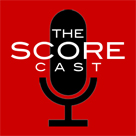

<?xml version="1.0" encoding="UTF-8"?><rss version="2.0"
	xmlns:content="http://purl.org/rss/1.0/modules/content/"
	xmlns:wfw="http://wellformedweb.org/CommentAPI/"
	xmlns:dc="http://purl.org/dc/elements/1.1/"
	xmlns:atom="http://www.w3.org/2005/Atom"
	xmlns:sy="http://purl.org/rss/1.0/modules/syndication/"
	xmlns:slash="http://purl.org/rss/1.0/modules/slash/"
	xmlns:itunes="http://www.itunes.com/dtds/podcast-1.0.dtd"
xmlns:rawvoice="http://www.rawvoice.com/rawvoiceRssModule/"
xmlns:googleplay="http://www.google.com/schemas/play-podcasts/1.0"

xmlns:georss="http://www.georss.org/georss" xmlns:geo="http://www.w3.org/2003/01/geo/wgs84_pos#"
>

<channel>
	<title>collaboration &#8211; SCOREcastOnline.com</title>
	<atom:link href="." rel="self" type="application/rss+xml" />
	<link>http://www.scorecastonline.com</link>
	<description>Global Community for the Professional Media Composer</description>
	<lastBuildDate>
	Sun, 07 Apr 2019 10:06:34 +0000	</lastBuildDate>
	<language>en-US</language>
	<sy:updatePeriod>
	hourly	</sy:updatePeriod>
	<sy:updateFrequency>
	1	</sy:updateFrequency>
	<generator>https://wordpress.org/?v=5.1.1</generator>
<!-- podcast_generator="Blubrry PowerPress/7.4" mode="advanced" feedslug="feed" Blubrry PowerPress Podcasting plugin for WordPress (https://www.blubrry.com/powerpress/) -->
	<itunes:summary>Global Community for the Professional Media Composer</itunes:summary>
	<itunes:author>collaboration &#8211; SCOREcastOnline.com</itunes:author>
	<itunes:image href="../../../wp-content/plugins/powerpress/itunes_default.jpg" />
	<itunes:subtitle>Global Community for the Professional Media Composer</itunes:subtitle>
	<image>
		<title>collaboration &#8211; SCOREcastOnline.com</title>
		<url>../../../wp-content/uploads/powerpress/sig-SCO.jpg</url>
		<link>http://www.scorecastonline.com</link>
	</image>
<site xmlns="com-wordpress:feed-additions:1">29563098</site>	<item>
		<title>SCOREcast 066: NAMM 2019 with Damon Tedesco</title>
		<link>../../../2019/04/06/scorecast-066/</link>
				<comments>../../../2019/04/06/scorecast-066/#respond</comments>
				<pubDate>Sat, 06 Apr 2019 19:01:40 +0000</pubDate>
		<dc:creator><![CDATA[SCO Editorial Staff]]></dc:creator>
				<category><![CDATA[The SCOREcast Podcast Show]]></category>
		<category><![CDATA[academy awards]]></category>
		<category><![CDATA[basics]]></category>
		<category><![CDATA[business]]></category>
		<category><![CDATA[career]]></category>
		<category><![CDATA[collaboration]]></category>
		<category><![CDATA[community]]></category>
		<category><![CDATA[composer]]></category>
		<category><![CDATA[gear]]></category>
		<category><![CDATA[NAMM]]></category>
		<category><![CDATA[podcast show]]></category>
		<category><![CDATA[studio]]></category>

		<guid isPermaLink="false">../../../?p=2352</guid>
				<description><![CDATA[Brian welcomes veteran Hollywood scoring mixer Damon Tedesco to the show.]]></description>
								<content:encoded><![CDATA[
<iframe src="https://widget.spreaker.com/player?episode_id=17547016&amp;theme=light&amp;playlist=show&amp;playlist-continuous=false&amp;autoplay=false&amp;live-autoplay=false&amp;chapters-image=true&amp;episode_image_position=right&amp;hide-logo=true&amp;hide-likes=false&amp;hide-comments=false&amp;hide-sharing=false&amp;hide-download=false" width="100%" height="350px" frameborder="0"></iframe>


<p>Brian welcomes veteran Hollywood scoring mixer Damon Tedesco (Public Enemies, Penny Dreadful, The Wolfman) to the show for a rundown on what the pair discovered at this year&#8217;s NAMM Show, the latest on Netflix&#8217;s dustup with Spielberg and the Academy, and how the tables have finally turned for women composers as &#8220;Captain Marvel&#8221; topples multiple records at the box office.</p>


<p>This episode of the SCOREcast Podcast Show is sponsored by <a href="http://www.clockworksessions.com/">CLOCKWORKS SESSIONS</a>, a new music production company of industry professionals providing high end orchestral recording for film, TV, and video games with the Scottish Session Orchestra. SCOREcast listeners can get free HD video footage with any session booked using the coupon code &#8216;clockworkSC&#8221; from their website <a href="http://www.clockworksessions.com/">http://www.clockworksessions.com/</a>.</p>


<h1>Where to Listen</h1>


<h3><a title="SCOREcast at iTunes" href="https://itunes.apple.com/us/podcast/the-scorecast-podcast-show/id683848476" target="_blank" rel="noopener noreferrer">iTunes</a></h3>


<h3><a title="SCOREcast at Stitcher Radio" href="http://app.stitcher.com/browse/feed/28885/episodes" target="_blank" rel="noopener noreferrer">Stitcher Radio<br></a></h3>


<h1>Host</h1>


<ol><li><a rel="noopener noreferrer" href="https://brianralston.com/" target="_blank">Brian Ralston</a> &#8211; official website</li></ol>


<h1>On-Air Questions</h1>


<p>Have a question, a comment, or a reaction to something from this episode? Send Brian an email at <a rel="noopener noreferrer" href="mailto:scorecastonline@gmail.com" target="_blank">scorecastonline@gmail.com</a>.</p>


<div>
<p>*<em>Note: By submitting your question via email, you are hereby granting SCOREcastOnline.com permission to re-broadcast/re-read your message on the air in a future episode of the SCOREcast Podcast Show. However, SCOREcastOnline.com makes no guarantee that your email message will be used in a broadcast.</em></p>
</div>
]]></content:encoded>
							<wfw:commentRss>../../../2019/04/06/scorecast-066/feed/</wfw:commentRss>
		<slash:comments>0</slash:comments>
						<post-id xmlns="com-wordpress:feed-additions:1">2352</post-id>	</item>
		<item>
		<title>SCOREcast 065: Dax Phelan</title>
		<link>../../../2018/05/22/scorecast-065-2/</link>
				<comments>../../../2018/05/22/scorecast-065-2/#respond</comments>
				<pubDate>Tue, 22 May 2018 19:01:04 +0000</pubDate>
		<dc:creator><![CDATA[SCO Editorial Staff]]></dc:creator>
				<category><![CDATA[The SCOREcast Podcast Show]]></category>
		<category><![CDATA[business]]></category>
		<category><![CDATA[career]]></category>
		<category><![CDATA[collaboration]]></category>
		<category><![CDATA[directors]]></category>
		<category><![CDATA[podcast show]]></category>

		<guid isPermaLink="false">../../../?p=2349</guid>
				<description><![CDATA[Brian's first outing as the show's new host brings noted film director Dax Phelan to the table.]]></description>
								<content:encoded><![CDATA[
<figure><iframe src="https://widget.spreaker.com/player?episode_id=14848250&amp;theme=light&amp;playlist=false&amp;playlist-continuous=false&amp;autoplay=false&amp;live-autoplay=false&amp;chapters-image=true" width="100%" height="200px" frameborder="0"></iframe></figure>


<p>On Brian Ralston&#8217;s inaugural episode as new host of the SCOREcast Podcast Show, he welcomes DAX PHELAN, producer of such films as &#8220;The Sum of All Fears&#8221; and &#8220;The Canyons&#8221;, and writer/director of the runaway festival thriller &#8220;Jasmine&#8221;, to discuss his experiences with film composers on his studio feature films and finishing Orson Welles&#8217; posthumous masterpiece.</p>


<p>This episode of the SCOREcast Podcast Show is sponsored by <a href="http://www.clockworksessions.com/">CLOCKWORKS SESSIONS</a>, a new music production company of industry professionals providing high end orchestral recording for film, TV, and video games with the Scottish Session Orchestra. SCOREcast listeners can get free HD video footage with any session booked using the coupon code &#8216;clockworkSC&#8221; from their website <a href="http://www.clockworksessions.com/">http://www.clockworksessions.com/</a>.</p>


<h1>Where to Listen</h1>


<h3><a title="SCOREcast at iTunes" href="https://itunes.apple.com/us/podcast/the-scorecast-podcast-show/id683848476" target="_blank" rel="noopener noreferrer">iTunes</a></h3>


<h3><a title="SCOREcast at Stitcher Radio" href="http://app.stitcher.com/browse/feed/28885/episodes" target="_blank" rel="noopener noreferrer">Stitcher Radio<br></a></h3>


<h1>Host</h1>


<ol><li><a rel="noopener noreferrer" href="https://brianralston.com/" target="_blank">Brian Ralston</a> &#8211; official website</li></ol>


<h1>On-Air Questions</h1>


<p>Have a question, a comment, or a reaction to something from this episode? Send Brian an email at <a rel="noopener noreferrer" href="mailto:scorecastonline@gmail.com" target="_blank">scorecastonline@gmail.com</a>.</p>


<div>
<p>*<em>Note: By submitting your question via email, you are hereby granting SCOREcastOnline.com permission to re-broadcast/re-read your message on the air in a future episode of the SCOREcast Podcast Show. However, SCOREcastOnline.com makes no guarantee that your email message will be used in a broadcast.</em></p>
</div>
]]></content:encoded>
							<wfw:commentRss>../../../2018/05/22/scorecast-065-2/feed/</wfw:commentRss>
		<slash:comments>0</slash:comments>
						<post-id xmlns="com-wordpress:feed-additions:1">2349</post-id>	</item>
		<item>
		<title>SCOREcast 064: The Swan Song Episode</title>
		<link>../../../2018/05/02/scorecast-064/</link>
				<comments>../../../2018/05/02/scorecast-064/#respond</comments>
				<pubDate>Wed, 02 May 2018 17:59:01 +0000</pubDate>
		<dc:creator><![CDATA[SCO Editorial Staff]]></dc:creator>
				<category><![CDATA[The SCOREcast Podcast Show]]></category>
		<category><![CDATA[academy awards]]></category>
		<category><![CDATA[basics]]></category>
		<category><![CDATA[business]]></category>
		<category><![CDATA[career]]></category>
		<category><![CDATA[collaboration]]></category>
		<category><![CDATA[community]]></category>
		<category><![CDATA[composer]]></category>
		<category><![CDATA[gear]]></category>
		<category><![CDATA[NAMM]]></category>
		<category><![CDATA[podcast show]]></category>
		<category><![CDATA[studio]]></category>

		<guid isPermaLink="false">../../../?p=2338</guid>
				<description><![CDATA[On Deane's final episode as co-host, he and Brian discuss work/life priorities, film industry attitude problems, the Oscars®, and all things cool at this year's NAMM Show.]]></description>
								<content:encoded><![CDATA[<p><iframe src="https://widget.spreaker.com/player?episode_id=14820180&amp;theme=light&amp;playlist=false&amp;playlist-continuous=false&amp;autoplay=false&amp;live-autoplay=false&amp;chapters-image=true" width="100%" height="200px" frameborder="0"></iframe></p>
<p>It&#8217;s Deane&#8217;s final episode before Brian takes the wheel as the SCOREcast Podcast Show&#8217;s new host, but before he bows out the boys have one final heart-to-heart on balancing a personal life with a professional business one, solving real problems in real-world production situations, Alexandre Desplat&#8217;s recent Oscar® win, and all the cool stuff that went down at the 2018 NAMM Show and 12th annual SCOREcast NAMM Dinner.</p>
<p>This episode of the SCOREcast Podcast Show is sponsored by 99 Dollar Orchestra, a fantastic new remote recording ensemble offering sessions in Lisbon, Los Angeles, and at Abbey Road in London. For a limited time, as a listener of SCOREcast you can get a 30% discount off your order by entering coupon code <b>SCORECAST30</b> upon checkout at <a title="99DollarOrchestra.com" href="https://99dollarorchestra.com" target="_blank" rel="noopener noreferrer">99DollarOrchestra.com</a>.</p>
<h1>Where to Listen</h1>
<h3><a title="SCOREcast at iTunes" href="https://itunes.apple.com/us/podcast/the-scorecast-podcast-show/id683848476" target="_blank" rel="noopener noreferrer">iTunes</a></h3>
<h3><a title="SCOREcast at Stitcher Radio" href="http://app.stitcher.com/browse/feed/28885/episodes" target="_blank" rel="noopener noreferrer">Stitcher Radio<br />
</a></h3>
<h1>Hosts</h1>
<ol>
<li><a href="https://deaneogden.com/" target="_blank" rel="noopener noreferrer">Deane Ogden</a> &#8211; official website</li>
<li><a href="https://brianralston.com/" target="_blank" rel="noopener noreferrer">Brian Ralston</a> &#8211; official website</li>
</ol>
<h1>On-Air Questions</h1>
<p>Have a question, a comment, or a reaction to something from this episode? Send Deane and Brian an email at <a href="mailto:scorecastonline@gmail.com" target="_blank" rel="noopener noreferrer">scorecastonline@gmail.com</a>.</p>
<div>
<p>*<em>Note: By submitting your question via email, you are hereby granting SCOREcastOnline.com permission to re-broadcast/re-read your message on the air in a future episode of the SCOREcast Podcast Show. However, SCOREcastOnline.com makes no guarantee that your email message will be used in a broadcast.</em></p>
</div>
]]></content:encoded>
							<wfw:commentRss>../../../2018/05/02/scorecast-064/feed/</wfw:commentRss>
		<slash:comments>0</slash:comments>
						<post-id xmlns="com-wordpress:feed-additions:1">2338</post-id>	</item>
		<item>
		<title>SCOREcast 057: Simon Franglen</title>
		<link>../../../2016/12/24/scorecast-057-simon-franglen/</link>
				<comments>../../../2016/12/24/scorecast-057-simon-franglen/#respond</comments>
				<pubDate>Sun, 25 Dec 2016 01:23:33 +0000</pubDate>
		<dc:creator><![CDATA[SCO Editorial Staff]]></dc:creator>
				<category><![CDATA[The SCOREcast Podcast Show]]></category>
		<category><![CDATA[Avatar]]></category>
		<category><![CDATA[basics]]></category>
		<category><![CDATA[business]]></category>
		<category><![CDATA[career]]></category>
		<category><![CDATA[collaboration]]></category>
		<category><![CDATA[gear]]></category>
		<category><![CDATA[interview]]></category>
		<category><![CDATA[James Horner]]></category>
		<category><![CDATA[podcast show]]></category>
		<category><![CDATA[sample libraries]]></category>
		<category><![CDATA[Titanic]]></category>
		<category><![CDATA[veteran]]></category>

		<guid isPermaLink="false">../../../?p=2302</guid>
				<description><![CDATA[A conversation with The Magnificent Seven composer Simon Franglen]]></description>
								<content:encoded><![CDATA[<p><iframe src="https://widget.spreaker.com/player?episode_id=10177594&#038;theme=light&#038;playlist=false&#038;playlist-continuous=false&#038;autoplay=false&#038;live-autoplay=false&#038;chapters-image=true" width="100%" height="200px" frameborder="0"></iframe></p>
<p>Merry Christmas, SCOREcasters! Just in time for your snowbound cross-country jaunt to Grandma&#8217;s house, Deane and Brian play Santa and deliver this year&#8217;s holiday episode in conversation with <em>The Magnificent Seven</em> composer <strong>SIMON FRANGLEN</strong>. Grab a hot cup of nog and a slice of that pumpkin pie and settle in for a terrific discussion with Simon as he walks you through working on several of the highest-grossing pictures of all-time, including <em>Titanic </em>and <em>Avatar</em>, plus the complete behind-the-scenes story of the score to his newest film, <em>The Magnificent Seven</em>, where he took up the mantle of his dear friend James Horner and turned out one of 2016&#8217;s most notable musical achievements.</p>
<h1>Where to Listen</h1>
<h3><a title="SCOREcast at iTunes" href="https://itunes.apple.com/us/podcast/the-scorecast-podcast-show/id683848476" target="_blank">iTunes</a></h3>
<h3><a title="SCOREcast at Stitcher Radio" href="http://app.stitcher.com/browse/feed/28885/episodes" target="_blank">Stitcher Radio<br />
</a></h3>
<p>&nbsp;</p>
<h1>Shownotes</h1>
<ol>
<li><a href="https://itunes.apple.com/us/album/magnificent-seven-original/id1146428051">THE MAGNIFICENT SEVEN: James Horner and Simon Franglen</a> — iTunes Store download</li>
</ol>
<p>&nbsp;</p>
<h1>On-Air Questions</h1>
<p>Have a question, a comment, or a reaction to something from this episode? Send Deane and Brian an email at <a href="mailto:scorecastonline@gmail.com" target="_blank">scorecastonline@gmail.com</a>.</p>
<div>
<p>*<em>Note: By submitting your question via email, you are hereby granting SCOREcastOnline.com permission to re-broadcast/re-read your message on the air in a future episode of the SCOREcast Podcast Show. However, SCOREcastOnline.com makes no guarantee that your email message will be used in a broadcast.</em></p>
</div>
]]></content:encoded>
							<wfw:commentRss>../../../2016/12/24/scorecast-057-simon-franglen/feed/</wfw:commentRss>
		<slash:comments>0</slash:comments>
						<post-id xmlns="com-wordpress:feed-additions:1">2302</post-id>	</item>
		<item>
		<title>SCOREcast 052: How Far Would You Go to Get a Gig?</title>
		<link>../../../2015/08/21/scorecast-052-how-far-would-you-go-to-get-a-gig/</link>
				<comments>../../../2015/08/21/scorecast-052-how-far-would-you-go-to-get-a-gig/#respond</comments>
				<pubDate>Fri, 21 Aug 2015 20:58:20 +0000</pubDate>
		<dc:creator><![CDATA[SCO Editorial Staff]]></dc:creator>
				<category><![CDATA[The SCOREcast Podcast Show]]></category>
		<category><![CDATA[career]]></category>
		<category><![CDATA[collaboration]]></category>
		<category><![CDATA[Horner]]></category>
		<category><![CDATA[Morricone]]></category>
		<category><![CDATA[news]]></category>
		<category><![CDATA[philosophy]]></category>
		<category><![CDATA[podcast show]]></category>

		<guid isPermaLink="false">../../../?p=2245</guid>
				<description><![CDATA[The boys are back for a rich discussion on working for free, spending from your own pocket on production, and going the extra mile to accommodate collaborators.]]></description>
								<content:encoded><![CDATA[<p><iframe src="https://widget.spreaker.com/player?episode_id=8919297&#038;theme=light&#038;playlist=false&#038;playlist-continuous=false&#038;autoplay=false&#038;live-autoplay=false&#038;chapters-image=true" width="100%" height="200px" frameborder="0"></iframe></p>
<p>The boys are back in this 52nd episode of the <a href="../../../category/podcast" target="_blank" rel="noopener">SCOREcast Podcast Show</a>, paying tribute to the great James Horner and looking at the new Tarantino/Morricone relationship for &#8220;The Hateful Eight&#8221;. Finally, on the heels of the &#8220;Ask Us Anything&#8221; episode (<a href="../../../2015/05/27/scorecast-051-ask-us-anything" target="_blank" rel="noopener">SCOREcast #51</a>), Deane and Brian have a juicy discussion on how far a composer should go to get a gig, including the concepts of working for free, spending money out of pocket on score production, and going the extra mile to accommodate collaborators.</p>
<hr />
<p>&nbsp;</p>
<h1>Where to Listen</h1>
<h3><a title="SCOREcast at iTunes" href="https://itunes.apple.com/us/podcast/the-scorecast-podcast-show/id683848476" target="_blank" rel="noopener">iTunes</a></h3>
<h3><a title="SCOREcast at Stitcher Radio" href="http://app.stitcher.com/browse/feed/28885/episodes" target="_blank" rel="noopener">Stitcher Radio</a></h3>
<hr />
<p>&nbsp;</p>
<h1>Shownotes/Mentions</h1>
<ol>
<li>Brian&#8217;s new film, <a href="http://redcarpetcrash.com/awaken-trailer-starring-daryl-hannah-vinnie-jones-and-natalie-burn/" target="_blank" rel="noopener">&#8220;AWAKEN&#8221; (synopsis and trailer</a>)</li>
<li>Deane&#8217;s new album, <a href="http://www.deaneogden.com/album/kwela/" target="_blank" rel="noopener">&#8220;KWELA&#8221;, released internationally August 4th</a></li>
<li><a href="http://www.rollingstone.com/movies/news/ennio-morricone-to-score-quentin-tarantinos-hateful-eight-20150712" target="_blank" rel="noopener">Quentin Tarantino commissions his first original score from Ennio Morricone for &#8220;The Hateful Eight&#8221;</a> — Rolling Stone</li>
<li><a href="http://www.hollywoodreporter.com/news/james-horner-dead-titanic-composer-804365" target="_blank" rel="noopener">Film music legend James Horner dies in plane crash</a> — Hollywood Reporter</li>
<li><a title="Output" href="http://www.hollywoodreporter.com/news/antoine-fuqua-james-horner-composed-810115" target="_blank" rel="noopener">James Horner composed score for upcoming &#8220;Magnificent Seven&#8221; film</a> — Hollywood Reporter</li>
</ol>
<hr />
<p>&nbsp;</p>
<h1>On-Air Questions</h1>
<p>Have a question or a comment you&#8217;d like addressed on-air? Send Deane and Brian an email at <a href="mailto:scorecastonline@gmail.com" target="_blank" rel="noopener">scorecastonline@gmail.com</a>.</p>
<div>
<p>*<em>Note: By submitting your question via email, you are hereby granting SCOREcastOnline.com permission to re-broadcast/re-read your message on the air in a future episode of the SCOREcast Podcast Show. However, SCOREcastOnline.com makes no guarantee that your email message will be used in a broadcast.</em></p>
</div>
]]></content:encoded>
							<wfw:commentRss>../../../2015/08/21/scorecast-052-how-far-would-you-go-to-get-a-gig/feed/</wfw:commentRss>
		<slash:comments>0</slash:comments>
						<post-id xmlns="com-wordpress:feed-additions:1">2245</post-id>	</item>
		<item>
		<title>SCOREcast 051: Ask Us Anything</title>
		<link>../../../2015/05/27/scorecast-051-ask-us-anything/</link>
				<comments>../../../2015/05/27/scorecast-051-ask-us-anything/#respond</comments>
				<pubDate>Wed, 27 May 2015 17:20:48 +0000</pubDate>
		<dc:creator><![CDATA[SCO Editorial Staff]]></dc:creator>
				<category><![CDATA[The SCOREcast Podcast Show]]></category>
		<category><![CDATA[career]]></category>
		<category><![CDATA[collaboration]]></category>
		<category><![CDATA[kontakt]]></category>
		<category><![CDATA[news]]></category>
		<category><![CDATA[organization]]></category>
		<category><![CDATA[philosophy]]></category>
		<category><![CDATA[podcast show]]></category>
		<category><![CDATA[sample libraries]]></category>
		<category><![CDATA[workflow]]></category>

		<guid isPermaLink="false">../../../?p=2236</guid>
				<description><![CDATA[You asked. We answered. As many listener questions as we could get through in 90 minutes.]]></description>
								<content:encoded><![CDATA[<p><iframe src="https://widget.spreaker.com/player?episode_id=8919299&#038;theme=light&#038;playlist=false&#038;playlist-continuous=false&#038;autoplay=false&#038;live-autoplay=false&#038;chapters-image=true" width="100%" height="200px" frameborder="0"></iframe></p>
<p>On our 51st episode of the SCOREcast Podcast Show, Deane and Brian open up the floodgates of questions from SCOREcasters all over the world to talk through as many film scoring topics as they can in 90 minutes. Deane also sits down with the <a href="http://outputsounds.com" target="_blank">Output</a> team, makers of the new SIGNAL Kontakt library, to chat about the genesis of the product and its highly popular predecessor, REV.</p>
<h1>Where to Listen</h1>
<h3><a title="SCOREcast at iTunes" href="https://itunes.apple.com/us/podcast/the-scorecast-podcast-show/id683848476" target="_blank">iTunes</a></h3>
<h3><a title="SCOREcast at Stitcher Radio" href="http://app.stitcher.com/browse/feed/28885/episodes" target="_blank">Stitcher Radio</a></h3>
<h1>Shownotes/Mentions</h1>
<ol>
<li><a title="Output" href="http://outputsounds.com" target="_blank">Outputsounds.com</a> // SIGNAL</li>
</ol>
<h1>On-Air Questions</h1>
<p>Have a question or a comment you&#8217;d like addressed on-air? Send Deane and Brian an email at <a href="mailto:scorecastonline@gmail.com" target="_blank">scorecastonline@gmail.com</a>.</p>
<div>
<p>*<em>Note: By submitting your question via email, you are hereby granting SCOREcastOnline.com permission to re-broadcast/re-read your message on the air in a future episode of the SCOREcast Podcast Show. However, SCOREcastOnline.com makes no guarantee that your email message will be used in a broadcast.</em></p>
</div>
]]></content:encoded>
							<wfw:commentRss>../../../2015/05/27/scorecast-051-ask-us-anything/feed/</wfw:commentRss>
		<slash:comments>0</slash:comments>
						<post-id xmlns="com-wordpress:feed-additions:1">2236</post-id>	</item>
		<item>
		<title>SCOREcast 046: How to Be a Political Animal</title>
		<link>../../../2014/10/17/scorecast-46-politics/</link>
				<comments>../../../2014/10/17/scorecast-46-politics/#respond</comments>
				<pubDate>Fri, 17 Oct 2014 15:08:20 +0000</pubDate>
		<dc:creator><![CDATA[SCO Editorial Staff]]></dc:creator>
				<category><![CDATA[The SCOREcast Podcast Show]]></category>
		<category><![CDATA[basics]]></category>
		<category><![CDATA[career]]></category>
		<category><![CDATA[collaboration]]></category>
		<category><![CDATA[interview]]></category>
		<category><![CDATA[podcast show]]></category>

		<guid isPermaLink="false">../../../?p=2188</guid>
				<description><![CDATA[Deane and Brian spend an hour dissecting strategies toward navigating the complex political landscape that is the professional composing career.]]></description>
								<content:encoded><![CDATA[<p><center><iframe style="border: none;" src="//html5-player.libsyn.com/embed/episode/id/3153229/height/320/width/684/theme/standard/direction/no/autoplay/no/autonext/no/thumbnail/yes/preload/no/no_addthis/no/" width="684" height="320" scrolling="no" allowfullscreen="allowfullscreen"></iframe></center><br />
In the 46th episode of the SCOREcast Podcast Show, Deane and Brian visit with Greg Curtis, owner of <em>The Bridge Recording</em> in Los Angeles, which is one of the busiest scoring stages in the LA basin. Greg explains how he has stayed at the top of the scoring studio business by applying cutting-edge technology, strategies and staying composer-focussed in the design of his company. The boys then engage in a long conversation about how to navigate just about any political scenario you might encounter in your media music career. Deane and Brian cover strategies for working for directors and producers, pleasing studio heads, collaborating with other composers, and even hiring or working with family and friends.</p>
<p>This episode is sponsored by Sample Logic&#8217;s new <em>Cinematic Keys.</em> SCOREcasters can use offer code <strong>FB0412</strong> and get 10% your total order storewide during checkout at <a title="Sample Logic" href="http://www.samplelogic.com/products/cinematic-keys" target="_blank">samplelogic.com</a>.</p>
<p>&nbsp;</p>
<h1>Where to Listen</h1>
<h3><a title="SCOREcast at iTunes" href="https://itunes.apple.com/us/podcast/the-scorecast-podcast-show/id683848476" target="_blank">iTunes</a></h3>
<h3><a title="SCOREcast at Stitcher Radio" href="http://app.stitcher.com/browse/feed/28885/episodes" target="_blank">Stitcher Radio<br />
</a></h3>
<p>&nbsp;</p>
<h1>Shownotes</h1>
<ol>
<li><a href="http://www.thebridgerecording.com/" target="_blank">The Bridge Recording Studios, Glendale, CA</a> — <em>LA&#8217;s busiest and finest boutique scoring stage, owned and operated by Greg Curtis.</em></li>
<li><a title="Sample Logic" href="http://www.samplelogic.com/products/cinematic-keys" target="_blank">SampleLogic.com</a> — <em>Get 10% off your total order storewide by entering offer code <strong>FB0412 </strong>during checkout at <a title="Sample Logic" href="http://www.samplelogic.com/products/cinematic-keys" target="_blank">samplelogic.com</a>.<br />
</em></li>
</ol>
<p>&nbsp;</p>
<h1>On-Air Questions</h1>
<p>Have a question or a comment you&#8217;d like addressed on-air? Send Deane and Brian an email at <a href="mailto:scorecastonline@gmail.com" target="_blank">scorecastonline@gmail.com</a>.</p>
<div>
<p>*<em>Note: By submitting your question via email, you are hereby granting SCOREcastOnline.com permission to re-broadcast/re-read your message on the air in a future episode of the SCOREcast Podcast Show. However, SCOREcastOnline.com makes no guarantee that your email message will be used in a broadcast.</em></p>
</div>
]]></content:encoded>
							<wfw:commentRss>../../../2014/10/17/scorecast-46-politics/feed/</wfw:commentRss>
		<slash:comments>0</slash:comments>
						<post-id xmlns="com-wordpress:feed-additions:1">2188</post-id>	</item>
		<item>
		<title>SCOREcast 045: LA Recording Musicians Roundtable</title>
		<link>../../../2014/08/28/scorecast-45-la-recording-musicians-roundtable/</link>
				<comments>../../../2014/08/28/scorecast-45-la-recording-musicians-roundtable/#respond</comments>
				<pubDate>Thu, 28 Aug 2014 14:37:38 +0000</pubDate>
		<dc:creator><![CDATA[SCO Editorial Staff]]></dc:creator>
				<category><![CDATA[The SCOREcast Podcast Show]]></category>
		<category><![CDATA[career]]></category>
		<category><![CDATA[collaboration]]></category>
		<category><![CDATA[Hollywood]]></category>
		<category><![CDATA[orchestration]]></category>
		<category><![CDATA[podcast show]]></category>
		<category><![CDATA[studio]]></category>

		<guid isPermaLink="false">../../../?p=2170</guid>
				<description><![CDATA[Hollywood Studio Symphony greats Amy Tatum, Belinda Broughton, Phil O'Connor and Rick Baptist join the boys for an epic chat on writing and recording for live orchestra.]]></description>
								<content:encoded><![CDATA[<p><center><iframe style="border: none;" src="//html5-player.libsyn.com/embed/episode/id/3153230/height/320/width/684/theme/standard/direction/no/autoplay/no/autonext/no/thumbnail/yes/preload/no/no_addthis/no/" width="684" height="320" scrolling="no" allowfullscreen="allowfullscreen"></iframe></center><br />
In this episode that&#8217;s been three years in the making, Deane and Brian go full-tilt boogie and spend a morning at Greg Curtis&#8217; <em>The Bridge Recording Studio</em> in Los Angeles talking with four of LA&#8217;s finest top-call recording musicians. Hollywood Studio Symphony greats Amy Tatum, Belinda Broughton, Phil O&#8217;Connor and Rick Baptist discuss the art, craft, discipline, strategy and struggle of becoming a successful recording musician and offer a host of tips and tricks to composers who are writing and producing for live orchestra. This is a value-packed two hours that you don&#8217;t want to miss. Get out your notepads for this one, chillins… things are about to get truly epic.</p>
<p>&nbsp;</p>
<h1>Where to Listen</h1>
<h3><a title="SCOREcast at iTunes" href="https://itunes.apple.com/us/podcast/the-scorecast-podcast-show/id683848476" target="_blank">iTunes</a></h3>
<h3><a title="SCOREcast at Stitcher Radio" href="http://app.stitcher.com/browse/feed/28885/episodes" target="_blank">Stitcher Radio<br />
</a></h3>
<p>&nbsp;</p>
<h1>Shownotes</h1>
<ol>
<li><a href="http://www.thebridgerecording.com/" target="_blank">The Bridge Recording Studios, Glendale, CA</a> — <em>LA&#8217;s busiest and finest boutique scoring stage, owned and operated by Greg Curtis</em></li>
<li><a href="http://onthehit.com" target="_blank">ON THE HIT with DEANE OGDEN podcast</a> — <em>Deane Ogden&#8217;s one-on-one chats with the players who make hit music in radio and records<br />
</em></li>
</ol>
<p>&nbsp;</p>
<h1>On-Air Questions</h1>
<p>Have a question or a comment you&#8217;d like addressed on-air? Send Deane and Brian an email at <a href="mailto:scorecastonline@gmail.com" target="_blank">scorecastonline@gmail.com</a>.</p>
<div>
<p>*<em>Note: By submitting your question via email, you are hereby granting SCOREcastOnline.com permission to re-broadcast/re-read your message on the air in a future episode of the SCOREcast Podcast Show. However, SCOREcastOnline.com makes no guarantee that your email message will be used in a broadcast.</em></p>
</div>
]]></content:encoded>
							<wfw:commentRss>../../../2014/08/28/scorecast-45-la-recording-musicians-roundtable/feed/</wfw:commentRss>
		<slash:comments>0</slash:comments>
						<post-id xmlns="com-wordpress:feed-additions:1">2170</post-id>	</item>
		<item>
		<title>SCOREcast 31: Total Request (Sorta) LIVE!</title>
		<link>../../../2011/10/28/scorecast-31-total-request/</link>
				<comments>../../../2011/10/28/scorecast-31-total-request/#comments</comments>
				<pubDate>Fri, 28 Oct 2011 08:55:50 +0000</pubDate>
		<dc:creator><![CDATA[SCO Editorial Staff]]></dc:creator>
				<category><![CDATA[The SCOREcast Podcast Show]]></category>
		<category><![CDATA[basics]]></category>
		<category><![CDATA[career]]></category>
		<category><![CDATA[collaboration]]></category>
		<category><![CDATA[podcast show]]></category>

		<guid isPermaLink="false">../../../2011/10/scorecast-31-total-request.html</guid>
				<description><![CDATA[In our first Q&#038;A episode, we open up Twitter, Facebook, and a hangout on Google+ to hear what's on your mind about writing, producing, "politiking", and navigating the business.]]></description>
								<content:encoded><![CDATA[<h2>SCOREcast No. 31: Total Request (Sorta) LIVE!<span style="color: #ff0000;"><br />
</span></h2>
<div>Originally Recorded: <em>October 1, 2011</em></div>
<div>This Episode: <span style="color: #ff0000;"><strong><em>Your questions answered from Twitter, Facebook and Google+</em></strong></span><br />
Co-hosts: <a href="http://www.deaneogden.com" target="_blank">Deane Ogden</a> and <a href="http://www.brianralston.com/" target="_blank">Brian Ralston</a><br />
SCOREcast theme composed by: <a href="http://www.kejero.com" target="_blank">Jeroen &#8220;Keje<em>ro&#8221; Rogier<br />
</em></a><em>SCOREcast announcer: </em><a href="http://www.voiceboy.com/" target="_blank"><em>Jeff Rechner</em></a><br />
<em></em></div>
<p><em><a href="http://tinyurl.com/scorecast21">iTunes RSS Link</a></em></p>
<hr />
<h4>Episode Description</h4>
<p>In this episode, the boys answer your questions in our very first social media-centric episode of SCOREcast. Nothing is sacred—topics include samples versus live instruments, composer copyright issues, dealing with your first film project, handling directors, where to live when starting a film scoring career, and much, much more. We&#8217;ll also give you a sneak peek into what we have planned for SCOREcast&#8217;s 5th Anniversary, and how you can get the full scoop coming up on what&#8217;s ahead for the website and podcast. Check it out!</p>
<hr />
<h4>Community Discussion</h4>
<p>Weigh in on this episode! We want to hear your thoughts—Log into the <strong>COMMENTS</strong> below to leave your opinions and participate in the discussion!<strong> </strong></p>
<hr />
<h4>On-Air Questions</h4>
<p>Have a question or a comment you&#8217;d like addressed on-air? There are now two ways to do it:<br />
1) Send Deane and Brian an email at <a href="mailto:scorecastonline@gmail.com" target="_blank">scorecastonline@gmail.com</a><br />
2) Call the <em>SCOREcast Hotline</em> and leave a voicemail at <strong>(757) SCORE-60</strong> [757-726-7360]</p>
<div>
<p>*<em>Note: By leaving a voice recording on the hotline or submitting your question via email, you are hereby granting SCOREcastOnline.com permission to re-broadcast/re-read your message on the air in a future episode of the SCOREcast Podcast. However, SCOREcastOnline.com makes no guarantee that your audio or email message will be used in a broadcast.</em></p>
</div>
]]></content:encoded>
							<wfw:commentRss>../../../2011/10/28/scorecast-31-total-request/feed/</wfw:commentRss>
		<slash:comments>1</slash:comments>
				<enclosure url="../../../Podcast/02_SCOREcast_No_31_TotalRequest.mp3" length="103608238" type="audio/mpeg" />
			<itunes:subtitle>In our first Q&amp;A episode, we open up Twitter, Facebook, and a hangout on Google+ to hear what&#039;s on your mind about writing, producing, &quot;politiking&quot;, and navigating the business.</itunes:subtitle>
		<itunes:summary><![CDATA[SCOREcast No. 31: Total Request (Sorta) LIVE!<br /><br />
<br />
Originally Recorded: October 1, 2011<br />
This Episode: Your questions answered from Twitter, Facebook and Google+<br /><br />
Co-hosts: <a href="http://www.deaneogden.com" target="_blank">Deane Ogden</a> and <a href="http://www.brianralston.com/" target="_blank">Brian Ralston</a><br /><br />
SCOREcast theme composed by: <a href="http://www.kejero.com" target="_blank">Jeroen &#8220;Kejero&#8221; Rogier<br /><br />
</a>SCOREcast announcer: <a href="http://www.voiceboy.com/" target="_blank">Jeff Rechner</a><br /><br />
<br />
<a href="http://tinyurl.com/scorecast21">iTunes RSS Link</a><br />
<br />
Episode Description<br />
In this episode, the boys answer your questions in our very first social media-centric episode of SCOREcast. Nothing is sacred—topics include samples versus live instruments, composer copyright issues, dealing with your first film project, handling directors, where to live when starting a film scoring career, and much, much more. We&#8217;ll also give you a sneak peek into what we have planned for SCOREcast&#8217;s 5th Anniversary, and how you can get the full scoop coming up on what&#8217;s ahead for the website and podcast. Check it out!<br />
<br />
Community Discussion<br />
Weigh in on this episode! We want to hear your thoughts—Log into the COMMENTS below to leave your opinions and participate in the discussion! <br />
<br />
On-Air Questions<br />
Have a question or a comment you&#8217;d like addressed on-air? There are now two ways to do it:<br /><br />
1) Send Deane and Brian an email at <a href="mailto:scorecastonline@gmail.com" target="_blank">scorecastonline@gmail.com</a><br /><br />
2) Call the SCOREcast Hotline and leave a voicemail at (757) SCORE-60 [757-726-7360]<br />
<br />
*Note: By leaving a voice recording on the hotline or submitting your question via email, you are hereby granting SCOREcastOnline.com permission to re-broadcast/re-read your message on the air in a future episode of the SCOREcast Podcast. However, SCOREcastOnline.com makes no guarantee that your audio or email message will be used in a broadcast.<br />
<br />]]></itunes:summary>
		<itunes:author>collaboration &#8211; SCOREcastOnline.com</itunes:author>
		<itunes:duration>1:11:57</itunes:duration>
<post-id xmlns="com-wordpress:feed-additions:1">1182</post-id>	</item>
		<item>
		<title>SCOREcast 30: The Gloves Come Off</title>
		<link>../../../2011/07/11/scorecast-no-30/</link>
				<comments>../../../2011/07/11/scorecast-no-30/#comments</comments>
				<pubDate>Mon, 11 Jul 2011 20:30:36 +0000</pubDate>
		<dc:creator><![CDATA[SCO Editorial Staff]]></dc:creator>
				<category><![CDATA[The SCOREcast Podcast Show]]></category>
		<category><![CDATA[collaboration]]></category>
		<category><![CDATA[podcast show]]></category>

		<guid isPermaLink="false">../../../2011/07/scorecast-no-30.html</guid>
				<description><![CDATA[So many issues, so few bullets.]]></description>
								<content:encoded><![CDATA[<h2>SCOREcast No. 30: The Gloves Come Off<span style="color: #ff0000;"><br />
</span></h2>
<div>Originally Recorded: <em>June 10, 2011</em></div>
<div>This Episode: <span style="color: #ff0000;"><strong><em>Hollywood composer agency shake-up; Cinesamples&#8217; Cinebrass; Composer union latest </em></strong></span><br />
Co-hosts: <a href="http://www.deaneogden.com" target="_blank">Deane Ogden</a> and <a href="http://www.brianralston.com/" target="_blank">Brian Ralston</a><br />
SCOREcast theme composed by: <a href="http://www.kejero.com" target="_blank">Jeroen &#8220;Keje<em>ro&#8221; Rogier<br />
</em></a><em>SCOREcast announcer: </em><a href="http://www.voiceboy.com/" target="_blank"><em>Jeff Rechner</em></a><br />
<em></em></div>
<p><em><a href="http://tinyurl.com/scorecast21">iTunes RSS Link</a></em></p>
<hr />
<h4>Episode Description</h4>
<p>The boys are back, they&#8217;re mad as hell, and they&#8217;re not gonna take it anymore!<br />
In this episode, things get pretty heated as Deane and Brian hash through some controversial topics including the new composer agency at WME, UJam&#8217;s songwriting software being actively endorsed by the Zimmer camp, and a recap of recent unionization news. Finally, in a segment that will be valuable to most people struggling to get started in the business, Deane and Brian dissect a real-life scenario regarding the right way to begin a professional media composing career. Add to that a look inside the creation of Cinesamples&#8217; Cinebrass library as well as our ever popular Top Picks segment, and you&#8217;ve got an episode that packs a pretty powerful punch. With almost 90 minutes of rapid-fire content, this episode is one you are <em><strong>not</strong></em> going to want to miss!<strong></strong></p>
<hr />
<h4>Community Discussion</h4>
<p>Weigh in on this episode! We want to hear your thoughts—Log into the <strong>COMMENTS</strong> below to leave your opinions and participate in the discussion!<strong> </strong></p>
<hr />
<h4>On-Air Questions</h4>
<p>Have a question or a comment you&#8217;d like addressed on-air? There are now two ways to do it:<br />
1) Send Deane and Brian an email at <a href="mailto:scorecastonline@gmail.com" target="_blank">scorecastonline@gmail.com</a><br />
2) Call the <em>SCOREcast Hotline</em> and leave a voicemail at <strong>(757) SCORE-60</strong> [757-726-7360]</p>
<div>
<p>*<em>Note: By leaving a voice recording on the hotline or submitting your question via email, you are hereby granting SCOREcastOnline.com permission to re-broadcast/re-read your message on the air in a future episode of the SCOREcast Podcast. However, SCOREcastOnline.com makes no guarantee that your audio or email message will be used in a broadcast.</em><strong> </strong></p>
<hr />
<h4>Show Notes<span style="color: #ff0000;"><strong><strong><br />
</strong></strong></span></h4>
<ul>
<li><span style="color: #ff0000;"><em><span style="color: #000000;"><a href="http://www.gsamusic.com/" target="_blank">The Gorfaine/Schwartz Agency</a> (Hollywood film composer talent agency)</span></em></span></li>
<li><span style="color: #ff0000;"><em><span style="color: #000000;"><a href="http://www.wma.com/" target="_blank">William Morris Endeavor</a> (Hollywood talent and literary agency)</span></em></span></li>
<li><span style="color: #ff0000;"><em><span style="color: #000000;"><a href="http://www.ujam.com/" target="_blank">uJam</a> (Intuitive self-arranging software)</span></em></span></li>
<li><span style="color: #ff0000;"><em><span style="color: #000000;"><a href="http://www.celemony.com" target="_blank">Celemony Melodyne</a> (Polyphonic music separation software)</span></em></span></li>
<li><span style="color: #ff0000;"><em><span style="color: #000000;"><a href="http://www.taxi.com/" target="_blank">Taxi.com</a> (Online independent A&amp;R service)</span></em></span></li>
<li><span style="color: #ff0000;"><em><span style="color: #000000;"><a href="http://theamcl-399.org/" target="_blank">Association of Media Composers and Lyricists</a>, aka &#8220;The AMCL&#8221; (Hollywood composer unionization effort)</span></em></span></li>
<li><span style="color: #ff0000;"><em><span style="color: #000000;">The AMCL on <a href="https://www.facebook.com/pages/The-Association-of-Media-Composers-and-Lyricists/125976254127207" target="_blank">Facebook</a></span></em></span></li>
<li><span style="color: #ff0000;"><em><span style="color: #000000;"><a href="http://cinesamples.com/products/cinebrass/" target="_blank">Cinesamples&#8217; &#8220;CineBrass&#8221;</a> (Hollywood brass library for Kontakt)</span></em></span></li>
<li><span style="color: #ff0000;"><span style="color: #ff0000;"><span style="color: #000000;"><em><a href="http://www.afm.org/" target="_blank">American Federation of Musicians</a>, aka &#8220;AFofM&#8221; (Musicians&#8217; union)</em></span></span></span></li>
</ul>
<hr />
<p>&nbsp;</p>
<h4>&#8220;TOP PICKS&#8221; Links</h4>
<p><span style="color: #ff0000;"><span style="color: #000000;"><strong>Brian Ralston&#8217;s</strong> &#8220;Top Picks&#8221;<br />
</span></span><em><a href="http://www.kbcovers.com/servlet/StoreFront" target="_blank">KB Covers</a> (Application-specific keyboard covers)</em><br />
<em><a href="http://www.alesis.com/iodock" target="_blank">Alesis iPad IO Dock</a> (iPad I/O Interface)</em><strong></strong></p>
<p><em></em><span style="color: #ff0000;"><span style="color: #000000;"><strong>Deane Ogden&#8217;s</strong> &#8220;Top Picks&#8221;<br />
<em><a href="http://www.chairworks.com/catalog/Residential/Executive" target="_blank">Chairworks Aqua II</a> (HM Aeron Chair® &#8220;killer&#8221;) [<a href="http://www.sit4less.com" target="_blank">Sit 4 Less</a> &#8211; Suggested retailer in USA]</em><br />
<em><a href="http://www.oldworldbaton.com/" target="_blank">Old World Baton Company</a> (Custom-made conductor batons)<strong></strong></em></span></span><strong><span style="color: #ff0000;"><br />
</span></strong></p>
</div>
]]></content:encoded>
							<wfw:commentRss>../../../2011/07/11/scorecast-no-30/feed/</wfw:commentRss>
		<slash:comments>16</slash:comments>
				<enclosure url="../../../Podcast/02_SCOREcast_No_30_Cussing-Episode.mp3" length="102584464" type="audio/mpeg" />
			<itunes:subtitle>So many issues, so few bullets.</itunes:subtitle>
		<itunes:summary><![CDATA[SCOREcast No. 30: The Gloves Come Off<br /><br />
<br />
Originally Recorded: June 10, 2011<br />
This Episode: Hollywood composer agency shake-up; Cinesamples&#8217; Cinebrass; Composer union latest <br /><br />
Co-hosts: <a href="http://www.deaneogden.com" target="_blank">Deane Ogden</a> and <a href="http://www.brianralston.com/" target="_blank">Brian Ralston</a><br /><br />
SCOREcast theme composed by: <a href="http://www.kejero.com" target="_blank">Jeroen &#8220;Kejero&#8221; Rogier<br /><br />
</a>SCOREcast announcer: <a href="http://www.voiceboy.com/" target="_blank">Jeff Rechner</a><br /><br />
<br />
<a href="http://tinyurl.com/scorecast21">iTunes RSS Link</a><br />
<br />
Episode Description<br />
The boys are back, they&#8217;re mad as hell, and they&#8217;re not gonna take it anymore!<br /><br />
In this episode, things get pretty heated as Deane and Brian hash through some controversial topics including the new composer agency at WME, UJam&#8217;s songwriting software being actively endorsed by the Zimmer camp, and a recap of recent unionization news. Finally, in a segment that will be valuable to most people struggling to get started in the business, Deane and Brian dissect a real-life scenario regarding the right way to begin a professional media composing career. Add to that a look inside the creation of Cinesamples&#8217; Cinebrass library as well as our ever popular Top Picks segment, and you&#8217;ve got an episode that packs a pretty powerful punch. With almost 90 minutes of rapid-fire content, this episode is one you are not going to want to miss!<br />
<br />
Community Discussion<br />
Weigh in on this episode! We want to hear your thoughts—Log into the COMMENTS below to leave your opinions and participate in the discussion! <br />
<br />
On-Air Questions<br />
Have a question or a comment you&#8217;d like addressed on-air? There are now two ways to do it:<br /><br />
1) Send Deane and Brian an email at <a href="mailto:scorecastonline@gmail.com" target="_blank">scorecastonline@gmail.com</a><br /><br />
2) Call the SCOREcast Hotline and leave a voicemail at (757) SCORE-60 [757-726-7360]<br />
<br />
*Note: By leaving a voice recording on the hotline or submitting your question via email, you are hereby granting SCOREcastOnline.com permission to re-broadcast/re-read your message on the air in a future episode of the SCOREcast Podcast. However, SCOREcastOnline.com makes no guarantee that your audio or email message will be used in a broadcast. <br />
<br />
Show Notes<br /><br />
<br />
<br />
* <a href="http://www.gsamusic.com/" target="_blank">The Gorfaine/Schwartz Agency</a> (Hollywood film composer talent agency)<br />
* <a href="http://www.wma.com/" target="_blank">William Morris Endeavor</a> (Hollywood talent and literary agency)<br />
* <a href="http://www.ujam.com/" target="_blank">uJam</a> (Intuitive self-arranging software)<br />
* <a href="http://www.celemony.com" target="_blank">Celemony Melodyne</a> (Polyphonic music separation software)<br />
* <a href="http://www.taxi.com/" target="_blank">Taxi.com</a> (Online independent A&amp;R service)<br />
* <a href="http://theamcl-399.org/" target="_blank">Association of Media Composers and Lyricists</a>, aka &#8220;The AMCL&#8221; (Hollywood composer unionization effort)<br />
* The AMCL on <a href="https://www.facebook.com/pages/The-Association-of-Media-Composers-and-Lyricists/125976254127207" target="_blank">Facebook</a><br />
* <a href="http://cinesamples.com/products/cinebrass/" target="_blank">Cinesamples&#8217; &#8220;CineBrass&#8221;</a> (Hollywood brass library for Kontakt)<br />
* <a href="http://www.afm.org/" target="_blank">American Federation of Musicians</a>, aka &#8220;AFofM&#8221; (Musicians&#8217; union)<br />
<br />
<br />
&nbsp;<br />
&#8220;TOP PICKS&#8221; Links<br />
Brian Ralston&#8217;s &#8220;Top Picks&#8221;<br /><br />
<a href="http://www.kbcovers.com/servlet/StoreFront" target="_blank">KB Covers</a> (Application-specific key...]]></itunes:summary>
		<itunes:author>collaboration &#8211; SCOREcastOnline.com</itunes:author>
		<itunes:duration>1:25:29</itunes:duration>
<post-id xmlns="com-wordpress:feed-additions:1">1108</post-id>	</item>
		<item>
		<title>SCOREcast 29: Christopher Lennertz</title>
		<link>../../../2011/02/25/scorecast-no-29/</link>
				<comments>../../../2011/02/25/scorecast-no-29/#comments</comments>
				<pubDate>Sat, 26 Feb 2011 04:53:03 +0000</pubDate>
		<dc:creator><![CDATA[SCO Editorial Staff]]></dc:creator>
				<category><![CDATA[The SCOREcast Podcast Show]]></category>
		<category><![CDATA[collaboration]]></category>
		<category><![CDATA[podcast show]]></category>

		<guid isPermaLink="false">../../../?p=1093</guid>
				<description><![CDATA[Fresh off Universal's animated "Hop!", Christopher Lennertz stops by SCOREcast for a lengthy chat on how he juggles features, television, and video games.]]></description>
								<content:encoded><![CDATA[<h2><a href="../../../wp-content/uploads/2010/12/sco_podcast_136.jpg"></a>SCOREcast No. 29: Christopher Lennertz<span style="color: #ff0000;"><br />
</span></h2>
<div>Original Air Date: <em>February 25, 2011</em></div>
<div>This Episode: <span style="color: #ff0000;"><strong><em>Guest Host: Christopher Lennertz</em></strong></span><br />
Co-hosts: <a href="http://www.deaneogden.com" target="_blank">Deane Ogden</a> and <a href="http://www.brianralston.com/" target="_blank">Brian Ralston</a><br />
SCOREcast theme composed by: <a href="http://www.kejero.com" target="_blank">Jeroen &#8220;Keje<em>ro&#8221; Rogier<br />
</em></a><em>SCOREcast announcer: </em><a href="http://www.voiceboy.com/" target="_blank"><em>Jeff Rechner</em></a><br />
<em></em></div>
<p><em><a href="http://tinyurl.com/scorecast21">iTunes RSS Link</a></em></p>
<hr />
<h4>Episode Description</h4>
<p>Chipmunks, Spartans, and bunny rabbits——Oh my!! In our 29th episode, Emmy-nominated composer <strong><a href="http://www.christopherlennertz.com/" target="_blank">Christopher Lennertz</a></strong> <em>(Alvin and the Chipmunks, Marmaduke, Hop!)</em> stops in to hang out with Deane and Brian and talk about everything from scoring features, games, and television to didgeridoos and chocolate bunny rabbits! The boys also discuss a new film music financing model that is gaining traction in industry circles, and they continue the ongoing discussion of the proposed composers union in order to highlight a few very interesting recent developments. If this episode sounds like it is packed to the gills, that&#8217;s because IT IS! Hunker down and take it all in!</p>
<hr />
<h4>Comments and Discussion</h4>
<p>Weigh in on this episode! We want to hear your thoughts—Log into the <strong>COMMENTS</strong> below to leave your opinions and participate in the discussion!<strong> </strong></p>
<hr />
<h4>On-Air Questions</h4>
<p>Have a question or a comment you&#8217;d like addressed on-air? There are now two ways to do it:<br />
1) Send Deane and Brian an email at <a href="mailto:scorecastonline@gmail.com" target="_blank">scorecastonline@gmail.com</a><br />
2) Call the <em>SCOREcast Hotline</em> and leave a voicemail at <strong>(757) SCORE-60</strong> [757-726-7360]</p>
<div>
<p>*<em>Note: By leaving a voice recording on the hotline or submitting your question via email, you are hereby granting SCOREcastOnline.com permission to re-broadcast/re-read your message on the air in a future episode of the SCOREcast Podcast. However, SCOREcastOnline.com makes no guarantee that your audio or email message will be used in a broadcast.</em><strong> </strong></p>
<hr />
<h4>&#8220;TOP PICKS&#8221; Links</h4>
<p><span style="color: #ff0000;"><span style="color: #000000;"><strong>Brian Ralston&#8217;s</strong> &#8220;Top Picks&#8221;<br />
</span></span><em><a href="http://www.neato.com/" target="_blank">NEATO</a> (CD labeling system)</em><br />
<em><a href="http://www.squarespace.com/" target="_blank">SquareSpace</a> (content management system)</em><strong></strong></p>
<p><span style="color: #ff0000;"><span style="color: #000000;"><strong>Christopher Lennertz&#8217;s</strong> &#8220;Top Picks&#8221;</span></span><strong><span style="color: #ff0000;"><br />
</span></strong><em><span style="color: #ff0000;"><span style="color: #000000;"><a href="http://www.togamanguitars.com/" target="_blank">Guitar Viol</a> (Jonathan Wilson)<br />
<a href="http://www.mediasilo.com/" target="_blank">Media Silo</a> (content collaboration system)</span></span></em></p>
<p><em></em><span style="color: #ff0000;"><span style="color: #000000;"><strong>Deane Ogden&#8217;s</strong> &#8220;Top Picks&#8221;<br />
<em><a href="http://www.audioease.com/Pages/Snapper/SnapperMain.html" target="_blank">Snapper 2</a> (Audioease)</em><br />
<em><a href="http://figure53.com/qlab/" target="_blank">Qlab</a> (Live show controller)<strong></strong></em></span></span><strong><span style="color: #ff0000;"><br />
</span></strong></p>
</div>
]]></content:encoded>
							<wfw:commentRss>../../../2011/02/25/scorecast-no-29/feed/</wfw:commentRss>
		<slash:comments>5</slash:comments>
				<enclosure url="../../../Podcast/02_SCOREcast_No_29_ChrisLennertz.mp3" length="95420908" type="audio/mpeg" />
			<itunes:subtitle>Fresh off Universal&#039;s animated &quot;Hop!&quot;, Christopher Lennertz stops by SCOREcast for a lengthy chat on how he juggles features, television, and video games.</itunes:subtitle>
		<itunes:summary><![CDATA[<a href="../../../wp-content/uploads/2010/12/sco_podcast_136.jpg"></a>SCOREcast No. 29: Christopher Lennertz<br /><br />
<br />
Original Air Date: February 25, 2011<br />
This Episode: Guest Host: Christopher Lennertz<br /><br />
Co-hosts: <a href="http://www.deaneogden.com" target="_blank">Deane Ogden</a> and <a href="http://www.brianralston.com/" target="_blank">Brian Ralston</a><br /><br />
SCOREcast theme composed by: <a href="http://www.kejero.com" target="_blank">Jeroen &#8220;Kejero&#8221; Rogier<br /><br />
</a>SCOREcast announcer: <a href="http://www.voiceboy.com/" target="_blank">Jeff Rechner</a><br /><br />
<br />
<a href="http://tinyurl.com/scorecast21">iTunes RSS Link</a><br />
<br />
Episode Description<br />
Chipmunks, Spartans, and bunny rabbits——Oh my!! In our 29th episode, Emmy-nominated composer <a href="http://www.christopherlennertz.com/" target="_blank">Christopher Lennertz</a> (Alvin and the Chipmunks, Marmaduke, Hop!) stops in to hang out with Deane and Brian and talk about everything from scoring features, games, and television to didgeridoos and chocolate bunny rabbits! The boys also discuss a new film music financing model that is gaining traction in industry circles, and they continue the ongoing discussion of the proposed composers union in order to highlight a few very interesting recent developments. If this episode sounds like it is packed to the gills, that&#8217;s because IT IS! Hunker down and take it all in!<br />
<br />
Comments and Discussion<br />
Weigh in on this episode! We want to hear your thoughts—Log into the COMMENTS below to leave your opinions and participate in the discussion! <br />
<br />
On-Air Questions<br />
Have a question or a comment you&#8217;d like addressed on-air? There are now two ways to do it:<br /><br />
1) Send Deane and Brian an email at <a href="mailto:scorecastonline@gmail.com" target="_blank">scorecastonline@gmail.com</a><br /><br />
2) Call the SCOREcast Hotline and leave a voicemail at (757) SCORE-60 [757-726-7360]<br />
<br />
*Note: By leaving a voice recording on the hotline or submitting your question via email, you are hereby granting SCOREcastOnline.com permission to re-broadcast/re-read your message on the air in a future episode of the SCOREcast Podcast. However, SCOREcastOnline.com makes no guarantee that your audio or email message will be used in a broadcast. <br />
<br />
&#8220;TOP PICKS&#8221; Links<br />
Brian Ralston&#8217;s &#8220;Top Picks&#8221;<br /><br />
<a href="http://www.neato.com/" target="_blank">NEATO</a> (CD labeling system)<br /><br />
<a href="http://www.squarespace.com/" target="_blank">SquareSpace</a> (content management system)<br />
Christopher Lennertz&#8217;s &#8220;Top Picks&#8221;<br /><br />
<a href="http://www.togamanguitars.com/" target="_blank">Guitar Viol</a> (Jonathan Wilson)<br /><br />
<a href="http://www.mediasilo.com/" target="_blank">Media Silo</a> (content collaboration system)<br />
Deane Ogden&#8217;s &#8220;Top Picks&#8221;<br /><br />
<a href="http://www.audioease.com/Pages/Snapper/SnapperMain.html" target="_blank">Snapper 2</a> (Audioease)<br /><br />
<a href="http://figure53.com/qlab/" target="_blank">Qlab</a> (Live show controller)<br /><br />
<br />
<br />]]></itunes:summary>
		<itunes:author>collaboration &#8211; SCOREcastOnline.com</itunes:author>
		<itunes:duration>1:19:29</itunes:duration>
<post-id xmlns="com-wordpress:feed-additions:1">1093</post-id>	</item>
		<item>
		<title>SCOREcast 28: Richard Bellis</title>
		<link>../../../2011/01/11/scorecast-no-28-2011-pre-namm/</link>
				<comments>../../../2011/01/11/scorecast-no-28-2011-pre-namm/#comments</comments>
				<pubDate>Tue, 11 Jan 2011 09:01:37 +0000</pubDate>
		<dc:creator><![CDATA[SCO Editorial Staff]]></dc:creator>
				<category><![CDATA[The SCOREcast Podcast Show]]></category>
		<category><![CDATA[career]]></category>
		<category><![CDATA[collaboration]]></category>
		<category><![CDATA[philosophy]]></category>
		<category><![CDATA[podcast show]]></category>

		<guid isPermaLink="false">../../../?p=1066</guid>
				<description><![CDATA[Emmy Award-winning composer Richard Bellis hangs out with SCOREcast for an in-depth look at the state of the film music business.]]></description>
								<content:encoded><![CDATA[<p><span style="color: #dd2922;"><span style="font-size: 130%; font-weight: bold;">SCOREcast No. 28</span></span><br />
<span style="color: #333333; font-size: 130%;">Podcast Shownotes</span></p>
<div style="color: #444444;">Original Air Date: <em>January 11, 2011</em></div>
<div><span style="font-style: italic;">Co-hosts: <a href="http://www.deaneogden.com" target="_blank">Deane Ogden</a> and <a href="http://www.brianralston.com/" target="_blank">Brian Ralston</a><br />
Guest Host: <a href="http://www.richardbellis.com/" target="_blank">Richard Bellis</a><br />
SCOREcast theme composed by: <a href="http://www.kejero.com" target="_blank">Jeroen &#8220;Keje<em>ro&#8221; Rogier</em></a></span><em><a href="http://tinyurl.com/scorecast21"><br />
iTunes RSS Link</a></em></div>
<hr />
<div><span style="color: #dd2922;"><strong>PROGRAM DESCRIPTION:</strong></span></div>
<div><span style="color: #000000;">We&#8217;re ringing in the New Year with our 28th episode, and we&#8217;re mixing up the format&#8230; yet again! In this edition of the SCOREcast Podcast, Deane and Brian welcome Emmy-winning composer Richard Bellis along for the ride to talk about the state of the industry, how the Academy decides eligibility for the Best Score Oscar®, and what emerging technologies will carry forth into 2011 for media composers. Also, pay special attention for an &#8220;Easter Egg&#8221; in the final 1/3 of the show: A special shout-out to those of you attending the <a href="http://namm.org" target="_blank">NAMM Show</a> this week in Anaheim, California. We are just <em>full</em> of surprises today on this show, so sit back, relax, smoke a cigar, and enjoy. (Okay, don&#8217;t <em>really</em> smoke a cigar!)</span></div>
<hr />
<p><span style="color: #db232e;"><strong>TOPICAL LIST</strong></span><span style="color: #000000;"><br />
</span></p>
<div>
<ol>
<li>The Re-Sophistication of the Craft</li>
<li>The Rise of &#8220;Celebrity Scores&#8221;</li>
<li>The Academy Award Nomination Process</li>
<li>Trending Technologies for Composers</li>
<li>&#8220;The Composer Census&#8221;</li>
</ol>
</div>
<hr />
<p><span style="color: #dd2922;"><strong>COMMENTS/DISCUSSION</strong></span><span style="color: #000000;"><br />
Weigh in on this episode! We want to hear your thoughts—Log into the <strong>COMMENTS</strong> below to leave your opinions and participate in the discussion!</span><strong> </strong></p>
<hr />
<div><span style="color: #dd2922;"><strong>QUESTIONS/LISTENER MAIL</strong></span><br />
Have a question or a comment you&#8217;d like addressed on-air? There are now two ways to do it:<br />
1) Send Deane and Brian an email at <a href="mailto:scorecastonline@gmail.com" target="_blank">scorecastonline@gmail.com</a><br />
2) Call the <em>SCOREcast Hotline</em> and leave a voicemail at <span style="color: #dd2922;"><strong>(757) SCORE-60</strong></span> [757-726-7360]</div>
<div style="color: #444444;">
<p><span style="color: #000000;"> <span style="color: #999999;">*<em><span style="color: #808080;">Note: By leaving a voice recording on the hotline or submitting your question via email, you are hereby granting SCOREcastOnline.com permission to re-broadcast/re-read your message on the air in a future episode of the SCOREcast Podcast. However, SCOREcastOnline.com makes no guarantee that your audio or email message will be used in a broadcast.</span></em></span><strong> </strong></span></p>
<hr />
<p><span style="color: #000000;"><span style="color: #dd2922;"><strong>DISCUSSION LINKS</strong></span><br />
</span></p>
<ul>
<li><em>00:45:25— <a href="http://www.oscars.org/" target="_blank">The Academy of Motion Picture Arts and Sciences</a> (The Oscars®)</em></li>
<li><em>00:47:09— <a href="http://www.oscars.org/awards/academyawards/rules/rule16.html" target="_blank">Rules of Eligibility: Music</a> (The Oscars®)</em></li>
<li><em>00:52:55— <a href="http://cinesamples.com/products/cineorch/" target="_blank">CineOrch</a> (CineSamples)</em></li>
<li><em>00:56:42— <a href="http://www.sibelius.com" target="_blank">Sibelius</a> (notation software)</em></li>
<li><em>00:57:49— <a href="http://www.motu.com/newsitems/new-iphone-app-for-digital-performer" target="_blank">DP Control</a> (Digital Performer iPad app)</em></li>
<li><em>00:58:05— <a href="http://saitarasoftware.com/Site/Home.html" target="_blank">AC-7 Pro</a> (Saitara Software Universal DAW Controller for iPad)</em></li>
<li><em>00:59:44— <a href="http://www.boxwave.com/products/capacitivestylus/apple-ipad-capacitive-stylus_3779.htm" target="_blank">Boxwave Capacitive iPad Stylus</a> (Boxwave)</em></li>
<li><em>01:01:12— <a href="http://www.native-instruments.com/#/en/products/producer/kontakt-4/" target="_blank">Kontakt</a> (Native Instruments)</em></li>
<li><em>01:01:11— <a href="http://www.spectrasonics.net/" target="_blank">Spectrasonics</a> (64-bit virtual instruments)</em></li>
<li><em>01:01:20—<a href="http://www.soundsonline.com/play/" target="_blank">EastWest Play 2</a> (EastWest sample libraries)</em></li>
<li><em>01:03:24— <a href="http://www.raycolcord.com/" target="_blank">Ray Colcord</a> (award-winning composer/orchestrator)</em></li>
<li><em>01:06:16— <a href="http://composercensus.com/" target="_blank">2011 Film &amp; Television Composer Census</a> (The Composer Census Group)</em></li>
<li><em>01:10:42— <a href="http://www.amptp.org/" target="_blank">AMPTP</a> (Alliance of Motion Picture and Television Producers)</em></li>
<li><em>01:12:43— <a href="http://www.nlrb.gov/" target="_blank">NLRB</a> (National Labor Relations Board)</em></li>
<li><em>01:13:30— <a href="http://www.ht399.org/" target="_blank">Teamsters Local 399</a> (The Teamsters Union)</em></li>
<li><em>01:34:26— <a href="http://www.bluemic.com/icicle/" target="_blank">Blue Icicle</a> (XLR-USB adapter)<br />
</em></li>
</ul>
<p><span style="color: #dd2922;"><strong>&#8220;TOP PICKS&#8221; LINKS</strong></span><br />
<strong>Brian Ralston&#8217;s Top Picks</strong><em><br />
</em></p>
<ol>
<li><em>01:18:43— <a href="http://www.pogoplug.com" target="_blank">PogoPlug</a> (personal streaming studio server device)<br />
</em></li>
<li><em>01:23:33— <a href="http://www.pick-smith.com/" target="_blank">Jam Kat</a> (guitar pick switcher)</em></li>
</ol>
<div style="color: #444444;"><strong>Richard Bellis&#8217; Top Picks</strong></div>
<div style="color: #444444;">
<ol>
<li><em>01:25:47— <a href="http://www.backblaze.com" target="_blank">Backblaze</a> (unlimited off-site backup solution)</em></li>
</ol>
</div>
<div style="color: #444444;"><strong>Deane Ogden&#8217;s Top Picks</strong></div>
<div style="color: #444444;">
<ol>
<li><em>01:28:46— <a href="http://www.orchestraltools.com/" target="_blank">Orchestral String Runs</a> (Kontakt-based string run sample library)<br />
</em></li>
</ol>
</div>
<hr />
<p><span style="color: #000000;"><span style="color: #dd2922;"><strong>EPISODE No. 28—2011 Pre-NAMM Episode</strong></span><br />
</span></p>
</div>
]]></content:encoded>
							<wfw:commentRss>../../../2011/01/11/scorecast-no-28-2011-pre-namm/feed/</wfw:commentRss>
		<slash:comments>14</slash:comments>
				<enclosure url="../../../Podcast/02_SCOREcast_No_28_RichardBellis.mp3" length="96199511" type="audio/mpeg" />
			<itunes:subtitle>Emmy Award-winning composer Richard Bellis hangs out with SCOREcast for an in-depth look at the state of the film music business.</itunes:subtitle>
		<itunes:summary><![CDATA[SCOREcast No. 28<br /><br />
Podcast Shownotes<br />
Original Air Date: January 11, 2011<br />
Co-hosts: <a href="http://www.deaneogden.com" target="_blank">Deane Ogden</a> and <a href="http://www.brianralston.com/" target="_blank">Brian Ralston</a><br /><br />
Guest Host: <a href="http://www.richardbellis.com/" target="_blank">Richard Bellis</a><br /><br />
SCOREcast theme composed by: <a href="http://www.kejero.com" target="_blank">Jeroen &#8220;Kejero&#8221; Rogier</a><a href="http://tinyurl.com/scorecast21"><br /><br />
iTunes RSS Link</a><br />
<br />
PROGRAM DESCRIPTION:<br />
We&#8217;re ringing in the New Year with our 28th episode, and we&#8217;re mixing up the format&#8230; yet again! In this edition of the SCOREcast Podcast, Deane and Brian welcome Emmy-winning composer Richard Bellis along for the ride to talk about the state of the industry, how the Academy decides eligibility for the Best Score Oscar®, and what emerging technologies will carry forth into 2011 for media composers. Also, pay special attention for an &#8220;Easter Egg&#8221; in the final 1/3 of the show: A special shout-out to those of you attending the <a href="http://namm.org" target="_blank">NAMM Show</a> this week in Anaheim, California. We are just full of surprises today on this show, so sit back, relax, smoke a cigar, and enjoy. (Okay, don&#8217;t really smoke a cigar!)<br />
<br />
TOPICAL LIST<br /><br />
<br />
<br />
<br />
* The Re-Sophistication of the Craft<br />
* The Rise of &#8220;Celebrity Scores&#8221;<br />
* The Academy Award Nomination Process<br />
* Trending Technologies for Composers<br />
* &#8220;The Composer Census&#8221;<br />
<br />
<br />
<br />
COMMENTS/DISCUSSION<br /><br />
Weigh in on this episode! We want to hear your thoughts—Log into the COMMENTS below to leave your opinions and participate in the discussion! <br />
<br />
QUESTIONS/LISTENER MAIL<br /><br />
Have a question or a comment you&#8217;d like addressed on-air? There are now two ways to do it:<br /><br />
1) Send Deane and Brian an email at <a href="mailto:scorecastonline@gmail.com" target="_blank">scorecastonline@gmail.com</a><br /><br />
2) Call the SCOREcast Hotline and leave a voicemail at (757) SCORE-60 [757-726-7360]<br />
<br />
 *Note: By leaving a voice recording on the hotline or submitting your question via email, you are hereby granting SCOREcastOnline.com permission to re-broadcast/re-read your message on the air in a future episode of the SCOREcast Podcast. However, SCOREcastOnline.com makes no guarantee that your audio or email message will be used in a broadcast. <br />
<br />
DISCUSSION LINKS<br /><br />
<br />
<br />
* 00:45:25— <a href="http://www.oscars.org/" target="_blank">The Academy of Motion Picture Arts and Sciences</a> (The Oscars®)<br />
* 00:47:09— <a href="http://www.oscars.org/awards/academyawards/rules/rule16.html" target="_blank">Rules of Eligibility: Music</a> (The Oscars®)<br />
* 00:52:55— <a href="http://cinesamples.com/products/cineorch/" target="_blank">CineOrch</a> (CineSamples)<br />
* 00:56:42— <a href="http://www.sibelius.com" target="_blank">Sibelius</a> (notation software)<br />
* 00:57:49— <a href="http://www.motu.com/newsitems/new-iphone-app-for-digital-performer" target="_blank">DP Control™</a> (Digital Performer iPad app)<br />
* 00:58:05— <a href="http://saitarasoftware.com/Site/Home.html" target="_blank">AC-7 Pro</a> (Saitara Software Universal DAW Controller for iPad)<br />
* 00:59:44— <a href="http://www.boxwave.com/products/capacitivestylus/apple-ipad-capacitive-stylus_3779.htm" target="_blank">Boxwave Capacitive iPad Stylus</a> (Boxwave)<br />
* 01:01:12— <a href="http://www.native-instruments.com/#/en/products/producer/kontakt-4/" target="_blank">Kontakt</a> (Native Instruments)<br />
* 01:01:11— <a href="http://www.spectrasonics.net/" target="_blank">Spectrasonics</a> (64-bit virtual instruments)<br />
* 01:01:20—<a href="http://www.soundsonline.com/play/" target="_blank">EastWest Play 2</a> (...]]></itunes:summary>
		<itunes:author>collaboration &#8211; SCOREcastOnline.com</itunes:author>
		<itunes:duration>1:40:10</itunes:duration>
<post-id xmlns="com-wordpress:feed-additions:1">1066</post-id>	</item>
		<item>
		<title>Casting Your Score</title>
		<link>../../../2010/08/03/les-brockmann-casting-your-score/</link>
				<comments>../../../2010/08/03/les-brockmann-casting-your-score/#comments</comments>
				<pubDate>Tue, 03 Aug 2010 13:00:58 +0000</pubDate>
		<dc:creator><![CDATA[Les Brockmann]]></dc:creator>
				<category><![CDATA[Recording & Prep]]></category>
		<category><![CDATA[collaboration]]></category>

		<guid isPermaLink="false">../../../?p=838</guid>
				<description><![CDATA[How to assemble the perfect “cast” of musicians to enhance your score.]]></description>
								<content:encoded><![CDATA[<p>Recently I attended the first annual (or bi-annual? More soon, I hope!) SCOREcast Online mixer and picnic at a beautiful home here in LA, and I sure enjoyed meeting and getting a chance to talk with a number of terrific folks. I got into an interesting conversation with some composers about the whole concept of &#8220;casting&#8221; musicians and &#8220;producing&#8221; their playing as they contribute to your score. Just as a film, television show, or play has a cast of actors to tell the story, so does the score, and the group of musicians you select can have a big impact on how your score comes out. This will be about assembling the perfect &#8220;cast&#8221; of musicians to enhance your score; in a subsequent article, I will write about the production process.</p>
<p>You may be aware that I am a strong advocate and fan of all the fantastic professional musicians, instrumentalists and singers that I&#8217;m fortunate to work with. Here in Southern California there really is a wealth of the &#8220;best of the best&#8221;, on all kinds of instruments, in all kinds of styles. If you are working on a score and can&#8217;t find a way to get at least one guest &#8220;pro&#8221; musician to record on it, then you&#8217;re missing out on a big chance to make something better than you could ever do on your own, no matter who you are. Two heads really are better than one. Or how about three? Four? A dozen?</p>
<p>No matter where you are or how far along in your career you might be, one of the most important tools you can develop is your own personal contact list of musicians. Let&#8217;s get started by figuring out what you&#8217;re going to require for a particular project. Which instrument(s) do you need? Are good music reading skills important to you? Certainly, a good reader can help move things quickly in the studio, and there are always deadlines. On the other hand, every once in a while I encounter a musician who doesn&#8217;t read well, but brings such a compelling personality to their playing that they deserve a place at the mic. (I must admit I&#8217;m biased towards good readers, and I know players who can read absolute &#8220;fly s**t” in tempo, on click, and make it sing.)</p>
<p>(If you, as a composer, are insecure about writing for orchestral instruments, but are serious about growing in your profession, there are college or adult-school classes in many communities that will help brush up your skills. In LA take a look at UCLA Extension, where I taught for a dozen years. The instructors there are working pros who know how it&#8217;s done in the real world.)</p>
<p>What about improvising? That depends on your style of music. In some cases improvisation is completely irrelevant, and in others it can absolutely make your score a success. I remember when I first worked with score composers; we&#8217;d record a musician, and the composer would say something like, &#8220;Just play the blues here.&#8221; I’d think, &#8220;Wait a minute, doesn&#8217;t that make the musician the composer or co-composer?&#8221; But I learned that&#8217;s absolutely accepted, and there are so many musicians with good improvisational skills who are more than happy to make that contribution to a score.</p>
<p>The well-known composer Thomas Newman, when speaking about his scores for feature films, never hesitates to mention the contributions of his team of improvising musicians, which are some of the best in the world. Does that mean they compose the score for him? Of course not; he provides the structure, guidance, and decisions about timing, melody, and mood, and he &#8220;produces&#8221; the performances (more about that to come). His unmistakable stamp is all over every score he does, no matter how much improvisation is involved. (On the occasion that a musician does substantially compose or co-compose, though, he&#8217;s generous to give credit.)</p>
<p>We got into a discussion at the SCO picnic about string players, as one woman there had a background as a concert and orchestral violinist. It&#8217;s interesting to me, the difference between a &#8220;violinist&#8221; and a &#8220;fiddle player&#8221;, both equally respectable. There are certainly situations in score music where you would want one or the other, but it would be a big mistake to get the wrong one! In LA there are violinists with technique rivaling that of Perlman or Heifetz, but who couldn&#8217;t play &#8220;Row, Row, Row Your Boat&#8221; if it wasn&#8217;t written out. I think of a fiddle player more as someone who can improvise and play by ear, be it rock, jazz, or country style. The rarest are those few who can do it all: read well, play with confidence when the red light goes on, and improvise in an interesting way. When you hear an improvising violinist on major film and television scores, the list of persons who that might be is probably smaller than the number of fingers on your right hand.</p>
<p>Of course, as you work with various musicians you&#8217;ll find out about their personalities and job skills. Do they show up on time with a positive attitude, ready to give 100% effort? Just like a cross-section of any profession, there are a few who don&#8217;t, but I find that they are rarely invited back for a second chance.</p>
<p>One group of musicians I&#8217;d like to give special mention to is those in the older age range. Some time ago, as a young engineer working for an equally young composer, I was interested to see he often brought in players who might be thought of as senior citizens. I quickly found out that these are some of the best musicians available, and they brought a level of wisdom and experience that were great assets to the music and the composer. They never came across as big-shots or felt they were too good to be there, and the composer was smart to rely on their lifetime of experience. The respect flowed in both directions.</p>
<p>&#8220;So,&#8221; the question was asked at the SCO hang, &#8220;how do I get someone like that to want to record on my little score?&#8221; The answer: it never hurts to ask! Even the most skilled players aren&#8217;t busy all the time, and many think it&#8217;s important to encourage up-and-coming composers and nurture talented folks who will go on to bigger and better things. Even though it&#8217;s appropriate to offer a respectful amount of money, they don&#8217;t always cost an arm and a leg.</p>
<p>Many composers use the same musicians on every project they do, and their sound becomes an integral part of the composer’s sound. Composers I work with often have their &#8220;team&#8221; that they couldn&#8217;t get along without. When your music gets noticed and your career blossoms, in part because of the contributions of terrific musicians, don&#8217;t forget to give them credit and your gratitude (and repeat business).</p>
<p>How do you find the right musicians for you? That&#8217;s one of the nice things about participating in SCOREcast Online, as well as organizations like the <a href="http://thescl.com/home">Society of Composers and Lyricists</a> and other professional groups. Ask around, particularly toward folks with a bit more experience in the score business, and you&#8217;re sure to find a wealth of recommendations.</p>
<p>What if you&#8217;re not in a city where there are good recording musicians available? These days, the Internet is breaking down the barriers of distance. You can get players from all over the world to play for you using digital file transfers. Many players (in this area, at least) have personal studios set up and ready to record and deliver music on request, remotely (mixers, too!).</p>
<p>So, it&#8217;s time to start working on your &#8220;cast list&#8221;, talent on whom you will rely as you move forward in your career. There&#8217;s a feast of wonderful possibilities.</p>
<p>In a coming article, I will write about the production process and how to skillfully manage the talents of those great musicians (and yourself, as well) to get the best possible results for your scores.</p>
]]></content:encoded>
							<wfw:commentRss>../../../2010/08/03/les-brockmann-casting-your-score/feed/</wfw:commentRss>
		<slash:comments>8</slash:comments>
						<post-id xmlns="com-wordpress:feed-additions:1">838</post-id>	</item>
		<item>
		<title>Ryan Leach: Long Distance Scoring</title>
		<link>../../../2010/04/13/ryan-leach-long-distance-scoring/</link>
				<comments>../../../2010/04/13/ryan-leach-long-distance-scoring/#comments</comments>
				<pubDate>Tue, 13 Apr 2010 20:30:00 +0000</pubDate>
		<dc:creator><![CDATA[SCO Editorial Staff]]></dc:creator>
				<category><![CDATA[Composition]]></category>
		<category><![CDATA[collaboration]]></category>

		<guid isPermaLink="false">../../../?p=289</guid>
				<description><![CDATA[Today's technology has made it possible to score a project with anyone no matter where they're located. However, long distance scoring does come with plenty of challenges.]]></description>
								<content:encoded><![CDATA[<p>Over the past few years I&#8217;ve had the opportunity to work with many talented filmmakers from across the country and around the world. Like in so many other fields, today&#8217;s technology has made it possible to score a project with just about anyone no matter where they&#8217;re located. Although I&#8217;m grateful that all I need is a cell phone and an internet connection to collaborate with such a diverse group of filmmakers, long distance scoring does come with plenty of challenges.</p>
<div><a name="more"></a></div>
<div><strong>Demoing</strong></div>
<div>One of the most frightening aspects of long distance scoring is that once you send off a demo, it&#8217;s out of your hands. You relinquish all control over what type of system they are listening on, how loud they are listening, whether or not they&#8217;ve lined your cue up to the video in the right place, and so on. This is scary stuff, enough to make some composers not want to work with anyone they can&#8217;t demo for in the same room. It can be heartbreaking to have your cue thrown out, only to find out later that they thought it fought with the dialogue simply because they had it up too loud.</div>
<div></div>
<div>Although ultimately the client is going to listen to your music however they want to, there are some steps you can take to steer the situation towards a positive outcome.</div>
<div></div>
<div><strong>Listen in Different Contexts</strong></div>
<div>Chances are you&#8217;ve invested some decent money into a good set of studio monitors, maybe even installed some acoustic treatment, and now when you play your cue back in your studio at 11 it sounds bitchin. You send off your epic masterpiece to the client and eagerly await praise and admiration. At last the phone rings and the client has notes for you, but rather than &#8220;powerful&#8221; and &#8220;awesome&#8221; they&#8217;re concerned your cue is &#8220;thin&#8221; and &#8220;weak&#8221;. What they heck is going on? Are they even listening to the same piece of music? And then the mystery is revealed when they say the dreaded phrase &#8220;Well, it was kind of hard to hear because I listened on my laptop&#8221;.</div>
<div></div>
<div>Besides throwing your phone through the wall, you can take some steps to keep this from happening. The first is to have a conversation at the beginning of the scoring process about what kind of speakers they&#8217;re going to be listening to your demos on. Explain to them why it&#8217;s so important that they listen on something better than laptop speakers, even if it takes a lot of convincing.</div>
<div></div>
<div>If you&#8217;re still concerned that they&#8217;re listening on something like a laptop, you&#8217;re going to have to play by their rules. That means that after you mix and bounce, you find a laptop of your own to listen to the cue on. Imagine that this is exactly how your client is going to hear the cue. There&#8217;s a good chance you&#8217;ll need to make some adjustments after hearing it in this new context. Listening through a variety of sound sources is a good mixing idea, generally. Occasionally I&#8217;ll even burn a CD and go listen in my car for a whole new perspective on a mix.</div>
<div>Don&#8217;t allow your music to be destroyed by a bad listening environment. The most important thing you can do is make sure your client hears your music how it is intended to be heard.<strong> </strong></div>
<div></div>
<div><strong>Be Clear and Concise</strong></div>
<div>Because you won&#8217;t be in the room with them to discuss the process, it&#8217;s critical that you provide any information that could be necessary in your absence. This means that your filenames and notes leave no question about what the cue is, which version it is, where it should be lined up, etc. This might mean you need to include timecode numbers on the filename if they don&#8217;t know how to use timestamps.</div>
<div></div>
<div>If you&#8217;re not able to talk to them directly and are simply sending the demo over e-mail it can also be a good idea to remind them what you&#8217;ve done with the scene. If it&#8217;s a first version perhaps explain your approach and why you wrote the way you did. If it&#8217;s a fix, remind them of what they asked for and explain how you accommodated the change. You don&#8217;t want to send them an essay analyzing the motives of the main characters, but a few lines about your line of thinking can be a helpful introduction to a cue.</div>
<div>Remember that you wont be in the room to defend your music, so you need to make your case right away.</div>
<div></div>
<div>To ensure a good mix between music and dialogue I&#8217;ve found it exceptionally useful to create my own Quicktimes and send those for demos rather than audio files. This way your intentions of how the music fits in the mix are perfectly clear and they can&#8217;t get it wrong.<strong> </strong></div>
<div></div>
<div><strong>Stay in Sync</strong></div>
<div>Depending on how long-distance the project is, another difficulty can be aligning your schedules. The main thing to keep in mind is that you work for them, not the other way around. They&#8217;re paying you, and because of this they&#8217;ll expect you to be responsive. Although you should expect your client to be reasonable, in general you need to be the one accommodating to their waking hours. This is a very important conversation to have at the beginning of the project. You don&#8217;t want to wake up one day to find your inbox full of angry and annoyed e-mails because you weren&#8217;t responding to their notes at 4:30am. Establish early on what kind of availability your client expect from you.</div>
<div>&#8212;</div>
<div>All of these tips are just as useful for local gigs, but they are crucial for success when working with someone on the other side of the world. The key to a successful long distance collaboration is frequent and open communication.</div>
<div>Have you had success (or even failure) scoring a project over long distance? Share your experiences and tips in the <strong>COMMENTS</strong>!<span style="font-family: inherit;"> </span></p>
</div>
]]></content:encoded>
							<wfw:commentRss>../../../2010/04/13/ryan-leach-long-distance-scoring/feed/</wfw:commentRss>
		<slash:comments>4</slash:comments>
						<post-id xmlns="com-wordpress:feed-additions:1">289</post-id>	</item>
		<item>
		<title>Spotting With the Composer and the Sound Designer</title>
		<link>../../../2010/04/12/david-fluhr-spotting-with-composer-and/</link>
				<comments>../../../2010/04/12/david-fluhr-spotting-with-composer-and/#respond</comments>
				<pubDate>Mon, 12 Apr 2010 20:30:00 +0000</pubDate>
		<dc:creator><![CDATA[David E. Fluhr]]></dc:creator>
				<category><![CDATA[Conception]]></category>
		<category><![CDATA[collaboration]]></category>

		<guid isPermaLink="false">../../../?p=288</guid>
				<description><![CDATA[Discussing spotting is a subject unto itself. Here, Emmy-winning sound mixer David Fluhr talks about the advantages, disadvantages, pluses and minuses of spotting a project with both the composer AND the sound designer in the room with the director.]]></description>
								<content:encoded><![CDATA[<div class="separator" style="clear: both; text-align: center;"></div>
<p>This subject has been of particular interest to me and has sparked a lot of interest among my colleagues in Post Production. Discussing <em>spotting</em> is a subject unto itself. But are there advantages to spotting a project with the Composer AND the Sound Designer present with the Director? Sitting down in a room—all together—with the same goal in mind: helping the Director tell the story. On the surface, it seems like a no-brainer. Why NOT do this? Save time and energy; reduce the classic &#8216;conflicts&#8217; during the final mix; The left hand knows what the right hand is going to do; Efficient; Cost saving; Keeps the creative focus;  Ah, if it were only that simple.</p>
<p>I had the chance recently to talk with a few Sound Designers, and the results were sometimes surprising, though overall very encouraging. As varied as the personalities are, that pretty much tells the story: There is no ONE WAY to spot, design sound, compose music, or approach a project. The common thread through the discussions was always positive. I hope we can all share some gems in the end.</p>
<p>One of the most common challenges we encounter during a final mix, whether it be a film, television show, or any sound for picture project, is the time when all the faders are open and we run all the sound elements to see what we have. It is right then when it can be revealed that everyone has tried to do the same things- playing the action, playing the drama, tension, etc, all at the same time. Action scenes are loaded to the brim with sound effects-everything that moves gets a sound. The orchestra is playing right along with our characters on screen as they fly through the air. The aural spectrum is full to the brim with high end, mid range, and sub harmonics. And of course, the sonic result is usually undefined, muddy, and way too loud.</p>
<p>It is at that moment that we all turn to each other with the knowing glances of trepidation. Who will say it first? &#8220;Clearly&#8230; we need to sort out the material and our approach!&#8221; The process continues in whichever order is decided upon, each element being explored and sorted through. Discussion of which elements will take the lead ensues, necessitating listening to everything presented so that a creative decision can be made based on the materials provided. The score is played solo, and the arc of the music is analyzed, with each special interest listening, looking for places to trade off for the material they have brought to the game. Experimentation follows (which of course, is not a totally bad thing&#8230; and can be VERY good for the creative process). Then, a game plan begins to form, getting mapped out, and executed.</p>
<p>Projects have been mixed like this with great success, obviously. But in these days of shrinking budgets, less mix time, and other pressures, is this really the most efficient/best way to approach our mixes? All the hard work done by sound editors and mixers and composers can get &#8216;covered up&#8217;, never really presented as originally intended. Potentially, no one could end up truly happy with the final result, because it ends up to be a series of compromises. Or, sound elements can get &#8216;dumped&#8217; completely before even being given a chance to breathe life into a film. I&#8217;ve heard it all—&#8221;We paid a lot of money for that score, and we&#8217;re gonna hear it!&#8221; &#8220;I&#8217;ve spent weeks designing those sounds, and we HAVE to hear them!&#8221; These days, synthesizers are not strictly in the realm of the composer. Nor, are ambiences or sound effects off limits for the music department to use. Tonal ambiences, pads, winds, backgrounds, eerie or calming effects are fair game for anyone with a Protools or other workstation, to be modified or altered ad infinitum. The creative choices and possibilities have never been as exciting.</p>
<p>There is no one answer, and no one single approach. In a bid to bridge the gaps between our perspective areas of focus and expertise, we find much to discuss. Factors such as ego, collaboration, team work, confidence, and just plain doing the right thing for the film all come into play.</p>
<p>I posed questions to some friends over these past few weeks, and I&#8217;d love to share their insights with you. I asked them about spotting with the director and the composer—pros and cons. Is it better to be working separately or together? I asked for anecdotes, stories they were willing to share (there were a few that couldn&#8217;t be published!). How often was the spotting actually followed through to the final mix? Do the benefits outweigh any negatives? What about file sharing during the editorial process?</p>
<p>Here are their thoughts:</p>
<h2>RANDY THOM</h2>
<p><strong><em>Sound Designer and Director of Sound Design—Skywalker Sound<br />
</em></strong><strong><em>(The Last Airbender, War of the Worlds, The Simpsons Movie)</em></strong></p>
<blockquote><p>&#8220;I think it&#8217;s always a good idea to have a spotting session that includes the Director, Picture Editor, Composer, and Sound Designer or Supervising Sound Editor. It&#8217;s the best way I know to avoid a train wreck of uncoordinated sound in the final mix. Too many Directors misguidedly think the best approach is to simply tell the Composer that it&#8217;s 100% his/her job to make the scene work sonically, and in a separate meeting they tell the Sound Designer the same thing. They think that by having both departments &#8220;go for it&#8221; they&#8217;ll get the best of both worlds, and that they&#8217;ll be able to cherry pick the best stuff in the final. What&#8217;s more likely to happen is that when all the faders are opened on the first day of the final mix it sounds like you&#8217;re standing next to Niagara Falls. It&#8217;s just a bunch of uncorrelated noise that you have to spend hours and hours if not days and days trying to make sense of, and it often winds up with nobody being very happy with the result.</p>
<p>Occasionally the music and effects departments can divide up the spectrum&#8230; score will be all high strings and woodwinds while sound effects will be the bass end of the spectrum&#8230; but in my experience, the cases where that kind of arrangement is possible are rare.</p>
<p>Robert Zemeckis has always been great about making sure from early on that the score and the sound effects complement each other instead of detract from each other. Alan Silvestri and I have often spotted with Bob together, though it isn&#8217;t really necessary now because we&#8217;re so used to handing the sonic baton back and forth that it comes naturally. There is this tenacious myth among many Directors that it&#8217;s desirable for huge music and huge sound effects to play simultaneously in action sequences. If they would take the time to analyze the great sequences in film sound they would quickly realize that in almost all cases either the music or the sound effects drives a moment or a sequence, and the other is either clearly subordinate or isn&#8217;t there at all. That is actually the case regardless of whether it&#8217;s loud or quiet, action packed or simple and slow. You have to make choices. Simply pushing all the faders to the top and hoping it&#8217;s going to sound good isn&#8217;t mixing. Making those crucial choices should begin in the spotting session. Ideally you then have some time to try that approach with mock-up score and mock-up effects, because you never know what&#8217;s going to work until you try it.&#8221;</p></blockquote>
<h2>GREGORY KING</h2>
<p><strong><em>Supervising Sound Editor<br />
</em></strong><strong><em>(Ali, Friday Night Lights, Hancock)</em></strong></p>
<blockquote><p>&#8220;Spotting with both the composer and director is very positive. It allows me to hear the comments and thoughts the director is passing on to the composer. As a sound designer, I am trying to build a track that elicits an emotional reaction from the audience. This emotional reaction can be fear, anger, happiness, sadness or anxiety—any emotion really. The composer is trying to do the same thing, so by hearing the requests the director is asking of the composer allows me to interpret this information and apply it to my work. And I believe the same could be said for the composer hearing what the director says to me.</p>
<p>Spotting together is good for an almost real time run through of the movie with discussion as we go. To both be together for a detailed spotting would be very time consuming. I don&#8217;t need to know exactly when a cue is starting or ending, and I&#8217;m sure the composer can do without hearing about specific sound effects. But mood, feel and general orchestration of a cue within a particular scene or sequence is valuable.</p>
<p>This works on an individual film basis. In movies like big action films or romantic comedies we already know what the other guy is going to deliver. It&#8217;s different with dramas, thrillers and mysteries where moods and subtleties play a much bigger role. Animation is a different beast altogether, generally both the sound designer and music department are creating and delivering tracks to the picture department sometimes years before the film mixes, so we&#8217;re always aware of what the other guy is doing.</p>
<p>In my experience, the spotting notes are followed through to the end fairly often. Of course there are always changes to the way we may handle an effects driven scene and the composer changes the context of a cue, but generally things seem to stay pretty close, at least in concept. I have been involved with films where the score will take a radical departure from what was originally discussed, but that is typically a result of the filmmakers wanting to dry a different overall approach.</p>
<p>I think the benefits of spotting with the Composer outweigh any negatives. We are all trying to achieve the same goal of helping the director tell his story as best he can. Interaction and discussion between all of us involved can only be helpful. At the very least, you get to meet some very talented and passionate people working on the same film as you. At it&#8217;s very best you help elevate the film to a higher level.</p>
<p>John Powell and I did this, and collaborated on &#8220;Hancock&#8221;, and I think it helped a lot. I also visited the scoring stage wherever possible and John came by the dub stage often. This was one of those films where the concept of the score and overall mood of the movie was constantly evolving, so it was very necessary to stay involved with what each of us was up to. Typically though, with schedules as they are, both the composer and the sound designer are in full hustle mode. We have our heads at our desks, keyboards, and computer monitors&#8230; just trying to get the thing done. Most often the scoring stage starts while we are pre-dubbing, so prior to the final mix we can only exchange mock-ups which are usually in a state of flux due to picture changes, or new visual effects, or the joy of all joys&#8230; another temp dub.&#8221;</p></blockquote>
<h2>KELLY CABRAL</h2>
<p><strong><em>Supervising Sound Editor</em></strong><br />
<strong><em>(Alpha Dog, The Notebook, The Perfect Storm)</em></strong></p>
<blockquote><p>&#8220;I can&#8217;t say I really see any downside at all to spotting with the composer. It doesn&#8217;t work anymore to be separated. Years ago, we had a lot more time on the stage to sort situations out that didn&#8217;t work sonically with Sound and Music, but that luxury is not available to us anymore. We need to be very specific now about how our time is spent on a mixing stage. Every time a music cue changes it changes the entire feeling of a scene and we have to remix—and sometimes redo—the sound design to get it right. Having said that, the more we are simpatico with the composer, the more focused our tracks can be. I transfer files back and forth all the time with composers so I can stay in sync with them. It works great. I am in a situation right now on a temp dub where they changed a music cue and didn&#8217;t tell me and now all my sound design isn&#8217;t working&#8230; so much that we had to go back to the old music since we didn&#8217;t have time to redo all the design.  I don&#8217;t see any good reason not to blend together all music and sound since it ultimately needs to be one feeling for a scene.&#8221;</p></blockquote>
<h2>JON JOHNSON</h2>
<p><strong><em>Supervising Sound Editor</em></strong><br />
<strong><em>(The Blind Side, Grey Gardens, The Last House On the Left)</em></strong></p>
<blockquote><p>&#8220;It seems to be a great idea, in theory, to include Composer and Sound Supervisor during a spotting and is a great way to save time for the Director and the Picture Editor. It&#8217;s been my experience, in the three or four times I&#8217;ve been included in this type of spotting, that it could also have the potential to waste an inordinate amount of time for either me or the composer. The majority of my spotting time is to clarify and connect real world aspects, such as A.D.R., off stage sounds, foley discussions, and those areas seem to be unwittingly compromised with the composer in the room. The general intent, in my opinion, of the music discussion with the composer is about dramatic intent and timbre of desired emotion of a scene and film, and, unless there&#8217;s a production musical piece involved, requires a much different shape of creative sense to discuss the musical themes and resultant dramatic resolutions through the movie.</p>
<p>It works, however, if all involved realize that this spotting session is the beginning, and will continue to evolve. If it&#8217;s viewed as the only time that all hats will be in the same room, it&#8217;s trouble down the road. Furthermore, whenever I&#8217;ve adhered copiously to the notes taken during sessions, I&#8217;ve sometimes had to go against my intuition to cover an event as I would have been inclined to, as the combined spotting notes were implicit in the overall sound being a musical moment only. Unfortunately, that previously &#8220;music-only&#8221; scene was lacking in dramatic finish and I looked to be unprepared. Why? Because the idea of rigidity in intent is not necessarily what a good mix should be.</p>
<p>A much better arrangement, in my experience, is having the composer screen the temp version film with the Dialogue and Effects track open and the Music track available for his/her use, if and when he/she wants to hear it. Christopher Young did this with the film &#8220;Unforgettable&#8221;, which had a large section of chase and sound design moments, and he did a brilliant job of weaving percussion and handing off hits in sound effects moments. Richard Marvin is very good at this type of arrangement, also.  Rick and I were subliminally communicating well enough that I&#8217;d remembered a cue that was tried and abandoned that during the mixing of the scene in &#8220;U-571&#8243;, that lent itself perfectly to a new direction that the movie mix needed to go in. It went back in. Rick paid me a fiver and the movie improved immensely for the change.</p>
<p>The ability to listen to the direction of a mix as it shapes itself is what a good film mix should be. Mixing a movie is a process, not a &#8216;to-do&#8217; list. I&#8217;ve seen more good ideas and improvements gone by the wayside during a mix because of a subtle narrow mindedness of schedule, rather than being open to opportunity.</p>
<p>As you can see, I&#8217;m sometimes hesitant to spot with the composer, BUT&#8230; I&#8217;d be a fool not to try it again and use the shortcomings learned in previous combined sessions, increase the communication avenues, and continue to find new ways to make things better and improved. That success has been by screening of temps, previews, and in the least, communication via the OMF by temp mockups supplied by the composer.&#8221;</p></blockquote>
<h2>CAMERON FRANKLEY</h2>
<p><strong><em>Supervising Sound Editor</em></strong><br />
<strong><em>(Terminator Salvation, Live Free Or Die Hard, Mr. and Mrs. Smith)</em></strong></p>
<blockquote><p>&#8220;It is always valuable to know firsthand what the filmmaker imagines their track to sound like, both from a technical aspect (problems with production) and creatively (what best tells the story they are trying to tell). Often times they know what they want to lead with in any given scene; music or FX. (Given the fact that dialogue always needs to be in the forefront). Although, typically a composer knows that gunshots will be in the gun battle and the sound designer knows that the gun battle will have music. Typically they will play together in the mix and likely trade off moments. The other scenario being that the filmmaker knows up front exactly how to play the scene, choosing one over the other. For example, a car chase can feel more realistic without music (check out &#8220;The French Connection&#8221;).</p>
<p>I have spotted in what I believe to be, probably every possible scenario. The picture editor has always been present and the rest of the players revolve. On my current film &#8220;Due Date&#8221;, I spotted with the picture editor and the producer. On &#8220;Live Free Or Die Hard&#8221;, I spotted with the picture editor, director, and composer&#8230; and on other films there have been times that I brought along a large portion of my crew.</p>
<p>As long as the ideas are conveyed, it&#8217;s all good. So many sonic moments in a movie are developed during the actual process of scoring and sound design, that only after they are reviewed and discussed do we really know the final course the track will take. The track can even change direction. I do believe that in regard to spotting, &#8220;Plan A&#8221; is a good place to start, and we all know what happens to &#8220;Plan A&#8221;! Good thing that there are 25 more letters in the alphabet!&#8221;</p></blockquote>
<h2>GEORGE WATTERS</h2>
<p><strong><em>Supervising Sound Editor</em></strong><br />
<strong><em>(Pirates of the Caribbean: At World&#8217;s End, National Treasure, Gone In Sixty Seconds)</em></strong></p>
<blockquote><p>George and I discussed this topic during a phone conversation, and he had some great input for us. He welcomes this concept as a great idea, and shared with me some of his experiences.</p>
<p><em>During &#8220;Pearl Harbor&#8221;, director Michael Bay, composer Hans Zimmer and George picked areas in advance where music would be predominant, and others where sound effects would take the lead. For this film, it worked marvelously. The impact of all the sound elements was heightened by the pre-planned use of music and effects. Music was much more effective when it wasn&#8217;t &#8216;wall to wall&#8217;, and effects drove some scenes taking the lead with full force. By planning and leaving room for effects, the film&#8217;s story arc was enhanced, and not derailed. The plans made during spotting followed through to the final mix.</em></p>
<p><em>All of this was possible because it was the right combination of people. Everyone had the same mission. Even during the final playback of the finished film, there were areas that needed to be thinned out, and modified. It is during playbacks that the thread of music can be experienced, and more creative possibilities can be explored—areas to lead with Music, or to lead with Sound Effects, and lose Music. The fine tuning never stops, but it all begins in the spotting sessions.</em><br />
<em> </em><br />
<em>Although it is a bit much to expect both Composer AND Sound Designer to sit through spotting in extreme detail together (due to the amount of time required), the process is invaluable for exchanging concepts, and game planning. Discussion can evolve during a spotting session such as this, so that all present can &#8220;plead their cases&#8221; with the director. Maybe for comedies, this would be less of a factor, but certainly it is helpful for action films.  We can save the discussion of how LOUD music is played for another day! Many times, unfortunately, the temp dub serves as the &#8216;spotting&#8217;. Decisions are made to get the early versions done, and then &#8216;temp love&#8217; sets in.</em><em><br />
</em><br />
<em>While George has not seen this process work on every film, he again stressed the PEOPLE aspect. The more open discussion there is, the better the final product will be.</em></p></blockquote>
<h2><em></em>GARY RYDSTROM</h2>
<p><strong><em>Sound Designer and Supervising Sound Editor</em></strong><br />
<strong><em>(Saving Private Ryan, Finding Nemo, Minority Report)</em></strong></p>
<blockquote><p><strong><em></em></strong>&#8220;I don&#8217;t see any cons to spotting with the Composer and Director. Too often, the composer and sound supervisors don&#8217;t get to sit together and hear what the director is thinking. Together, the composer and sound supervisors can help work out where score should be, where it should start and stop, where the music should carry the weight of a moment, and when FX can. They can hear what each other is thinking in terms of types of sounds, frequencies, orchestration. They can point out potential conflicts.</p>
<p>In my experience, I like sitting in on the music spotting. A separate FX spotting would happen, and I don&#8217;t know if I&#8217;d want to subject the composer to that! On &#8220;Backdraft&#8221;, we had Hans Zimmer&#8217;s full-sounding mockups of the score available before we cut SFX, and it helped up make and pick sounds that worked with the music. Conversely, on &#8220;Jurassic Park,&#8221; I played early takes of the SFX for John Williams, and he was able to orchestrate the music, to some small extent, with the pitches of our FX in mind.</p>
<p>The most perfect blend of music and FX I experienced was on &#8220;A.I.&#8221; and &#8220;Punch-Drunk Love.&#8221; &#8220;A.I&#8221; was scored by John Williams early enough that we had the final score to cut SFX against—that allowed us to use tonal, overtly musical sound SFX and blend them into the score. For &#8220;Punch-Drunk Love,&#8221; Paul Thomas Anderson wanted a seamless blend of SFX and music, so we shared sounds with composer Jon Brion—he even used bits of production sounds and dialogue as part of the score.</p>
<p>I can&#8217;t think of a film for which communication between the music and FX departments wouldn&#8217;t greatly help the mix. Things always change, but in my experience, an early collaboration helps smooth the final mix, and results in a more emotional track. These days, sharing is easier than ever. No excuses for not sharing. Always good to meet in person and discuss approaches, but after that, or in place of that, sending music and sounds back and forth is incredibly inspiring for both the composer and sound people.&#8221;</p></blockquote>
<p>—</p>
<p>In conclusion—Ah, if Sound People could run the world&#8230;it sounds like we have some potential answers to help world peace! These issues are some of the toughest we face in the sound community. Sorting through all the possibilities, being respectful of the talented artists around us, and doing the right thing for the film. It appears to me that there is a common thread and desire for collaboration throughout all these insights. And again, the people skills we need to have in our business pay off in spades when it comes to the creative process.</p>
<p>In my world of post-production re-recording, I would love to be able to have more access to the spotting sessions. All too often we are the last to be involved in the process, and we play &#8216;catch up&#8217;. The discussions about concept and creative ideas are invaluable to the final product, as we have seen. We, as mixers, need to adapt quickly and accurately to get onboard with everyone else, as well as to offer our own input. We don&#8217;t &#8220;paint by numbers&#8221;!</p>
<p>This is why I try to make it to spotting sessions and scoring sessions. At the very least, I try to meet with the Sound Designer, Composer and/or Music Editor as early as is practical. The Temp Mix is where the Mixers have been &#8216;traditionally&#8217; brought in to the creative process. It has proven to be invaluable for solidifying the team, adding insight, fine tuning and experimenting. Temps are not as prevalent as they once were, mostly due to financial concerns, and THIS is yet another topic for us to look at!</p>
<p>So, we must constantly strive to evolve and adapt; re-inventing ourselves and the ways in which we work. Not a bad thing, really, in the end. Most times, we don&#8217;t have any control over who we work with on a project, and people from all corners are thrust together for several months to become a team. We owe it to our directors to keep our eye on the ball, and be true to our craft.</p>
<p>I would like to thank everyone who participated in this topic. It is encouraging to me to see so many (busy) people willing to find ways to improve the process, but also, to discuss solid methods of working, and learn a few things from each other along the way.</p>
<p>COMMENTS are open below this article. Add your insight, and participate in this talk. It can only lead to better movies!</p>
]]></content:encoded>
							<wfw:commentRss>../../../2010/04/12/david-fluhr-spotting-with-composer-and/feed/</wfw:commentRss>
		<slash:comments>0</slash:comments>
						<post-id xmlns="com-wordpress:feed-additions:1">288</post-id>	</item>
		<item>
		<title>Spotting from the Cheap Seats</title>
		<link>../../../2010/03/24/jai-meghan-spotting-from-cheap-seats/</link>
				<comments>../../../2010/03/24/jai-meghan-spotting-from-cheap-seats/#respond</comments>
				<pubDate>Wed, 24 Mar 2010 20:30:00 +0000</pubDate>
		<dc:creator><![CDATA[Jai Meghan]]></dc:creator>
				<category><![CDATA[Conception]]></category>
		<category><![CDATA[collaboration]]></category>
		<category><![CDATA[studio]]></category>

		<guid isPermaLink="false">../../../?p=278</guid>
				<description><![CDATA[It is only on Spotting Day that I know several things are about to take place for me: I'm going to be fetching a hell of a lot of coffee and saying, "Can I get you anything else?" a whole helluva lot, too.]]></description>
								<content:encoded><![CDATA[<blockquote><p>What started out as an article about the role of assistants in the spotting process turned out to be a little more than that. I&#8217;ll cover some aspects of spotting from a composer assistant&#8217;s perspective, but you&#8217;ll find more of an overarching description about what assistants should and shouldn&#8217;t do overall in this particular column. End disclaimer.</p></blockquote>
<p>When you assist a composer, which I have spent the majority of my time in LA doing, it&#8217;s hard to get excited about the &#8220;spotting session&#8221;. It is only on Spotting Day that I know several things are about to take place for me: I&#8217;m going to be fetching a hell of a lot of coffee and I&#8217;m going to repeating the phrase, &#8220;Can I get you anything else?&#8221; a whole helluva lot, too.</p>
<p>Oh yes… as an assistant, Spotting Day is all about making people comfortable. You are responsible for setting up the room, getting the refreshments prepared and arranged, making sure the equipment is working properly, and a whole host of other boredom-inducing tasks that will literally make you wish upon a star that you were at home in your bathrobe… pulling your fingernails out one by one.</p>
<p>But that&#8217;s if you aren&#8217;t paying attention.</p>
<p>If you are a learner, you will find your composer&#8217;s spotting sessions to be of great educational value now as the assistant, but especially later as you move on to develop your own business and start to make inroads as an independent composer. The things I&#8217;ve learned while watching my composers (and their teams) spot films are some of the best lessons in cinema one could ever ask for. You&#8217;ve undoubtedly heard it said many times, but &#8220;there&#8217;s nothing better than being there&#8221;.</p>
<h1>Gatekeeper</h1>
<p>When I&#8217;ve sat in on spotting sessions, my job has been to be the <em>gatekeeper</em> for my composer. If the spotting session is happening at the composer&#8217;s studio, it is very important that there is someone who is running interference by eliminating any and all unnecessary distractions. For the composer, keeping everyone&#8217;s focus on the task of agreeing on the places where the music will go is the most important part of the process at this juncture and will set up the way that this project will go from here on. If the director is uncomfortable in his chair, the editor is looking around for something cold to drink, and the music editor is worried that his parking meter is going to run over out on the street in front of the studio, then your composer is the only one truly watching to see where music should go, and that, as we know, is a recipe for disaster. Not because a composer couldn&#8217;t spot the thing himself, but only because we&#8217;ve all been in the place where the composer decides where a musical statement should be only to have the director change it all at the last minute. Had he not been distracted at the session, chances are slimmer that a change would need to be made later.</p>
<p>If you assist, this is the time when you are going to want to try and anticipate when and where people are going to feel like they need to take their attention off of the spotting and put it onto something else entirely. The absolute focus of the director, editor, composer, sound designer, and music editor is key in this process or mistakes will be made. You must do everything you can do to keep the attention on the film. I used to keep a roll of quarters in my desk at a studio I worked at for while so that I could go feed parking meters and make sure that when the director came out to get his car, it wasn&#8217;t sitting on the bed of a tow truck. These are the kind of things that you are supposed to be thinking about when you assist a composer during a spotting session.</p>
<h1>Environmental Inspector</h1>
<p><strong></strong>Another part of your job as an assistant during a spotting session is to anticipate and correct technical errors. Is the picture not showing up? Is there audio coming out of the speakers? What is that hum that you are hearing? I promise you, when you get a room full of important people together to watch a movie and your composer is feeling the stress of the meeting, anything that can go wrong WILL go wrong! It&#8217;s Murphy&#8217;s Law. Make sure that you fully test everything prior to the spotting session. There is nothing more embarrassing, for you or your composer, than to have people sitting there ready work without the ability to do so simply because nobody checked the cable connections or the picture before the session started.</p>
<p>In my experience, it has been the simplest things that have ruined entire spotting sessions. One time, I was working as an intern at a studio in Santa Monica. The guy who was actually assisting the composer at this spotting session had plugged in a power strip to wire everything up with. As the attendees took their seats, I could not help but notice from the back of the room that the cord for that power strip was left running out into the middle of the room, in perfect placement for someone to come along and trip on it. I mentioned it to the assistant, and he casually brushed me off and told me not to worry about it. Sure enough, about 30 minutes into the film, the director called a break and asked the composer where the restroom was. He headed off in that direction, turning back quickly to look for his cell phone. As he whirled around to head again to the restroom, he tripped over that cable and almost ate it headfirst into a glass coffee table. Very embarrassed and also visibly upset, the director stumbled into the hallway and down towards the restroom.</p>
<p>What returned was a very pissed off and annoyed director monster. From that moment on, he didn&#8217;t like a single idea the composer came up with, and actually begun to side very publicly with the film&#8217;s editor on almost all music placement decisions.</p>
<p>You never know what is going to change the vibe in the room. It could be an idea that is not given credence, a chair that the someone finds uncomfortable, the soda that is being supplied is not what anybody likes to drink, or someone leaves a cord plugged in where people can easily trip and fall.</p>
<p>The lesson here is to make sure that people are positioned in such a manner that all ideas presented can be heard and discussed without physical discomfort, provide comfortable seating, make a phone call to the director&#8217;s assistant and find out what he/she likes to drink, and run cables where people can&#8217;t get hurt.</p>
<p>Pretty simple.</p>
<h1>Welcome Wagoneer</h1>
<p><strong></strong>On the first film I worked on as SCOREcast founder Deane Ogden&#8217;s assistant, we were prepping for a simple spotting session at Deane&#8217;s studio with the director, the editor, and the executive producer. As conversation pieces, Deane keeps a lot of gadgets and goofy toys in his studio—things like Slinkies, PEZ dispensers, and miniature rock gardens. Throughout the spotting session, the director of that film kept fiddling with the Maharajah PEZ dispenser that Deane keeps on the upper tier of his workstation desk. Deane and the director disagreed many times during the spotting session, and decided to table a few particular places until Deane had a chance to really go through the film a few times and play with themes. But all the while, the director kept monkeying around with that PEZ dispenser, flipping its head back and forth and holding onto it for all dear life, as if it gave him some sense of security that everything would be okay&#8230; if we could just get through this spotting session! Once or twice, I caught Deane&#8217;s eye and we both silently acknowledged that we noticed the directors fascination with the toy.</p>
<p>After the spotting session was over, Deane had me make a call over to the director&#8217;s office at the production company and find out what their mailing address was.</p>
<p>Two days later, Deane received an elated call from the director saying what a wonderful surprise it was to open a package in his office to find that PEZ dispenser wrapped up with a card. After that day, Deane and that director saw eye to eye on virtually every other issue that came up during the scoring of that film, and the process of delivery was flawless and event-free.</p>
<p>As an assistant, you are the musical equivalent to the town Welcome Wagon. You can be a good assistant by just showing up everyday and doing your job—humping cable, cutting demos, installing software—or you can be a <em>great</em> assistant by noticing the things that might make your composer&#8217;s relationship with his/her director better and more relaxed.</p>
<p>Do some research and find out about what the people in your room are into. Do they like a certain band or artist? Send them an iTunes gift card before the spotting session. It really doesn&#8217;t matter what it is, just as long as it is something that you know they will really be in love with. Sending them something non-personal will have the opposite affect and will not make them feel welcomed into your composer&#8217;s circle of trust. Also, you don&#8217;t need to send a gift. That is simply only one example of something my composer did at one time that happened to work in our favor. You might want to just familiarize yourself with anything that these people have been involved in recently so that you can make conversation with them on common ground. You could apply this tip to any point in time with one of your principals. It doesn&#8217;t just pertain to spotting time.</p>
<p>These are just three of the little things I try to do as an assistant for my composers in or around the time we are spotting a film. To all of you assistants out there who have better and more specific ideas as to how we can better prepare our composers for a winning spot, <strong>COMMENTS</strong> are open.</p>
]]></content:encoded>
							<wfw:commentRss>../../../2010/03/24/jai-meghan-spotting-from-cheap-seats/feed/</wfw:commentRss>
		<slash:comments>0</slash:comments>
						<post-id xmlns="com-wordpress:feed-additions:1">278</post-id>	</item>
		<item>
		<title>Everything *BUT* Spotting</title>
		<link>../../../2010/03/17/lee-sanders-everything-but-spotting/</link>
				<comments>../../../2010/03/17/lee-sanders-everything-but-spotting/#comments</comments>
				<pubDate>Wed, 17 Mar 2010 20:30:00 +0000</pubDate>
		<dc:creator><![CDATA[Lee Sanders]]></dc:creator>
				<category><![CDATA[Conception]]></category>
		<category><![CDATA[collaboration]]></category>

		<guid isPermaLink="false">../../../?p=275</guid>
				<description><![CDATA[There are all kinds of things besides <i>spotting</i> that make a spotting session important. After the jump, some discussion: what they are, why they're important, and how to turn them to your advantage. (And yes, I did make a special green logo for St. Patrick's Day. You're worth it.)]]></description>
								<content:encoded><![CDATA[<div class="separator" style="clear: both; text-align: left;"><a href="../../../2010/03/17/lee-sanders-everything-but-spotting/sig-sanders-2" rel="attachment wp-att-446"></a>The spotting session is usually the first time you&#8217;re actually <em>working</em> together with the filmmakers on the project. Up to this point you&#8217;ve probably talked a bit about how your score might function with the picture. You have at least the broad strokes of the music budget in place, so you know what kind of forces you&#8217;ll be able to bring to bear on the scoring enterprise.</div>
<div>
<div style="text-align: left;">
<p>But now you&#8217;re all together in the room, looking at the picture… deciding on the precise frames where music will enter and exit… and what that music will attempt to accomplish within the scene. You&#8217;re <em>working</em>.</p>
<p>And yet there are other things taking place that will set the stage for how this project&#8217;s gonna go.<strong> </strong></p>
<p><strong>First, you&#8217;re establishing a work dynamic with the filmmakers.</strong> Are they constantly running out of the room to take calls? Then they&#8217;ll continue that in playback meetings and so on, all the way through the dub. Are they trying to micromanage your music? That&#8217;ll only get worse as the project continues. Are they running late? Did you have to re-schedule the session more than once? All these are red flags that you should heed. Not that I&#8217;m advising that any one of them is a reason to walk away—but each is something to note and to prepare for in the future.</p>
<p>By the way, I&#8217;m mentioning causes for concern so far, but I should also point out some other, more heartening indicators that you might notice at the spotting session: things like verbalizing trust; being willing to slow down and discuss crucial scenes at a reasonable length; and—depending on your tolerance for it—an openness to having spirited, respectful and cheerful arguments. To me that last one makes for some of the most compelling moments in the entire process, and I&#8217;m always excited when a filmmaker brings up a viewpoint or an approach that I hadn&#8217;t anticipated.</p>
<p>One last thing: all of what I&#8217;m talking about here cuts both ways. If you&#8217;re relegated to bringing the filmmakers coffee, scribbling notes on every scene, running the playback machine and the like, you&#8217;ve relegated yourself to a certain position of subservience. If you&#8217;re ten minutes late to the session, you&#8217;re likely to be seen as a flake or a troublemaker right from the outset.</p>
<p>Just as you&#8217;re sizing up the filmmakers, they, too, are evaluating you.<strong> </strong></p>
<p><strong>Next, you&#8217;re committing yourself to a certain timeline and a certain approach.</strong> During the spotting session, filmmakers often want to hear a detailed description of the score you&#8217;re eventually going to deliver. After all, they&#8217;re paying you, right? If you were building them a house, they&#8217;d want to take a look at the blueprints as early as possible.</p>
<p>Prior to the spotting session, every possible musical approach is potential grist for your mill. This is the moment where whole huge stylistic and narrative categories start getting thrown aside. Most of them are easy and obvious discards.</p>
<p>But the process of choosing ins and outs and goals will also end up excluding approaches that might work, if only (…you didn&#8217;t have to come in so quickly on that cut; …you were allowed to score more under the dialog; …the producer wasn&#8217;t dead-set on putting his cousin&#8217;s roommate&#8217;s band&#8217;s latest song over the final scene of the picture).</p>
<p>I can often feel the creative window narrowing as I get further and further into a spotting session. Usually, but not always, this is a good and necessary thing. Regardless, it&#8217;s something to pay attention to. If you find the choices zeroing in on some approach you don&#8217;t like or can&#8217;t execute, you need to be aware of what is happening so you can start addressing the problem.<strong> </strong></p>
<p><strong>Sometimes, you&#8217;re even choosing sides.</strong> Not every production is a honeymoon. Deep, fundamental creative differences and/or personality conflicts may exist among the members of the filmmaking team even this late in the game—and it&#8217;s not uncommon for a composer to get dragged into those battles.</p>
<p>What <em>is</em> uncommon is for filmmakers to tell the composer that a disagreement even exists. Which means you&#8217;ll need to interpret the expressions and non-verbal language of everyone in the room to navigate any potential minefields. Basically, the better you can <a href="http://en.wikipedia.org/wiki/Cold_reading">cold-read</a> your collaborators, the more intuitive you&#8217;ll seem as you weave your way through the meeting.</p>
<p>So… how best to handle these non-technical aspects of spotting?<strong> </strong></p>
<p><strong>Prepare like a maniac.</strong> Really, did you think I&#8217;d start this part any other way? </p>
</div>
</div>
<div>
<div style="text-align: left;">Some composers love to read the script beforehand; others prefer their first exposure to the material to come in the form of a locked picture. Many fall somewhere in between. Regardless of your own preference, you should watch the most recent version of the picture that is available, and you should watch it as many times as practical.Walking into a spotting session unprepared is a disservice to the filmmakers, but even more so to yourself. Some of the best, most interesting ideas you&#8217;ll come up with for tackling the score will occur to you only after the film has &#8216;settled in&#8217; to your brain. Like any creative person, you need at least a little time for those ideas to gestate and develop… and if they haven&#8217;t done so by the time the spotting session rolls around, you&#8217;ll be hard pressed to sell them later. Changing what everyone&#8217;s finally agreed to? Not where you want to be.</p>
<p>Know the material. Develop your opinions. Consider alternate approaches. And more than all of this: <em>Anticipate</em> what the filmmakers will suggest. Which of your ideas are they most likely to support and/or object to? What new ideas might they spring on you? What are you going to have to fight for, and what should come easily?</p>
<p>Think of it like you&#8217;d think of a Presidential debate. Run your sales pitch for each cue (and non-cue!) by your assistant or a colleague. Practice speaking succinctly and eloquently about film music and about this score in particular.<strong> </strong></p>
<p><strong>Venue and Personnel.</strong> Where will the spotting session take place? Who&#8217;s allowed to be there? Whose schedule is best accommodated? Many composers like the home-field advantage of spotting at their own facility; in fact, most of my own spotting sessions happen this way. I like it because I can make sure my assistant is there to run the playback machine, take detailed notes, grab drink refills, etc. This puts me in the position of being able to direct my attention to the conversation I&#8217;m having with the filmmakers… a conversation that will influence the next few weeks or even months of my life.</p>
<p>Home-field advantage also gives me the ability to control the variables of mood and seating arrangement.   This is one of my pet peeves—people just don&#8217;t give any thought to re-arranging their room setup to accommodate a spotting session (instead of the usual writing sessions). Imagine yourself in the room with the filmmakers. Wouldn&#8217;t it be best for you to be among them, seated at a similar distance to them as they are to each other? (How far that distance <em>is</em>, by the way, is something you might also want to consider).</p>
<p>I even consider the angles at which the chairs are arranged—straight-on is too confrontational for me. Too corporate. And side-by-side, all facing the screen, makes talking (over one&#8217;s shoulder) uncomfortable. I go for a loose-ish grouping, roughly facing the screen, but positioned so that it&#8217;s also easy to pivot an inch or two to talk to the other people sitting there without craning your neck.</p>
<p>This might all sound ridiculously specific and over-planned, but over the course of a long meeting I&#8217;ve found that these things make a noticeable difference in people&#8217;s comfort level.</p>
</div>
</div>
<div>
<div style="text-align: left;">By the way… your writing room is only one place this session might occur. I&#8217;ve had wonderful spotting sessions where we simply hung out in my living room, far away from the keyboards and the computers (and the attendant pressure to, you know, <em>play them something</em> right away).There&#8217;s no rule that says you have to spot in your studio space. If you need to do so, you can always adjourn, take a little break, and go in there. On the other hand, if your studio is where you&#8217;re all likely to be most comfortable, go ahead and do the meeting there.</p>
<p>Keep in mind, too, that this is all subject to re-evaluation based on your relationship with the filmmakers. My bottom line here: control all the variables you can think of, beforehand, when time is relatively cheap. Do what works for you… but give the matter some thought.<strong> </strong></p>
<p><strong>Focus.</strong> So simple to say; so difficult to do. Having your own team on hand to take care of the scribing and the logistical details (lunch, coffee, parking meters, etc.) helps, as I&#8217;ve said above, but there are still multiple layers of activities happening during a spotting session. Some are creative, some are political, some are logistical, some are psychological… and so on. You want to cultivate the ability to be in the moment, relaxed and attentive, rather than scattered and anxious to make your case.</p>
<p>If you&#8217;ve followed steps 1 and 2 above, you&#8217;ve gone a long way toward maximizing your ability to tune out the extraneous details. Now it&#8217;s time to tune in the important ones. This is another of those inner-game skills that nearly every successful composer I know does <em>well</em>. They know how to engage. Their conversation flows without being forced, without fear of silence, and you never get the sense that they&#8217;re going to slap their forehead later that night and say, &#8220;Ah! <em>That</em> was how I should&#8217;ve handled that.&#8221;</p>
<p>We can be like those guys… but it takes practice and preparation. And <em>focus</em>.<strong> </strong></p>
<p><strong>Slow it down.</strong></p>
</div>
</div>
<div>
<div style="text-align: left;">One way to make the job of focusing a little easier is to avoid rushing through the session. It&#8217;s a long meeting, and somewhere in the back half of the <a href="http://en.wikipedia.org/wiki/Screenwriting#Three_act_structure">second act</a>, you&#8217;re going to want to start picking up the pace. The phrase &#8220;We&#8217;re never gonna get this done by rush hour&#8221; might enter your mind.Resist this temptation. Take a little break if you have to (this also works well if the discussions are getting heated due to creative disagreements). And if you&#8217;re taking a break, really take one: don&#8217;t just start talking about the project again in another room.</p>
<p>Then, when you re-engage, you should be able to re-focus and resume the kind of careful, methodical discourse with which you began the session.</p>
<p>One final point here: some people have suggested spotting projects (especially feature-length projects) over a couple of sessions. I&#8217;m inclined against this, mostly because it&#8217;s hard enough to get everyone together once, much less multiple times, for this meeting! Also, of course, you tend to lose the thread of where you were in the prior meeting. The spotting is thus at risk of losing coherence. Finally, it devalues the importance of the spotting to stretch out the process, subordinate it to some other schedule demand, or simply allow your own lack of focus to result in multiple attempts to get it done. It&#8217;s not something simply to &#8220;get done.&#8221; If you have to, you have to… but I&#8217;d advise that you fight to get it &#8220;done in one.&#8221;<strong> </strong></p>
<p><strong>Push-Pull; or, Don&#8217;t Kick the Can Down the Road.</strong></p>
</div>
<div style="text-align: left;">As I alluded to earlier, and as Deane discussed in greater depth <a href="../../../2010/03/deane-ogden-politics-of-room.html">yesterday</a>, there&#8217;s a certain political dance taking place during a spotting session. Filmmakers may be trying to enlist you as an unwitting partisan for their &#8220;side&#8221; of a dispute that&#8217;s been brewing for weeks, months or even longer. Sometimes they&#8217;ll be up-front about this, telling you frankly that they&#8217;re at odds over this particular aspect of the picture. More often, however, they&#8217;ll try to drill down for your own opinion—even asking for musical specifics (see above).Here&#8217;s my advice on this one: wait until the playback meetings to enter into musical details. Spotting sessions should be about high-level approach… even if you&#8217;re already hearing the idea in your head and could easily play it for the filmmakers.</p>
<p>In my experience it&#8217;s best to restrict your spotting comments to dramatic notes rather than musical ones. Hearing the musical specifics is what playback meetings are for. The spotting session is too early for you to have to defend music you haven&#8217;t even written yet, so don&#8217;t get suckered into this trap.</p>
<p>Likewise, this helps you to remain as neutral as possible, for as long as possible. Which gives you time to suss out any simmering political disputes that may be happening (and decide how you want to position yourself with regards to them). Plus, it&#8217;s another subtle way in which you establish your own &#8220;weight&#8221; as a core member of the creative team. Rather than dancing on command, you&#8217;re asserting your own right to take a bit of time with the process… which implies that the process is weighty enough, important enough, that it <em>deserves</em> the expenditure of time.</p>
<p>See what I mean? It&#8217;s a way of framing your own role. Extend that frame (&#8220;I&#8217;m a highest-level collaborator; my time and input is integral to the picture&#8221;) to every aspect of the process, including spotting, and you&#8217;ve given yourself perhaps the greatest possible job security.</p>
<p>On the other hand, you don&#8217;t want to push important <em>spotting</em> decisions down the road. There&#8217;s often a tendency to take the position of &#8220;let&#8217;s see how this works once we get into it,&#8221; and some of that might even be inevitable—especially these days, when you&#8217;re often spotting a work in progress (and a final cut might not be available even by the time of the recording session!).</p>
<p>But kicking the can down the road means you&#8217;ll have to keep track of that &#8220;can&#8221; all along the way… and keeping track of too many of these cans turns into a full-time occupation in and of itself. It messes up your version control (&#8220;did I already do this cue for this version of the cut, in both the way I wanted to spot it and the way the director wanted it done? Dunno… I think I&#8217;ll just wing it.&#8221; Ouch.), and it takes time and mental energy away from Job #1: writing kick-ass cues. Be as definitive as possible with regard to spotting decisions now and you&#8217;ll save yourself a lot of heartache later.<strong> </strong></p>
<p><strong>Listen for buzzwords.</strong> This one was a huge tip for me, courtesy of Richard Bellis. His thinking runs as follows: The filmmakers in the room have been living with the project for months. They&#8217;ve already talked it over from every conceivable angle, probably <em>including</em> music. Over the course of those talks, which you probably haven&#8217;t been privy to, a certain vocabulary has developed. A certain shorthand of buzzwords and talking points that the filmmakers are using to describe the important dramatic moments, themes, etc. of the story.</p>
</div>
</div>
<div>
<div style="text-align: left;">Listening for those, and incorporating them into your own discourse (in a non-parroting way!), will help you communicate effectively throughout your tenure on the project. It will also bring you one step closer to being &#8220;in the club&#8221; of decision-makers, rather than feeling like the project newcomer that, from their perspective, you are.Side note: while buzzwords are often employed as thematic shorthand, or as a creative goal of the project, they&#8217;re not always a good thing. Sometimes these buzzwords are used as pre-emptive rationalizations. They&#8217;re part of the defensive rhetoric the filmmakers are beginning to erect around some perceived flaw in their picture. I can&#8217;t tell you how many times I&#8217;ve listened to filmmaker commentaries on DVDs, and the following happened: Just when I got to a part of the movie I always thought was particularly weak, the filmmakers get very strident and over-enthusiastic about <em>exactly that thing:</em></p>
<p>Buzzword buzzword buzzword false praise for mediocrity; buzzword buzzword we&#8217;re actually glad we didn&#8217;t get too much coverage during that scene; buzzword buzzword I actually think this actor&#8217;s performance is one of the best I&#8217;ve ever had the privilege to encounter, buzzword buzzword and of course that lighting is intentional, you&#8217;re not <em>supposed</em> to be able to see the bad guy get killed at the end, anyone who doesn&#8217;t get that is missing the buzzword buzzword.</p>
<p>On some level they know it&#8217;s a problem, and their answer is to talk up the weakness as though it were a strength. You see this kind of thing in politics all the time, of course—and this is politics, too, of a sort.</p>
<p>If you think you&#8217;re up against defensive buzzwords (a.k.a. desperation-time spin), my advice is not to buck the trend. Simply say nothing. If you&#8217;re asked what you think of [that lighting; this actor&#8217;s line-read; etc.], answer a question with a question: &#8220;Were you looking for something different?&#8221; Then listen. Chances are you&#8217;ll either get a real explanation (in which case you might—might!—be able to help out with music), or you&#8217;ll get an innocent look and a backpedal (in which case you proceed as though nothing happened). Anyone with a better jujitsu move here, please let me know.</p>
<p>You knew that a spotting session was more than simply picking start points and end points before you started reading this. And, long as this column is, it&#8217;s only scratching the surface of the nuances. If anything, I hope you now feel <em>prepared</em> to get into that room and excel at the process—aware of the likely pitfalls and some steps to circumvent them.</p>
<p>I also hope you feel <em>authorized</em> to spend the time and energy necessary to do this meeting right. Because the truth is this: it&#8217;s easy just to wing your way through a spotting session. You can skip the seating arrangement… you can be extremely passive… you can make obvious technical choices… you can agree with whatever the filmmakers suggest. But my view is that, by doing so, you&#8217;re really not holding up your end of the bargain.</p>
<p>Due diligence to all the aspects of a spotting session that <em>surround</em> the core mechanical and creative decisions will allow you to present the opinions that are, in fact (and yes, I&#8217;m hammering this home <em>again</em>!), the reason you&#8217;re being hired in the first place.</p>
</div>
</div>
]]></content:encoded>
							<wfw:commentRss>../../../2010/03/17/lee-sanders-everything-but-spotting/feed/</wfw:commentRss>
		<slash:comments>8</slash:comments>
						<post-id xmlns="com-wordpress:feed-additions:1">275</post-id>	</item>
		<item>
		<title>Your First Spotting Experience</title>
		<link>../../../2010/03/08/diy-studio-my-first-spotting-experience/</link>
				<comments>../../../2010/03/08/diy-studio-my-first-spotting-experience/#comments</comments>
				<pubDate>Mon, 08 Mar 2010 22:30:00 +0000</pubDate>
		<dc:creator><![CDATA[SCO Editorial Staff]]></dc:creator>
				<category><![CDATA[Conception]]></category>
		<category><![CDATA[collaboration]]></category>

		<guid isPermaLink="false">../../../?p=269</guid>
				<description><![CDATA[A few months ago I composed the score for my first film, a documentary called To Be One. This was a small project with a tiny budget, a flexible schedule, and an easygoing independent director. This suited me fine though, because I didn’t really have much of an idea of how to proceed. But SCOREcast&#8217;s [&#8230;]]]></description>
								<content:encoded><![CDATA[<p><a href="../../../wp-content/uploads/2010/03/sig-olszewski.jpg"></a>A few months ago I composed the score for my first film, a documentary called <a href="http://www.imdb.com/title/tt1490004/">To Be One.</a> This was a small project with a tiny budget, a flexible schedule, and an easygoing independent director. This suited me fine though, because I didn’t really have much of an idea of how to proceed. But SCOREcast&#8217;s Deane Ogden, Lee Sanders, and Brian Satterwhite helped me along the journey.</p>
<p>More of the experience, and a tool to share&#8230; after the jump!<br />
<a name="more"></a><br />
The film was divided into three segments, each with a different composer. I wrote about 20 minutes of music for my 20-minute segment. Yes, wall-to-wall music. My director was in California and I’m in Texas, so we spent plenty of time on Skype. I hooked up my system to funnel the main audio out from my equipment into Skype, which allowed us to collaborate easily, as if he were in the chair next to me.</p>
<p>Because of the informality of the project (and my inexperience), our Skype sessions amounted to ongoing spotting and tweaks until I had enough to continue working for a few hours, at which point we would get off Skype and I’d work until I had more to show him.</p>
<p>To help with this ongoing communication (and because I was on a flip-flop budget — no shoestrings), I developed a cue sheet in Excel. For a DIY Studio, a free solution is a great one, just so it fills the need — and it did nicely. The cue sheet allowed us to speak in more exact terms, and was a great way to maintain and communicate our spotting decisions.</p>
<p>In the spirit of no-cost solutions, I’d like to offer up my cue sheet for comment, corrections, enhancements, and yes, feel free to steal it. It won’t be useful to everyone, but it may be useful to some. Most of the project-specific information has been removed from the template, but I left some in for illustrative purposes.</p>
<p>The first tab of the spreadsheet (“ProjectInfo”) is just project information and various codes used throughout the spreadsheet. The Project Title, Composer, and FPS fields are propagated through the other tabs.</p>
<p> The second tab (“CueSheet”) shows the cues for the segment, with each cue’s start and stop SMPTE codes. The SMTPE code computation is perhaps a bit inelegant, with the Frame field separated from the SMPTE In and SMPTE Out fields; but based on the frame rate set in the first tab, this was the easiest way to make the math work.</p>
<p> The third tab (“TimingSheet”) breaks down the cues further, allowing the director and I to note specific needs/changes within each cue. The grey row you see below represents a space in the film without any music. In this case, it was about 6 seconds of silence.</p>
<p>In all of the spreadsheets, the orange fields are formulas of some kind, copying information from sheet to sheet, calculating durations, and validating frame rates (for example, if I tell the spreadsheet the project runs at 30fps and I accidentally type in that a particular scene begins on frame 33, the validation column throws an error.<br />
Yes, it’s simple — even crude — but it’s better than nothing, which is what I had! But the spreadsheet assisted greatly in spotting sessions with my director, kept me on schedule, and kept my director happy.</p>
<p>I’m open for critique, edits, improvements, etc&#8230; and if you have a great no-cost or low-cost solution, talk it up! We DIYers would love to see what else is out there. Here is the <a href="http://files.me.com/deaneogdenmusic1/jjaot3">link</a> to the actual spreadsheet. Enjoy!</p>
<div style="font-family: inherit;"><span style="font-size: small;">___________________________________</span></div>
<div class="separator" style="clear: both; text-align: center;"><a style="clear: left; float: left; margin-bottom: 1em; margin-right: 1em;" href="http://4.bp.blogspot.com/_62a7ft-uZow/S5R_v-_9ZKI/AAAAAAAAASI/6bPxz_8yflg/s1600-h/sig-olszewski.png"></a></div>
<p><em><span style="font-weight: bold;">JAMES OLSZEWSKI</span> is an  independent artist and percussionist with a passion for film music.  James composed, produced, and released his first orchestral CD, SPEAKING  IN WHISPERS, in March of 2008, and is continually working on the “next  big project”. Being comparatively new to the world of  music for media, James tracks and is interested in the latest trends in  marketing, networking, film / TV music placements, emerging artists in  film, and other topics of similar interest to neophytes<span style="font-size: small;">. <span style="font-style: italic;">You can  find his SCOREcast bio (and links to his other sites) <a href="../../../p/contributing-editors.html">here</a>.</span></span></em></p>
]]></content:encoded>
							<wfw:commentRss>../../../2010/03/08/diy-studio-my-first-spotting-experience/feed/</wfw:commentRss>
		<slash:comments>1</slash:comments>
						<post-id xmlns="com-wordpress:feed-additions:1">269</post-id>	</item>
		<item>
		<title>David Fluhr: Collaborating With Post-Production</title>
		<link>../../../2010/03/01/collaborating-with-post-production/</link>
				<comments>../../../2010/03/01/collaborating-with-post-production/#respond</comments>
				<pubDate>Mon, 01 Mar 2010 23:40:00 +0000</pubDate>
		<dc:creator><![CDATA[SCO Editorial Staff]]></dc:creator>
				<category><![CDATA[collaboration]]></category>

		<guid isPermaLink="false">../../../?p=265</guid>
				<description><![CDATA[Collaboration is a word that certainly can be overused, and trivialized. But I think it can also have everything to do with success&#8211; success of a project, success of a career, and success in life. We as creative artists sometimes get tunnel vision, or blinders while working. This can be both a benefit and a [&#8230;]]]></description>
								<content:encoded><![CDATA[<p><em><a href="../../../wp-content/uploads/2010/03/sig-fluhr.jpg"></a>Collaboration</em> is a word that certainly can be overused, and trivialized. But I think it can also have everything to do with success&#8211; success of a project, success of a career, and success in life. We as creative artists sometimes get tunnel vision, or blinders while working. This can be both a benefit and a curse. The energy needed to create something from nothing needs to be tapped in ‘each person’s unique way’.</p>
<p>More on this after the jump&#8230;</p>
<p><a name="more"></a>Ultimately, sound, music, and picture are collaborations between many people on a team. All that matters are the results, not necessarily the methods, or the equipment. Do clients REALLY care what version of software you are using, or method of making or mixing sounds? (Yes, there are standards and an expected high level of expertise). But, as mentioned here on SCOREcast several times, people skills and delivering as promised are always the bottom line. (Under-promise and over-deliver!) I am hoping to bring a perspective to our talks from a POST PRODUCTION angle of sound for picture. One finds that you will never stop learning and growing if you keep your attitude straight. As soon as you think you know a lot, it can be revealed that you may have a lot to learn. Watching and learning about ‘each person’s unique way’, can reap huge results in the long run.</p>
<p>There are two kinds of ‘people managers’- one that feels the need to surround him or herself with people who are as good as or better than them, elevating EVERYONE; and others who need to be the “top dog”, surrounded by lesser talent, and thereby no threats. I have observed some of the most successful people in our business over the last 29 years, and the common thread has been&#8211;collaboration. When the horses are allowed to “run the race”, letting artists “do what they do”, projects seems to move along in a smoother, happier way. Yes, there has to be a “mommy or a daddy”, someone to make the ultimate decisions and wrangle the project responsibly. When done in the spirit of cooperation and respect, each project is the better for it. A healthy ego and confidence are so important, but they thrive in a collaborative environment.</p>
<p>So, how does this relate to competition? Well, one thing I am hoping for is the chance to reach out to the musical community, finding common ground, and see what we can all do to make our projects more successful. I think anyone reading this can relate an experience where they arrived at the studio, or the mixing stage with one perception of a game plan, only to find others have a completely different view. Game planning, pre planning, laying out ideas in advance, can only benefit the creative choices that are coming. In a perfect world, everyone on a project would know in advance where music will take the lead in a scene; where sound effects will be leading the way, or, where silence will tell the story. Many times, we arrive on the stage, only to find that everyone has done the same work to tell the story, and then, serious editing and/or compromises are made. Too late. I am an advocate of meeting with the music department and the director early in a project, so that I can be apprised of thoughts and concepts, and help the film makers realize their story. This does not happen often enough. This can even relate to the technical side with sample rates, bit rates, and track numbers as well. All this requires a bit of extra legwork, of course. Pre planning for post may seem like a bit too much work, too early on. However, it can also save a score by allowing it to be “heard” to its fullest (and I don’t mean volume). Coordinating with the other creatives on a project can bring continuity, and reduce surprises later. Of course, the creative process of mixing will affect all the elements brought to a stage, and new ideas can flourish in the right environment. But I would encourage all of us to think a bit about how we can share common goals, and rise above the “competition”.</p>
<p>For example: many composers have been burned by a mix of their score somewhere down the line. Music was buried, or pared down, or not woven cleanly around dialog and effects. It does help to have a musical mixing crew who understand the “language” of music. Many times, music is handled as “audio wallpaper”..the final touch to the soundscape. (ouch). As a result, a few composers and editors will only deliver a composite track, so that their “mix” can not be altered. There is value in understanding that we on the dubstage should first “do no harm”. We shouldn’t be automatically eq-ing, or rebalancing because we “can”. However, if the goal is the story, then planning splits and track assignments in advance can HELP music to be played, rather than just lowering or raising an overall mix. If a melodic line is playing during a dialog scene, control over pads, and bg’s while softening another orchestra section can actually help the thread of music throughout a film. I will save discussion on splits and tracks and mixing in surround for another column, but this idea of preplanning and collaboration is essential to smart film making. Especially in these days of shrinking budgets with less time allotted for mixing. Although it may seem like expanding track counts delivered to a stage could possibly create MORE work, it actually helps in the long run. A bit of preplanning can go a long way to making a polished product.</p>
<p>Many times, it may not seem practical to work early-on with your post mixing crew. Like anything else in life, we are dealing with people. I think people LIKE to be included in the process. If we use the “KISS” rule (“Keep It Simple Stupid”), a tremendous amount of stress and concern can be relieved. Everyone wants the projects we work on to be the best they can be. Maybe adapting some simple rules of engagement can provide us all with smoother sailing and fewer surprises. Wouldn’t that be nice??? There have been countless times where we get surprised on the mixing stage unnecessarily. Valuable mixing time can be lost to simply setting up and patching! (Yes, we still have to “patch”).</p>
<p>I personally would rather plan in advance as best we can, and hit the ground running on the first day of a mix. To me, it is never desirable to be straining our collective brains figuring out how to lash it all up on the morning of the first day of the dub, and THEN start mixing. (especially with a room full of clients, editors and crew waiting to get going, at whatever rate they are paying) While we can not eliminate all surprises, and change is just about the only thing we can really count on (!), reducing these things only HELPS the creative process, and the hard work of dubbing.</p>
<p>If we think of the mixing console as a musical instrument, and a mixer as a conductor (for the director), all these concepts apply. The key to success is always in the preparation: wood shedding, practicing, planning, and learning the material. As a conductor shapes a musical performance, so does a mixer. Decisions are constantly made; some planned, many spontaneous, but always with purpose. There is not a conductor out there who does not plan what he or she wants to create. And ultimately it all serves the music, and in our case, the film as well.</p>
<p>“A film is &#8211; or should be &#8211; more like music than like fiction. It should be a progression of moods and feelings. The theme, what&#8217;s behind the emotion, the meaning, all that comes later.”<br />
— Stanley Kubrick</p>
<p>“I let the actors work out their ideas before shooting, then tell them what attitudes I want. If a scene isn&#8217;t honest, it stands out like a sore thumb.”<br />
— David Lynch</p>
<p>“If somebody has a better idea than me, I&#8217;ll take it if it surpasses what we have on the page because at the end of the day, it&#8217;s me that takes the credit anyway!”
&#8211;Guy Ritchie</p>
<p>&#8220;A painter paints his pictures on canvas. But musicians paint their pictures on silence.&#8221;<br />
— Leopold Stokowski</p>
<p>_____________</p>
<div class="separator" style="clear: both; text-align: center;"><a style="clear: left; float: left; margin-bottom: 1em; margin-right: 1em;" href="http://3.bp.blogspot.com/_tmmHA-J0MV0/S4vmE36HdcI/AAAAAAAAA0o/iawNU6RsHUs/s1600-h/sig_fluhr.png"></a></div>
<div style="font-family: inherit;"><em><span style="font-size: x-small;">Nine-time  EMMY Award-winning film mixer</span><span style="font-size: x-small;"> <strong>DAVID FLUHR</strong></span></em><span style="font-size: x-small;"><em> has been active in the film and television industries since  1980. David began mixing solo in 1984, and soon became one of the  “go-to” mixers for music on television. In a move towards his goal to  mix feature films, David worked at LARSON STUDIOS in 1991, and then at  TODD AO in 1996.  David then transitioned to mixing feature films full  time, and in 2004 was invited to Walt Disney Studio’s Stage A, gaffing a  two mixer feature film stage. Working with Disney’s Feature Animation  and Live-Action divisions has provided him with a wide range of film  genre. You&#8217;ll find his SCOREcast bio (and links to his other sites) <a href="../../../2009/05/david-fluhr.html">here</a>.</em></span></div>
]]></content:encoded>
							<wfw:commentRss>../../../2010/03/01/collaborating-with-post-production/feed/</wfw:commentRss>
		<slash:comments>0</slash:comments>
						<post-id xmlns="com-wordpress:feed-additions:1">265</post-id>	</item>
		<item>
		<title>Shut Your Trap</title>
		<link>../../../2010/01/29/return-of-weekend-provocation/</link>
				<comments>../../../2010/01/29/return-of-weekend-provocation/#comments</comments>
				<pubDate>Fri, 29 Jan 2010 22:30:00 +0000</pubDate>
		<dc:creator><![CDATA[Lee Sanders]]></dc:creator>
				<category><![CDATA[Industry]]></category>
		<category><![CDATA[collaboration]]></category>

		<guid isPermaLink="false">../../../?p=246</guid>
				<description><![CDATA[From time to time it&#8217;s the case that I first meet a filmmaker in the context of trying to land their picture—as opposed to having met them in some other capacity beforehand (and thus already knowing them when it&#8217;s time to talk about their latest project). I&#8217;m reminded what a bad scenario the former case [&#8230;]]]></description>
								<content:encoded><![CDATA[<p>From time to time it&#8217;s the case that I first meet a filmmaker in the context of trying to land their picture—as opposed to having met them in some other capacity beforehand (and thus already knowing them when it&#8217;s time to talk about their latest project). I&#8217;m reminded what a bad scenario the former case is. Far, far better to have some social interaction prior to that meeting in which you have to sell yourself.</p>
<p>Either way, though, one thing I recommend avoiding at all costs is <strong>talking too much</strong>. I was up for a small picture a few years ago, and had to take a &#8220;cold&#8221; meeting with a pair of producers (I was already friends with the director). The meeting was incredibly tense and awkward… and all the more so because the producers completely stonewalled me.</p>
<p>They <em>literally</em> said, like, six or seven words the entire 30-minute meeting. That kind of thing doesn&#8217;t just happen… it&#8217;s premeditated. But that didn&#8217;t occur to me then.</p>
<p>As the silent seconds thundered past… as the director stared in my direction with a hangdog look that told me he wasn&#8217;t gonna bail me out of this mess, all I could think of was: &#8220;What magical combination of words out of my mouth will cause these people to like me?&#8221;</p>
<p>I tried to fill the empty air with something, anything—opinions on their script, ideas of how my score would enhance the narrative, a preliminary concept for a palette—but it just got more awkward as they declined to respond. Again and again and again. Finally I was dismissed with a simple &#8220;thanks&#8221; (yes, I&#8217;m counting that as one of the six words they said!) and a nod toward the door. I&#8217;ve shown more respect to moldy, back-of-the-fridge lasagna before chucking it in the trash can.</p>
<p>It was one of the most humiliating professional interactions I&#8217;d ever had. It took me days to recover. If I&#8217;d been able to meet these people socially beforehand, at the very least I would have seen that dynamic in action ahead of time. I could have bowed out of the whole situation gracefully.</p>
<p>Could I have come out with a win? Was there some Jedi sequence of moves that would bring the picture my way? Almost certainly not. In this case, there was no hope for me (see below). <em>V</em><em>erbal economy</em> is a best practice regardless, and sometimes it&#8217;s your only hope of retaining your dignity.</p>
<p>But I hadn&#8217;t gotten that memo. I just yapped my trap <em>ad nauseam</em>, hoping something would evoke a positive reaction. The better play would have been to let the silence fall, or simply to ask a couple of questions and <em>then</em> let the silence fall. Either way, I would have been demonstrating that I was comfortable without words… which would have put the pressure right back on them to say something. Then, if they chose to continue to disrespect me, I could keep control of my part of the equation by walking out without another word. Ending the meeting on my terms, and in a definitive, positive, fashion. That&#8217;s the strategy I recommend to you should you ever come across this particular brand of negotiator.</p>
<p>It turned out that the pair of producers in this little nightmare anecdote were in the midst of an all-out creative war with the director, so I was never gonna get that gig. Still, the way those producers wrung me out, just to make a point <em>to the director</em> about who was wearing the pants on the production, was asinine. And, after the sting of the insult faded, it was instructive. Now I know what to do when I find myself in one of those rooms (and I imagine you&#8217;re devising your own clever strategy right about now, too… which is sort of the point).<br />
In happier meetings, being concise and focused is still important. It means that the words you do say carry more weight. They allow you to get to the point more quickly. This is a technique I have to work hard to keep at the top of my own mind—I have to be vigilant against my natural tendency toward wordiness. Especially if it&#8217;s a gig I really want, my tendency is to try to seize control of the situation with words… words… words.</p>
<p>That&#8217;s a bad idea, kids. For all kinds of reasons. Over-talking (and its first cousin, &#8220;always having to have the last word in a conversation&#8221;) is indicative of weakness, of a lack of self-control, of a feeling that the gig in question is <em>needed</em> rather than <em>wanted</em>.</p>
<p>Which leads me to this: <em><strong>no</strong></em> one gig should be everything to you. If it is, you lose any leverage you might ever have in your relationship with the filmmakers. You want to be affable, communicative, intuitive and responsible… but your self-respect demands that you stand up when it&#8217;s time to walk out of the room. Hopefully the gigs that you land will all be honeymoons, but don&#8217;t be afraid to use silence every once in a while to protect your turf. And don&#8217;t be afraid to take your toys and go home if your would-be collaborators are <em>truly</em> abusive.</p>
<p>There are times when it&#8217;s not worth getting the gig… and other times when the most useful thing you can do is act for all the world like you don&#8217;t want it. It&#8217;s amazing how much respect you can command when you prove you&#8217;re willing to stare someone down, or even to walk—not out of anger, pettiness or spite, but simply as a matter of self-respect.</p>
]]></content:encoded>
							<wfw:commentRss>../../../2010/01/29/return-of-weekend-provocation/feed/</wfw:commentRss>
		<slash:comments>1</slash:comments>
						<post-id xmlns="com-wordpress:feed-additions:1">246</post-id>	</item>
		<item>
		<title>The “Gigs” Don’t Exist</title>
		<link>../../../2010/01/21/gigs-dont-exist/</link>
				<comments>../../../2010/01/21/gigs-dont-exist/#comments</comments>
				<pubDate>Thu, 21 Jan 2010 22:30:00 +0000</pubDate>
		<dc:creator><![CDATA[Deane Ogden]]></dc:creator>
				<category><![CDATA[Industry]]></category>
		<category><![CDATA[collaboration]]></category>

		<guid isPermaLink="false">../../../?p=241</guid>
				<description><![CDATA[I have dinner every couple of months with a great group of working television composers. Part strategic network, part support group, our times together are always amazing and I&#8217;ve never not come away with either some juicy info on a cool new compositional technique or a great new way to implement some sort of hardware [&#8230;]]]></description>
								<content:encoded><![CDATA[<p><a href="../../../wp-content/uploads/2010/01/sig-ogden.jpg"></a>I have dinner every couple of months with a great group of working television composers. Part strategic network, part support group, our times together are always amazing and I&#8217;ve never not come away with either some juicy info on a cool new compositional technique or a great new way to implement some sort of hardware or software tool. Composers often get pegged for some of our antisocial behavior, but when these 20 or so composers get together, the discussion and conversation flow can be endless, and these social gatherings often drag into the wee hours of the next morning.</p>
<p>At the latest of these dinners this last weekend, I became engaged in a conversation about this month&#8217;s topic of &#8220;Getting the Gig&#8221;. It seems several of my composer pals are also heavy-duty SCOREcast readers and have been chomping at the bit to take me to task on some of our opined viewpoints on the subject.</p>
<p><a name="more"></a></p>
<p>As I listened intently to their complaints about the 1) over-saturated composing market, and 2) the downward spiral of the quality of film music today, I realized something about our theme of the month; Something that, quite possibly, could be a flaw in how we presented it this month; Something I never thought about, oddly, until I was sitting there listening to my composer friends struggle through what should have been a simple conversation about a very simple subject.</p>
<p>I realized this:</p>
<p><em><strong>The &#8220;gigs&#8221; don&#8217;t exist.</strong><br />
</em></p>
<p>Now, stay with me here&#8230; because, as usual, I don&#8217;t mean that in the way that everyone else likes to mean it lately. I&#8217;m still an optimist. I don&#8217;t believe that others can control my destiny, and I do not, for a single minute, believe that the world or the universe dictates what you are capable of with your skill set, your intellect, and your willingness to dig in hard and achieve. I refuse the popular notion that our industry — our craft and profession — is going to hell-in-a-handbasket, the sky is falling, and the world as we know it is coming to an end. (And dammit if Hans Zimmer and his merry band of monkeys aren&#8217;t to blame!)</p>
<p>So, with that&#8230; here is what I mean&#8230;</p>
<p>As composers, we are always searching for our next film gig. I know in my own career I get nervous as hell when I&#8217;m wrapping up a show and I don&#8217;t have the next one lined up and ready to jump right into. For me, there is no greater stress than wondering where the next thing is going to come from, and my preference is always to have &#8220;one to show and one to go&#8221;, as they say.</p>
<p>But honestly, &#8220;gigs&#8221;, as we&#8217;ve all come to know them, do not exist anymore.</p>
<p>Now, there are &#8220;gigs&#8221; as in webisodes, short films, student thesis projects, commercials, or industrials&#8230;. those types of gigs. Some of them are healthy to take on and some of them are almost a &#8220;pay-to-play&#8221; situation, in which you&#8217;ll have to decide on your own if they are healthy for you or not. But, with the rise of technology in film scoring, yes&#8230; it <em>is</em> easy for just about anybody to edit together a great score from loops, samples, and other digital assets that have helped to shape industry trends over the last ten years.</p>
<p>Any of us, if we are being honest at all, have to understand that &#8220;looped music&#8221; has become as much an aesthetic as custom score has always become over the last hundred years. Whether we like it or not, there is a certain group of filmmakers who are &#8220;just fine&#8221; with a score edited together from loops and samples, and they will take it for some or <em>no</em> money (if we are being real) in trade for the promise of backend money (if we are feeling lucky). That last sentence contained a lot of &#8220;ifs&#8221;, didn&#8217;t it?</p>
<p>&#8220;Gigs&#8221; — if we still define them as <em>&#8220;jobs where we get to compose music the old fashioned way, and then get to realize that music through the recording of live instrumentation&#8221;</em> — are a very rare gift only given when a certain type of filmmaker recognizes the value that such a process lends to the overall quality of their project.</p>
<p>Therefore, I want to inject a new phrase into the vernacular — something that is both true and accurate, and alive and well in our craft, yet, also overlooked and maybe undervalued.</p>
<p><em>The gigs don&#8217;t exist. But the <span style="text-decoration: underline;">people</span> do.</em></p>
<p>There are <em>people</em> out there who value the hell out of a finely written and recorded original score — <em>people</em> that were brought up, much like you and I were, to listen for the emotions and nuances that well-crafted musical material can bring to the cinematic experience.</p>
<p>Instead of looking for gigs, we need to be looking for those <em>people</em>. We need to stop looking for gigs as &#8220;potential jobs&#8221;, and start treating <em>people</em> as &#8220;potential partners&#8221;.</p>
<p><em>People</em>, in ANY arena in life, are what matter. I&#8217;ve been lucky in my career to make lifelong friends out of most of my clients. In fact, I can think of only one person that I&#8217;ve worked for that I don&#8217;t speak to regularly either through emails or by telephone — only one director that I don&#8217;t see socially at least once a year.</p>
<p>That is because &#8220;gigs&#8221;, in the way that we all like to think of them, are essentially worthless. But relationships&#8230; Ahhhh! They are absolutely worth every minute you spend cultivating them.</p>
<p>Ask Williams where he thinks he would be without Spielberg. Ottman without Singer. Burwell without Coens. Zimmer without Bruckheimer.</p>
<p>Relationships are key, and they should not be regarded as casual, disposable assets — especially in favor of singular &#8220;gigs&#8221;. Gigs are static events: they happen, and then they are over. But people&#8230; people are perpetual <em>organisms</em>, and in our case, organisms of the creative kind. What do we know of creativity? We know, because of our own <em>composer</em> relationship with it, that it never rests. It is a an evolving, continuously germinating, living, breathing animal that never rests and is never satisfied. People, then, are essentially a &#8220;fountain of youth&#8221; for creative flow and opportunity, whereas &#8220;gigs&#8221; are simply <em>gotten</em>&#8230; and subsequently, <em>forgotten</em>.</p>
<p>Before I start sounding too much like Jerry Maguire, let me present a qualifier for what I am suggesting: Should you adopt this philosophy that I am proposing, you have to do it with a genuine heart. You cannot &#8220;love people&#8221; because you &#8220;love what they might give you&#8221;. Pardon the expression, but that is a bullshit way to be. That is &#8220;false&#8221; in every sense, cheap in every way, and deceit at it&#8217;s ugliest manifestation. We&#8217;ve all experienced the feeling of only being valued because of what we can provide the other person. It is a gross feeling, and one that leaves you used and abused on a number of levels. No. It as to come from a genuine place.</p>
<p>Here&#8217;s the thing: If you cannot it within yourself to value those you desire to work with as people and not as objects that can provide you with sustenance, you are in the wrong place and you will never be truly successful. Mark my words. You will never attain a place of respect and honor in this small community we all work in and you will never become the composer you want to be, at the level you want to be composing at. Karma, as it is said, is a beotch!</p>
<p>There will be those who read this and say that, &#8220;I don&#8217;t have to like everyone I work with.&#8221; That&#8217;s right, you don&#8217;t. Even I don&#8217;t like everyone I&#8217;ve ever worked with, either. But I still value them as people who knew <em>what</em> they wanted, <em>when</em> they wanted it, and trusted <em>ME</em> to deliver it to them. That is a big responsibility and one that can never be taken as lightly as just saying, &#8220;Yeah&#8230; that was a pretty good <em>gig</em>.&#8221;</p>
<p>Think about the gigs you&#8217;ve enjoyed the most in your career. Were they fun because the music was easy but the people were jerks? Or were they fun because the people were a blast and the challenge was difficult? I&#8217;m betting on the latter.</p>
<p>Forget &#8220;gigs&#8221;. Gigs are going to be great, and gigs are going to suck. Gigs will come, and gigs will go. Gigs will work out, and entire scores will be thrown out. Such is the terrain of the composing journey. It is what it is.</p>
<p>The thing you DO have control over is how you seek out and treat the people that you will work with. Sometimes&#8230; and I&#8217;ve said this before&#8230; but sometimes people will place more value on how good of a hang you are than they will how great your music is. In fact, that happens a lot in this game. Learn to understand and &#8220;be&#8221; with that, rather than &#8220;being&#8221; with the thought that you &#8220;just need a good film to write for&#8221;.</p>
<p>What we all really need is strong cinematic partners that have the same goals and aspirations as we do. Believe me, they are out there. I have several. I love them all. I cherish them first as people, secondly as friends, thirdly as collaborators.</p>
<p>The gigs really don&#8217;t exist. But the people <span style="text-decoration: underline;"><em>really</em></span> do.</p>
<p>_____________<br />
<span style="font-size: small;"><em>SCOREcast founder <span style="font-weight: bold;">DEANE OGDEN</span> is an award-winning composer who has written the music to over twenty feature films including THE SENSEI, DREAMS ON SPEC, IN THE EYES OF A KILLER, and THE WAY HOME. Also very active in music for television, Deane wrote the orchestral themes for Michael Phelps&#8217; record-breaking gold medal run during the 2008 OLYMPIC GAMES, which was the most-viewed event in American television history. Deane is a top-call session drummer, and has recorded and performed with artists like TINA TURNER, CHRIS CORNELL, SEAL, and RIHANNA. You can find his SCOREcast bio (and links to his other sites) <a href="../../../2009/05/deane-ogden.html">here</a>.</em></span></p>
]]></content:encoded>
							<wfw:commentRss>../../../2010/01/21/gigs-dont-exist/feed/</wfw:commentRss>
		<slash:comments>1</slash:comments>
						<post-id xmlns="com-wordpress:feed-additions:1">241</post-id>	</item>
		<item>
		<title>Jim Well: Get Smart With SmartSheet</title>
		<link>../../../2009/12/17/get-smart-with-smartsheet/</link>
				<comments>../../../2009/12/17/get-smart-with-smartsheet/#comments</comments>
				<pubDate>Thu, 17 Dec 2009 21:30:00 +0000</pubDate>
		<dc:creator><![CDATA[SCO Editorial Staff]]></dc:creator>
				<category><![CDATA[collaboration]]></category>

		<guid isPermaLink="false">../../../?p=220</guid>
				<description><![CDATA[This month’s theme is Gear and Software. I’ll bet you think I’m gonna talk about the latest and greatest library, synth, hunk of rack gear, or atomic banjo tuner – but I’m not. Instead, we’ll explore a game-changer that addresses something you might be overlooking: glue. The kind you can use to keep your projects [&#8230;]]]></description>
								<content:encoded><![CDATA[<p><a href="../../../wp-content/uploads/2009/12/sig-well.jpg"></a>This month’s theme is <span style="font-style: italic;">Gear and Software</span>.  I’ll bet you think I’m gonna talk about the latest and greatest library, synth, hunk of rack gear, or atomic banjo tuner – but I’m not.  Instead, we’ll explore a game-changer that addresses something you might be overlooking: <span style="font-style: italic;"> glue</span>.  The kind you can use to keep your projects well-organized and the members of your film music team on the same page through the obstacle course of score concept development, cue prototyping, orchestration, and production, in the face of  a barrage of revisions, even at the last minute.<br />
<a name="more"></a>Previous <span style="font-style: italic;">SCOREcast Online</span> articles have mentioned a few tools and services that fit into this category.  Deane Ogden, for instance, has shared some of his wisdom regarding <span style="font-style: italic;">Cue Log Manager</span>, <span style="font-style: italic;">Cue Chronicle</span>, and <span style="font-style: italic;">SpottingNotes.com</span>.  From their names, you’ve probably deduced that these three are explicitly oriented to some aspect of managing film music projects.  The present article introduces a new, innovative collaboration tool that <span style="font-style: italic;">doesn’t</span> come pre-configured for film music projects, but lets <span style="font-style: italic;">you</span> easily build your own unique solution without having to be a software whiz.</p>
<p><span style="font-weight: bold;">Meet <span style="font-style: italic;">SmartSheet</span></span><br />
<span style="font-style: italic;">SmartSheet </span>is a highly-flexible web application, or <span style="font-style: italic;">web app</span>, that lets you create a custom-designed collaboration environment.  To learn about it first-hand, visit <a style="font-style: italic;" href="http://www.smartsheet.com/">www.smartsheet.com</a>.  Although <span style="font-style: italic;">SmartSheet </span>won’t instantly solve all your collaboration problems, I think you’ll discover it can be a huge gun in your arsenal.  It’s amazingly easy to use and the cost is low.</p>
<p><span style="font-style: italic;">SmartSheet </span>is based on a spreadsheet-like paradigm, but has a feature set that orients it toward collaboration and project tracking rather than calculation of “what-ifs”.  You create and customize your collaboration environment in terms of a set of … <span style="font-style: italic;">smart sheets</span>.  Each <span style="font-style: italic;">smart sheet</span> is a collection of data and functionality with a purpose and structure that <span style="font-style: italic;">you </span>define.  On the surface, the look and feel of a <span style="font-style: italic;">smart sheet</span> is similar to that of a conventional spreadsheet document – with rows and columns of <span style="font-style: italic;">cells</span>, and user interface functionality that makes it easy for you to enter, view, and manipulate your data in whatever way your particular collaboration methodology might require.</p>
<p>As a composer using <span style="font-style: italic;">SmartSheet</span>, you might think of designing a set of <span style="font-style: italic;">smart sheets</span> that work like the documents you (and everyone else in the film music business) are already familiar with, such as spotting notes, timing breakdown, orchestral breakdown, recording session plan, track log, and so on.  Up to a point, that particular approach could also be taken with a traditional spreadsheet program, such as Microsoft’s <span style="font-style: italic;">Excel</span>.  However, the unique palette of functions <span style="font-style: italic;">SmartSheet </span>offers let incorporate a much wider and more imaginative spectrum of collaboration-supporting data and functionality into a <span style="font-style: italic;">smart sheet</span> than you could into an ordinary spreadsheet.  And other <span style="font-style: italic;">SmartSheet </span>features let you manipulate whole sheets and even collections of related sheets (<span style="font-style: italic;">workspaces</span>) in ways that make sense for collaborative, project tracking, and administrative purposes.  Why not use these capabilities to organizing a re-usable infrastructure that supports collaboration between the many people who collaborate on a film music project, including the composer, music editor, film director, assistants, orchestrators, orchestra contractors, recording engineers, conductors, musicians, accountants, and so on?  I say, <span style="font-style: italic;">go for it</span>.</p>
<p><span style="font-weight: bold;">Putting Your Head In The Cloud, Not In The Sand</span><br />
There’s (much) more.  Beyond what it offers in terms of <span style="font-style: italic;">smart sheet</span> structure and function, <span style="font-style: italic;">SmartSheet </span>is designed from the ground up such that your sheets are inherently and transparently stored on a super-reliable, ultra-capacity remote server (not on your computer!) and <span style="font-style: italic;">shared over the web</span> with team members and/or clients.  In information technology jargon, we’d say that <span style="font-style: italic;">SmartSheet </span>is built upon the <span style="font-style: italic;">cloud computing paradigm</span>.  There’s a massive computer somewhere, working all of <span style="font-style: italic;">SmartSheet</span>’s magic, but the details are hidden behind a curtain – or, as it were, in <span style="font-style: italic;">the cloud</span>.   But <span style="font-style: italic;">you </span>don’t have to worry about any of the web infrastructure details.  Forget about having to become a computer or networking guru.</p>
<p>Not only are your <span style="font-style: italic;">smart sheets</span> stored in the cloud, but so is the <span style="font-style: italic;">SmartSheet </span>program itself.   <span style="font-style: italic;">Nothing </span>is stored in your computer, or the computers of any of your collaborators.  So how you use it all?  Well, to use <span style="font-style: italic;">SmartSheet</span>, you open a web browser such as <span style="font-style: italic;">Firefox </span>on your <span style="font-style: italic;">Mac</span>, <span style="font-style: italic;">Windows</span>, or <span style="font-style: italic;">Linux </span>computer (or even a browser on a mobile device, such as an <span style="font-style: italic;">iPhone </span>or <span style="font-style: italic;">BlackBerry</span>) and log into your account on <span style="font-style: italic;">smartsheet.com</span> – which, in effect, is the doorway into your custom cloud-based collaboratorium.  Inside, you’re instantly presented with the sheets to which you have access rights, and you start working.  It’s pretty intuitive.</p>
<p>Let’s think about the implications of being “in the cloud”.  In the past, if you wanted to use personal computers to construct a distributed collaboratorium involving several individuals, you had to make sure they all had the same software on their computers.  If the collaborators were independent contractors, each would have had to purchase and install his or her own copy of any software needed.  You would have had to ensure that each collaborator owned a sufficiently compatible computer with adequate horsepower.  And then there could be a steep learning curve.  All of these factors would have been expense issues and coordination nightmares – which would have served as a barriers to ever getting the team together and off the ground.  The idea of instant, effortless, low-cost, Internet-enabled collaboration would have been little more than a wistful dream.</p>
<p>But with cloud-based collaboration using <span style="font-style: italic;">SmartSheet</span>, most of these barriers evaporate.  All each collaborator needs is a low-cost laptop or netbook computer capable of running a modern web browser (and it doesn’t have to be the same browser on each individual’s computer).  Mobile device fans can even connect via their smartphones when on the move.  It’s literally true that if you’ve thought through your collaboration and project tracking methodology and have instrumented it in terms of a set of <span style="font-style: italic;">smart sheet</span> templates, you can choose team members, invite them into your collaboratorium (by means I’ll explain below), and tie them together within a matter of hours or maybe even minutes, with very little learning curve and <span style="font-style: italic;">zero </span>incremental buy-in cost on the part of invitees.</p>
<p>Notice that these benefits are <span style="font-style: italic;">in addition to</span> the most basic advantage of <span style="font-style: italic;">any </span>scheme for collaborating over the web:  namely, that the members of your team can be distributed geographically – even across the globe – or, can be in the same room.  This means new flexibility in how you think about team formation and professional relationships.</p>
<p><span style="font-weight: bold;">The Benefit Of Sourcing Documents From The Cloud</span><br />
Let’s return for a moment to the fact that sharing project documents over the web is central to the way collaboration and project tracking are instrumented when using <span style="font-style: italic;">SmartSheet</span>.  But how does storing these documents in the cloud and sourcing them to team members from the cloud improve sharing?</p>
<p>Sharing documents might not seem like such a big deal at first, especially for computer-based documents.  You think,<span style="font-style: italic;"> of course I’m going to share my documents with my team members, just like I always have</span>.  And then you think:  <span style="font-style: italic;">any time I revise a document, I’ll just send a copy of the updated document file to each team member, right?</span></p>
<p>There’s a potential problem with this thinking.  If a separate copy of a document resides on each team member’s computer, and the document is subject to change (especially if it can be changed frequently or by more than one person), the possibility arises that different team members can find themselves inadvertently working with <span style="font-style: italic;">different versions</span> of the document.  In other words, team members can get out of sync with one another.  What could make this happen?  <span style="font-style: italic;">Score changes, </span>of course!  In today’s film music world, late changes – even up to the last minute – are an increasing risk.  Why?</p>
<p>Well, in the pre-digital age, a much less automated post-production technology meant that late-stage changes to picture or dialog caused unacceptable disruption that could delay final release, with adverse financial impact.  To avoid such disruptions, it used to be that <span style="font-style: italic;">picture lock</span> was put into effect far earlier than it is now, relative to the targeted release date.  The lengthy time allowed for post-production let the start of film music work be postponed until picture lock, and thus composers could usually rely on working against stable picture.  But today, computers and digital technologies have drastically accelerated post-production, such that directors can (and often do) keep tweaking their films until much closer to the scheduled release date than before.  In contrast, the process of composing and producing film music <span style="font-style: italic;">hasn’t </span>accelerated to the same degree.  The result is that music development is increasingly exposed to late dramatic and timing changes that require cues to be re-worked.  Cue revisions mean that documents supporting the music development process are being changed.  And, as I’ve pointed out, one of the ways a rush of changes can lead to chaos sand lost time is by causing inconsistencies to emerge between the versions of documents that different team members have.</p>
<p>But with <span style="font-style: italic;">SmartSheet </span>and similar cloud-based document-sharing technologies, the idea is that team members <span style="font-style: italic;">don’t</span> send copies of documents, revised or otherwise, to one another.  Instead, a <span style="font-style: italic;">single copy</span> of each document (a <span style="font-style: italic;">smart sheet</span>) is stored in the cloud.  All team members work with that single copy – which reflects the latest revision status – within the <span style="font-style: italic;">SmartSheet </span>on-line environment.  In this way, the emergence of conflicting document versions is avoided – and with it, the associated chaos.</p>
<p>Even better – although <span style="font-style: italic;">SmartSheet </span>always shows you (or any team member) the latest version of a document, it also shows you at a glance <span style="font-style: italic;">what’s recently changed</span> – information that could easily be overlooked with conventional documents.  In addition, SmartSheet transparently maintains a history of <span style="font-style: italic;">all </span>changes that have been made, as well as when and by whom they were made.  You can access this history for any given <span style="font-style: italic;">smart sheet </span>cell with a click of the mouse.  Moreover, <span style="font-style: italic;">SmartSheet </span>can be effortlessly configured to notify you or anyone else, by email, of any changes that may have been made by other team members.</p>
<p><span style="font-weight: bold;">And Now, The Bill …</span><br />
I mentioned above that to use <span style="font-style: italic;">SmartSheet</span>, you log into your account on <span style="font-style: italic;">smartsheet.com</span>.  But how did you, or any team member, get that account?  And who pays?</p>
<p>Any given <span style="font-style: italic;">SmartSheet </span>user is either a<span style="font-style: italic;"> smart sheet creator</span> or an <span style="font-style: italic;">invited collaborator</span>.  Among the group of people collaborating, there must always be at least one sheet creator, because if nobody has the ability to <span style="font-style: italic;">create </span>sheets, there will be none.  However, many or most film music enterprises are probably small enough that there need be only one sheet creator.</p>
<p>So, it all starts with an entrepreneurially-motivated individual – most likely the composer, who is typically at the head of his or her film music enterprise.  That person opens one of several types of paid accounts with <span style="font-style: italic;">smartsheet.com</span>.  There is a monthly (or annual) fee (as little as $8.50 a month for the most basic account), which entitles the payer to be a sheet creator and provides an <span style="font-style: italic;">allotment of sheets</span>.  Acquiring a larger sheet allotment requires paying a higher monthly fee, as does having more than one sheet creator in the enterprise.  See <a style="font-style: italic;" href="http://www.smartsheet.com/pricing">www.smartsheet.com/pricing</a> for pricing details.</p>
<p>The sheet allotment you require is based on the maximum number of sheets your composing enterprise needs to have active at any given time.  Imagine you’ve developed a standard work flow and the corresponding re-usable collaboration methodology that you intend to apply each time you take on a film music project.  Next visualize that you’ve created 10 different <span style="font-style: italic;">smart</span> <span style="font-style: italic;">sheet </span>design templates that collectively capture all the aspects of your workflow and collaboration methodology.  Finally, assume you plan for your enterprise to have the capacity to handle 3 film music projects simultaneously.   In this example, you’ll need 10 sheets for each project, which means you’ll need a sheet allotment of 30 sheets (or more) to be able to handle 3 film music projects.</p>
<p>OK, now that you have your 10 sheet templates all ready to go, imagine that you’re ready to “staff up” for a new film music project.  To get started, you simply need decide who your collaborators are going to be, and then <span style="font-style: italic;">invite </span>each of them into your collaboratorium.  Inviting an individual is simply a matter of having <span style="font-style: italic;">SmartSheet </span>send her or him an invitation by Email.  You need only specify which <span style="font-style: italic;">smart sheets</span> you want the invitee to be able to access (and the desired level of<span style="font-style: italic;"> access privileges</span>), type in an Email address, and click the <span style="font-style: italic;">Share </span>button.</p>
<p>By responding to the <span style="font-style: italic;">SmartSheet</span>-generated Email invitation, the invitee automatically gets a <span style="font-style: italic;">SmartSheet </span>account and access to the set of sheets you’ve authorized.  Every invitee’s account is <span style="font-style: italic;">free </span>– so the person you want to bring into your collaboratorium has no financial disincentive in joining the team.</p>
<p>As if that weren’t enough, the number of invited collaborators you can have is <span style="font-style: italic;">unlimited</span>!</p>
<p>Of course, as a paying <span style="font-style: italic;">SmartSheet </span>subscriber and sheet creator, you have privileges that invitees don’t have.  You’re the <span style="font-style: italic;">owner </span>of each <span style="font-style: italic;">smart sheet</span> you create, which gives only you the ability to delete or rename any sheet as well as certain more advanced privileges.  You control who else can access that sheet and what each of these individuals can do with it (view only, restricted editing, or full editing).  Through these exclusive rights you’re able to maintain control over the rules by which your team operates.</p>
<p><span style="font-weight: bold;">More Goodies</span><br />
I don’t have time or space enough to tell you about all the other things <span style="font-style: italic;">SmartSheet </span>can do.  Fortunately, it will be easy for you to learn on your own, because <span style="font-style: italic;">SmartSheet </span>is so simple in concept, intuitive to use, and well-documented.  It seems almost to hold your hand as you work, often anticipating what you’ll want to do next.</p>
<p>But just to whet your appetite, let me touch very briefly on just a few other cool features that I haven’t mentioned elsewhere:</p>
<p><span style="font-weight: bold;"><span style="font-style: italic;">Spreadsheet</span>.</span> Although <span style="font-style: italic;">SmartSheet </span>is far more than a spreadsheet program, a <span style="font-style: italic;">smart sheet</span> is, nonetheless, able to function as a spreadsheet.</p>
<p><span style="font-weight: bold;"><span style="font-style: italic;">File Attachment</span>.</span> You can attach files to any <span style="font-style: italic;">smart sheet</span> row.  When attaching a file, a copy of the file you specify is stored in the cloud, along with the rest of the <span style="font-style: italic;">smart sheet</span>’s data.  It becomes an integral part of the sheet, and collaborators who have access to the sheet can easily view it, download it, etc.</p>
<p><span style="font-weight: bold;"><span style="font-style: italic;">Time Management</span>.  <span style="font-style: italic;"> </span></span><span style="font-style: italic;">SmartSheet </span>builds in calendars, reminders, other features that help you plan a project, monitor its status relative to plan, and stay on top of who needs to do what, and when.  If you’ve entered a series of project milestones on a <span style="font-style: italic;">smart sheet</span> you use for scheduling your project, <span style="font-style: italic;">SmartSheet </span>will instantly generate a <span style="font-style: italic;">calendar view</span> for you that makes it easier to comprehend your schedule in visual terms.</p>
<p><span style="font-weight: bold;"><span style="font-style: italic;">Discussions</span>.</span> A <span style="font-style: italic;">discussion </span>can be added to any <span style="font-style: italic;">smart sheet</span> row.  This feature captures collaborator comments pertinent to any item the team is focusing upon and maintains an easily-displayed history of who said what, when.</p>
<p><span style="font-weight: bold;"><span style="font-style: italic;">Reports</span>.</span> With a few mouse clicks, you can specify and generate a <span style="font-style: italic;">report </span>that abstracts key information from your project’s set of <span style="font-style: italic;">smart sheet</span>s, affording you a quick, customizable, high-level view of what’s happening in your project, what problems might be developing, and what needs to be done next.</p>
<p><span style="font-weight: bold;"><span style="font-style: italic;">Integration With Other Tools</span>.  <span style="font-style: italic;"> </span></span><span style="font-style: italic;">SmartSheet </span>is integrated with a number of other popular tools and environments, such as <span style="font-style: italic;">Google Docs</span>, <span style="font-style: italic;">Excel </span>spreadsheets, PDF files, and <span style="font-style: italic;">Jott</span>.  Several file import and export functions support moving information between <span style="font-style: italic;">SmartSheet </span>and your computer’s local file system, if you want to do so.  You can publish a <span style="font-style: italic;">smart sheet</span> (even to non-collaborators) by embedding it into any web page, with a few mouse clicks.  Many <span style="font-style: italic;">SmartSheet </span>features generate Emails automatically, making it easy to communicate critical information to people both inside and outside of your team, and to collect information <span style="font-style: italic;">from </span>them, often in a way that automatically enters collected information into a <span style="font-style: italic;">smart sheet</span> – where it can then be further analyzed.</p>
<p><span style="font-weight: bold;"><span style="font-style: italic;">Archiving</span>.  <span style="font-style: italic;"> </span></span><span style="font-style: italic;">SmartSheet </span>builds in a means of archiving the entire content of a group of <span style="font-style: italic;">smart</span> <span style="font-style: italic;">sheet</span>s into a file, which can then be downloaded from the cloud onto your local computer.  This gives you the ability to free up the <span style="font-style: italic;">smart sheet</span>s you’ve been using for a given project when the project has been completed, without losing the data they contained.  Archived <span style="font-style: italic;">smart sheet</span>s can then be deleted, adding to your pool of unused sheets.  When you start a new project, you can draw from this pool, effectively re-using the affected part of your sheet allotment (otherwise, you’d have to pay an increasing monthly fee for a steadily-increasing allotment of <span style="font-style: italic;">smart sheet</span>s).</p>
<p><span style="font-weight: bold;">The Future Is Now</span><br />
I think sooner or later, everybody’s going to be doing it. <span style="font-style: italic;"> SmartSheet </span>and similar collaboratory innovations will become a ubiquitous feature of the composer’s competitive landscape.  Differentiating yourself in this aspect of the business will then boil down to:  <span style="font-style: italic;">How good of a collaboratory insfrastructure can you dream up, design, and implement?</span></p>
<p>I’m not going to tell you exactly how to do it – nor should I, because I think you can apply your own creative and business chops here.  I have given you the big picture, more than enough to get going.  And there’s <span style="font-style: italic;">plenty </span>more that <span style="font-style: italic;">SmartSheet </span>can do for you that I haven’t even had time to mention.  So dig in.</p>
<p>As I mentioned at the beginning of the article, don’t expect <span style="font-style: italic;">SmartSheet </span>or a comparable competitor to fulfill all of your collaboration needs.  You’ll need to mix it together in a creative way with other tools, technologies, and methods.  For example, you’ll probably still want to use a videoconferencing tool/service such as <span style="font-style: italic;">Skype</span>, <span style="font-style: italic;">Adobe ConnectNow</span>, or <span style="font-style: italic;">iChat Theater</span>.  You’ll still need means of sharing film video clips, cue audio files, MIDI, DAW project databases and the like.  And so on.</p>
<p>But you also need <span style="font-style: italic;">glue</span>, and that’s where something like <span style="font-style: italic;">SmartSheet </span>comes in.</p>
<p>(Jim Well is an independent <span style="font-style: italic;">SmartSheet </span>user and has no affiliation with <span style="font-style: italic;">smartsheet.com</span>.)</p>
<p>_____________<br />
<em><span style="font-size: x-small;"><span style="font-weight: bold;">JIM WELL</span> </span>is the author of SCOREcast&#8217;s <span style="font-style: italic;">Inside the Outside</span> column. As a developing, mostly self-taught composer, Jim is a skilled MIDI practitioner, guitarist, and wind controller artist. <span style="font-size: x-small;"><span style="font-style: italic;">You can find his SCOREcast bio (and links to his other sites) <a href="../../../2009/05/jim-well.html">here</a>.</span></span></em></p>
<div class="zemanta-pixie" style="height: 15px; margin-top: 10px;"><a class="zemanta-pixie-a" title="Reblog this post [with Zemanta]" href="http://reblog.zemanta.com/zemified/435c7a6c-0df4-451f-ad56-0db9ac3cd983/"></a><script src="http://static.zemanta.com/readside/loader.js" type="text/javascript"></script></div>
]]></content:encoded>
							<wfw:commentRss>../../../2009/12/17/get-smart-with-smartsheet/feed/</wfw:commentRss>
		<slash:comments>2</slash:comments>
						<post-id xmlns="com-wordpress:feed-additions:1">220</post-id>	</item>
		<item>
		<title>Pitfalls of the Creative Process</title>
		<link>../../../2009/11/18/pitfalls-of-creative-process/</link>
				<comments>../../../2009/11/18/pitfalls-of-creative-process/#comments</comments>
				<pubDate>Wed, 18 Nov 2009 22:30:00 +0000</pubDate>
		<dc:creator><![CDATA[Lee Sanders]]></dc:creator>
				<category><![CDATA[Composition]]></category>
		<category><![CDATA[Industry]]></category>
		<category><![CDATA[collaboration]]></category>

		<guid isPermaLink="false">../../../?p=194</guid>
				<description><![CDATA[Composing is hard enough when it&#8217;s just you and the ideas in your head—last weekend&#8217;s Provocation should serve as an example of that. The problem gets even tougher when the music we write has to function as one part of a larger storytelling machine. True to the name of this column, I&#8217;m going to give [&#8230;]]]></description>
								<content:encoded><![CDATA[<p><a href="../../../wp-content/uploads/2009/11/sig-sanders1.jpg"></a>Composing is hard enough when it&#8217;s just you and the ideas in your head—last weekend&#8217;s Provocation should serve as an example of that. The problem gets even tougher when the music we write has to function as one part of a larger storytelling machine.</p>
<p>True to the name of this column, I&#8217;m going to give you a real View from the Trenches this month… outlining some of the problems and pitfalls I&#8217;ve encountered over a few (OK, more than a few) years of doing the thing. And maybe together we&#8217;ll come up with some techniques that will get you past the toughest spots.</p>
<p>So, in no particular order:<strong> </strong></p>
<p><strong>The Blank Canvas.</strong></p>
<div>I don&#8217;t know about you, but I feel a little moment of panic every time I start a new cue. In a way that&#8217;s a good thing. It means I&#8217;m not taking the job for granted. And usually I&#8217;m past it fairly quickly… I&#8217;ve learned to trust my instincts (or at least give &#8217;em a fair chance). But if I stare at that blank canvas for too long, I start not wanting to be in the studio. My mind drifts. Surely there are other things I could be doing that would be more productive… more fulfilling… more fun than just sitting here, burning my retinas with monitor-glare.</p>
<p>The trick is to take tiny little steps at first, if that&#8217;s what it takes to get notes on screen (or on paper, if that&#8217;s how you work). Almost any little fingertip-hold on the cliff you&#8217;re about to scale will get your feet off the ground—and that&#8217;s all it usually takes to get you started.</p>
<p>A related problem sometimes occurs when I take an ear-break (composer code for &#8220;I can&#8217;t sit here for one more minute without throwing something through the screen&#8221;). The same problems, the same bad notes, the same controller information needing to be entered—it&#8217;s all going to be there when I get back. And it accumulates a sort of inertia while I&#8217;m gone. It&#8217;s always tougher to resume my place (mid-cliff, as it were) if I&#8217;ve stepped away before tending to something big that needs fixing.</p>
<p>Likewise, I create a potential problem for myself if I step away at the end of a phrase. This sounds weird, but I&#8217;ve had many experiences, some of them as recent as last week, where I create a single phrase or idea that I like a lot… I flesh it out as fully as I can imagine it… then take a break, thinking I&#8217;ll pick up right there later. And, later, I&#8217;m stuck. I don&#8217;t know where to take the damned thing. I attribute this in part to abandoning the chair at the crucial moment.</p>
<p>The takeaway here: be careful about interrupting your process, especially starting off a cue. Don&#8217;t get too far outside your own head. And stay on the cliff a little longer than you&#8217;re comfortable.<strong> </strong></p>
<p><strong>The Shiny New Thing.</strong></p>
</div>
<div>I mentioned this in the comments over the weekend—it&#8217;s possible to get so carried away with a new sound, or a new piece of processing gear, that you lose the original intent of the cue. The music you&#8217;re working on becomes an exploration, a test-drive of the Shiny New Thing.</p>
<p>We spend good money, and lots of it, on these new additions to our arsenal. It&#8217;s important to know their capabilities, strengths and limitations. But you have to be careful to set aside time for that when you&#8217;re not serving another imperative (i.e., scoring to picture). Simple as that.</p>
<p>To continue our &#8220;cliff&#8221; metaphor, this one is like finding a cool new set of handholds that may or may not lead you <em>up</em>. And up is where you have to go, before your strength runs out. Stay focused.<strong> </strong></p>
<p><strong>The Troublesome Collaborator.</strong></p>
</div>
<div>Nothing saps your will to live—OK, maybe that&#8217;s an overstatement, but if you&#8217;ve been there, you know—like the filmmaker who wants seventeen versions of a cue. It&#8217;s not just the extra work. Coming up with yet another solution to the same problem, and another and another and another, does something to our confidence. It makes us mistrust our instincts. It makes us question our creative process itself.</p>
<p>Don&#8217;t get me wrong: If your score isn&#8217;t getting it done, you need to own that and make adjustments. Kill your favorite cue, if that&#8217;s what it takes (although maybe you&#8217;d do better to file it away for yourself, for later!). The bigger the project, the truer it is that the filmmakers <em>will</em> get the score they want. Maybe not from <em>you</em>, but they&#8217;ll get it from someone.</p>
<p>My only advice here is to remind yourself that this is all normal. Everyone goes through this at some point. Don&#8217;t let an annoyance become a self-fulfilling prophecy… the stress of worrying about falling off the cliff causes your palms to become sweaty, which causes you to slip… oops. Bottom line: content is not process. Problems with the former do not necessarily indicate problems with the latter. Just keep it in mind.<strong> </strong></p>
<p><strong>The Transition from Hell.</strong></p>
</div>
<div>Seriously, what&#8217;s the deal with transitions? I&#8217;ve mentioned it here before, in my article on workflow: You&#8217;re cruising along for bars at a time, when suddenly you&#8217;re mired down. Unable to get from Point A to Point B (which you&#8217;re already hearing, fully-formed, in your head). And you know the director is gonna bust you for that ham-handed excuse of a modulation you&#8217;re floating at the moment.</p>
<p>This cliff metaphor I started out with is making even me roll my eyes at this point, but I&#8217;m sticking with it. And here it&#8217;s so <em>obvious</em>: You&#8217;re on a path, and you see where it continues, about five feet over and three feet up—but you can&#8217;t figure out how to get there.</p>
<p>What to do? I&#8217;m no rock climber, but my guess is that there&#8217;s a whole batch of special techniques for handling exactly this kind of situation. Sometimes you&#8217;ll see those maniacs fling themselves across empty air, only to land exactly where they wanted. Controlled chaos. Other times they&#8217;ll do some crazy upside-down contortion, starting from an unlikely body position in order to end up properly. It all relates here as well, and we have the advantage that <em>no rule is permanent</em> (unlike on the cliff, where… you know… gravity).</p>
<p>So—first, check your <em>premises</em> at the transition. You can dump any and all of them, as long as it makes your ears happy. And sometimes dumping something you thought you needed is the kind of freeing move that will get you through. If Point B is where you&#8217;re determined to go, you can get there. I pretty much guarantee it. Even if you simply start playing different music. The brain has an incredible ability to connect things that at first don&#8217;t seem related. In a worst-case scenario, do what my mentor, Ron Jones, once recommended to me: write a drum solo.<strong> </strong></p>
<p><strong>The Impossible Mandate.</strong></p>
</div>
<div>Our creative process thrives on constraints. We predicate our writing on… something. Usually that&#8217;s a set of cohesive rules we have devised (consciously or not) for making the score convey meaning in as precise a way as we can muster.</p>
<p>But sometimes we&#8217;re asked to reconcile multiple sets of ground rules. Or multiple stylistic demands. Or creativity collides with plagiarism (&#8220;…just copy the temp&#8221; being the words one typically hears in such a situation).</p>
<p>All these are examples of starting from a place on our rock wall where there simply <em>isn&#8217;t</em> a pathway to the top. Once again, you have to check your premises, or those of your creative partners. Start from somewhere different, if possible, or go find another rock to climb. Usually, if you&#8217;re tactful enough about it, you&#8217;ll find that the filmmakers already know that what they&#8217;re asking you to do is fatally flawed. And then, with that concession in hand, you can work together on coming up with a solution. If not… there are always more rocks to take on. No reason to fall just for the sake of falling.<strong> </strong></p>
<p><strong>The Immovable Deadline.</strong></p>
</div>
<div>Some people will tell you that it&#8217;s an absolute: the more time we have to compose, the better the final product. I think it&#8217;s true… but only to a point. Personally, I need deadlines. I&#8217;m my own worst taskmaster, but I respond well to fear. And nothing streamlines my creative process, nothing forces me to trust my instincts and write fast and loose, better than a tough deadline.</p>
<p>Sometimes the result is, at least to my ears, unpolished. I&#8217;ll give you that. But the occasional immovable deadline—of the variety that drives us to the coffeepot—acts as a confirmation. It proves the fundamental soundness of our creative process, our organizational structure, our team of personnel. It&#8217;s a crucible.</p>
<p>Getting through it is a confidence-builder. It&#8217;s a potent, concentrated form of the rush that keeps us all coming back to the studio in the first place.</p>
<p>By the way, I call this the &#8220;immovable&#8221; deadline, rather than the &#8220;inconvenient&#8221; or &#8220;arbitrary&#8221; or &#8220;sassy&#8221; deadline, because most deadlines can be begged into oblivion. Some can&#8217;t. You will find out which is which.</p>
<p>My advice: take it as a challenge. Call in your team, your colleagues, your composer-heroes, and crush that sucker mercilessly. And charge the client accordingly.</p>
<p>If there are any other pitfalls that come to mind—especially if you have some good techniques for getting past them—put &#8217;em in the COMMENTS, below. I would love to add some new chops to my own creative process, courtesy of SCOREcasters like you. So bring it.</p>
</div>
]]></content:encoded>
							<wfw:commentRss>../../../2009/11/18/pitfalls-of-creative-process/feed/</wfw:commentRss>
		<slash:comments>1</slash:comments>
						<post-id xmlns="com-wordpress:feed-additions:1">194</post-id>	</item>
		<item>
		<title>Sheldon Mirowitz on the Creative Process</title>
		<link>../../../2009/11/05/sheldon-mirowitz-on-creative-process/</link>
				<comments>../../../2009/11/05/sheldon-mirowitz-on-creative-process/#respond</comments>
				<pubDate>Thu, 05 Nov 2009 23:29:00 +0000</pubDate>
		<dc:creator><![CDATA[SCO Editorial Staff]]></dc:creator>
				<category><![CDATA[Composition]]></category>
		<category><![CDATA[basics]]></category>
		<category><![CDATA[collaboration]]></category>

		<guid isPermaLink="false">../../../?p=183</guid>
				<description><![CDATA[Berklee film scoring professor and composer Sheldon Mirowitz (Outside Providence, Missing in America) says, &#8220;There are two parts to creating. One is exploring and the other is culling. If you confuse them, then you won&#8217;t get anywhere. Mick Goodrick once said to me, &#8216;When you swim, there is stroking and then there&#8217;s gliding. And if [&#8230;]]]></description>
								<content:encoded><![CDATA[<p><a href="http://1.bp.blogspot.com/_tmmHA-J0MV0/SvL7z_J1S8I/AAAAAAAAAxg/ESo8BRFgqxg/s1600-h/logo_website_136px.jpg" imageanchor="1" style="clear: left; float: left; margin-bottom: 1em; margin-right: 1em;"></a>Berklee film scoring professor and composer <a href="http://www.imdb.com/name/nm0592525/">Sheldon Mirowitz</a> (Outside Providence, Missing in America) says,</p>
<p><i>&#8220;There are two parts to creating. One is exploring and the other is culling. If you confuse them, then you won&#8217;t get anywhere. Mick Goodrick once said to me, &#8216;When you swim, there is stroking and then there&#8217;s gliding. And if you only stroke you won&#8217;t be able to swim, because you won&#8217;t get anywhere. You need to be able to glide in between strokes.&#8217; There&#8217;s a period of time when you are capturing the things floating around through you, and you have to be very careful not to be judgmental at that point. There is also the point when you need to be critical and throw things out, but if you go there at the wrong point in the process you&#8217;ll simply muck it up.&#8221;</i></p>
<p>Here is a great video of Mirowitz talking to the New Mexico Film Commission last year. This is an amazing presentation about the conversation and process between the director and composer and how they wind up co-creating a cohesive film score. An extremely enlightening presentation, this video could be a masterclass in the director/composer relationship.<br />The entire series is about 90 minutes long, so when you have time, check it out.</p>
<p><a href="http://www.youtube.com/watch?v=cfBr50PMS8s">Part 1</a><a href="http://www.youtube.com/watch?v=mE692CgBDNU"><br />Part 2</a><a href="http://www.youtube.com/watch?v=bwc4sMXHLx4"><br />Part 3</a><a href="http://www.youtube.com/watch?v=HWe8W4lU_cA"><br />Part 4</a><a href="http://www.youtube.com/watch?v=ytrGyrjRwa4"><br />Part 5</a><a href="http://www.youtube.com/watch?v=HlfSyeBP-Vs"><br />Part 6<br /></a><a href="http://www.youtube.com/watch?v=HVlpy41FZn4">Part 7</a><a href="http://www.youtube.com/watch?v=yMYcC5omv7o"><br />Part 8</a><a href="http://www.youtube.com/watch?v=KBlYiUoAGb0"><br />Part 9</a> </p>
<p><center><object height="364" width="445"><param name="movie" value="http://www.youtube.com/v/cfBr50PMS8s&amp;hl=en&amp;fs=1&amp;rel=0&amp;color1=0x5d1719&amp;color2=0xcd311b&amp;border=1"></param><param name="allowFullScreen" value="true"></param><param name="allowscriptaccess" value="always"></param><embed src="http://www.youtube.com/v/cfBr50PMS8s&amp;hl=en&amp;fs=1&amp;rel=0&amp;color1=0x5d1719&amp;color2=0xcd311b&amp;border=1" type="application/x-shockwave-flash" allowscriptaccess="always" allowfullscreen="true" width="445" height="364"></embed></object></center></p>
]]></content:encoded>
							<wfw:commentRss>../../../2009/11/05/sheldon-mirowitz-on-creative-process/feed/</wfw:commentRss>
		<slash:comments>0</slash:comments>
						<post-id xmlns="com-wordpress:feed-additions:1">183</post-id>	</item>
		<item>
		<title>Heather Fenoughty: First-Time Collaboration</title>
		<link>../../../2009/10/27/first-time-collaboration/</link>
				<comments>../../../2009/10/27/first-time-collaboration/#comments</comments>
				<pubDate>Tue, 27 Oct 2009 20:30:00 +0000</pubDate>
		<dc:creator><![CDATA[Heather Fenoughty]]></dc:creator>
				<category><![CDATA[Composition]]></category>
		<category><![CDATA[collaboration]]></category>

		<guid isPermaLink="false">../../../?p=177</guid>
				<description><![CDATA[It&#8217;s a no-brainer that it&#8217;s easier to collaborate with previous clients than it is with new ones. • Communication flows freer and easier. • Trust is already developed. • Familiarity enables shortcuts in explaining ideas. • Practicalities such as file transfer and online collaboration tools have already been explored. Each party just knows from experience [&#8230;]]]></description>
								<content:encoded><![CDATA[<p><span style="font-size: small;"><a href="../../../wp-content/uploads/2009/10/sig-fenoughty.jpg"></a>It&#8217;s a no-brainer that it&#8217;s easier to collaborate with previous clients than it is with new ones.<br />
</span></p>
<div style="font-family: inherit;"><span style="font-size: small;"><br />
</span></div>
<div style="font-family: inherit;"><span style="font-size: small;"><span style="font-size: small;">• Communication flows freer and easier.</span></span></div>
<div style="font-family: inherit;"><span style="font-size: small;"><span style="font-size: small;">• Trust is already developed.</span></span></div>
<div style="font-family: inherit;"><span style="font-size: small;"><span style="font-size: small;">• Familiarity enables shortcuts in explaining ideas.</span></span></div>
<div style="font-family: inherit;"><span style="font-size: small;"><span style="font-size: small;">• Practicalities such as file transfer and online collaboration tools have already been explored. </span></span></div>
<div style="font-family: inherit;"><span style="font-size: small;"><span style="font-size: small;"><br />
</span></span></div>
<div style="font-family: inherit;"><span style="font-size: small;"><span style="font-size: small;">Each party just knows from experience how the system works.</span></span></p>
<p><span style="font-size: small;"><span style="font-size: small;">So when a new client comes along it can be a little jolt to that comfortable system. Starting from scratch in a new business relationship can be daunting.</span></span></p>
<p><span style="font-size: small;"><span style="font-size: small;">So, why bother working with new clients when it&#8217;s so much easier just to stick with what you know?</span></span></p>
<p><span style="font-size: small;"><span style="font-size: small;">Well, for one thing, we should all be so lucky! Sometimes there are quiet patches, sometimes previous clients just don&#8217;t have the work for us. And that&#8217;s the time when you&#8217;re grateful that your word-of-mouth marketing from these previous clients is just so damn good that the phone is ringing off of the hook with new offers. </span></span></p>
<p><span style="font-size: small;"><span style="font-size: small;">What I most like about working with new clients is that it can be a real wake-up call to get you out of your comfort zone, get your brain working in different modes in response to a new director&#8217;s style, way of thinking and communicating.</span></span></p>
<p><span style="font-size: small;"><span style="font-size: small;">Follow a few simple rules to make this new relationship start smoothly, and it should continue long into both your futures.<strong> </strong></span></span></p>
<p><span style="font-size: small;"><span style="font-size: small;"><strong>Talk, talk, then talk some more.</strong> For the initial meeting, and maybe the one after that, I like to free up my schedule afterwards just in case it runs long. In fact, I hope it runs long, so that we can get into the interesting discussions that make it easier to build the foundations for future collaborations.<strong> </strong></span></span></p>
<p><span style="font-size: small;"><span style="font-size: small;"><strong>Ask questions.</strong> What is this new director all about? What films, television, theatre, books, stories, themes do they like? What don&#8217;t they like? Who do they admire in the business? What are their goals for the film? And for their next project?</span></span></p>
<p><span style="font-size: small;"><span style="font-size: small;">And their ideal, future career plans? Seriously, clients love to talk about this, and by involving yourself in this emotive topic, empathizing with their excitement or trepidation, providing potential solutions to any issues they flag up, you may indeed entwine yourself into that future vision!</span></span></p>
<p><span style="font-size: small;"><span style="font-size: small;">Time spent talking about these subjects isn&#8217;t a luxury, it&#8217;s a necessity. <em>It&#8217;s essential.</em> </span></span></p>
<p><span style="font-size: small;"><span style="font-size: small;">You need to know who your director is, what presses their buttons, flicks their switches, gets them fired up and really ticks them off. Then you&#8217;ll have a much better chance of writing the music they need.</span></span></p>
<p><span style="font-size: small;"><span style="font-size: small;">Other things to discuss:<strong> </strong></span></span></p>
<p><span style="font-size: small;"><span style="font-size: small;"><strong>1. Be clear on each party&#8217;s role.</strong> You&#8217;re the composer (or sound designer, foley artist etc); he&#8217;s the director (or post-production supervisor or producer etc). You may collaborate and discuss ideas with anyone else on the team, but ultimately you take the final decisions from him or her alone. No exceptions.</span></span></p>
<p><span style="font-size: small;"><span style="font-size: small;">Don&#8217;t ever accept decision by committee. Can&#8217;t stress this enough, people! It inevitably ends up with brain-ache and hair loss.</span></span></p>
<p><span style="font-size: small;"><span style="font-size: small;">Conversely, if your role is composer, you write the music. That&#8217;s what you&#8217;re hired for. It&#8217;s not the director&#8217;s job to say, <em>&#8220;and here I&#8217;d like to go into Eminor with a natural 7th, a BPM of 160 with the melody on the nose-flute. And more cowbell.&#8221;</em> </span></span></p>
<p><span style="font-size: small;"><span style="font-size: small;">If that&#8217;s what he really wants, he sounds like he&#8217;s already got the smarts to do it himself. He&#8217;s after an arranger/orchestra/ghostwriter, not a composer. If that&#8217;s not what you signed up for, now&#8217;s the time to make that known.</span></span></p>
<p><span style="font-size: small;"><span style="font-size: small;">Although, I think it&#8217;s a given that one can always use more cowbell.<strong> </strong></span></span></p>
<p><span style="font-size: small;"><span style="font-size: small;"><strong>2. Ensure a clear goal that both parties agree on.</strong> Make sure it&#8217;s realistic. Agree preliminary, intermediate and final draft delivery dates. Agree also how many revisions is practical and realistic within time frame and budget.<strong> </strong></span></span></p>
<p><span style="font-size: small;"><span style="font-size: small;"><strong>3. Be easy to work with.</strong> Be nice! Smile, listen, empathise, respond, understand. Being professional, hitting deadlines is expected; but being easy to work with means that you&#8217;re one less ego for the director to deal with. He&#8217;s dealt with many before he&#8217;s got to your part of the process. Go against the grain and be a breath of fresh air for him or her.<strong> </strong></span></span></p>
<p><span style="font-size: small;"><span style="font-size: small;"><strong>4. Go above and beyond the call of duty.</strong> Provide as much value as you can. Be better than the next guy. <strong> </strong></span></span></p>
<p><span style="font-size: small;"><span style="font-size: small;"><strong>5. Emphasize your objectivity</strong> towards your craft and product. That you understand that your music or sound is raw material for the ultimate final vision of the film. As such you will be open to constructive criticism, changes of direction, etc.</span></span></p>
<p><span style="font-size: small;"><span style="font-size: small;">I cannot stress this enough. The director must be made to understand that the first draft is just that, and it certainly isn&#8217;t written in stone, and if they don&#8217;t like it<em> you can and will change it.</em> </span></span></p>
<p><span style="font-size: small;"><span style="font-size: small;">This first draft is a more concrete point of reference, a point of reflection which both parties can talk about in &#8216;real&#8217; terms, and is necessary for the next draft to be the best it can be, even if it&#8217;s in a completely different style.<strong> </strong></span></span></p>
<p><span style="font-size: small;"><span style="font-size: small;"><strong>6. Talk about </strong><strong>how best you work</strong>, your strategies to get the best from your time when composing etc. Hopefully this will illustrate that if you&#8217;re the kind of chap who doesn&#8217;t enjoy writing music with someone watching over your shoulder, they won&#8217;t insist on doing just that.</span></span></p>
<p><span style="font-size: small;"><span style="font-size: small;">If you&#8217;re a scheduling, organizational freak like me, and say so, they won&#8217;t start a habit of &#8216;popping by&#8217; unannounced. However, if you&#8217;re keeping the lines of communication open, they really shouldn&#8217;t ever feel the need.<strong> </strong></span></span></p>
<p><span style="font-size: small;"><span style="font-size: small;"><strong>7. B</strong><strong>e as available as you possibly can be to lines of communication </strong>&#8211; phone, email, in-person meetings&#8230; </span><span style="font-size: small;">within reason. Talking on the phone ain&#8217;t gonna get that score written, which is ultimately what you&#8217;ve been hired for. However, </span><span style="font-size: small;">communication is key to collaboration. Make sure they feel absolutely free to contact you about any ideas or thoughts or questions that will impact on the direction of the music and sound, and b</span><span style="font-size: small;">e communicative in return. Reply to emails and voicemail regularly.</span></span></p>
<p><span style="font-size: small;"><span style="font-size: small;">&#8212;</span></span></p>
<p><span style="font-size: small;"><span style="font-size: small;">I find that when I follow this pattern from the very start of the relationship, and if the client is successful enough, I&#8217;m pretty much guaranteed repeat business should I choose to take up the opportunity.</span></span></p>
<p><span style="font-size: small;"><span style="font-size: small;">Think of it from the director&#8217;s point of view: he&#8217;s built this fantastic rapport and trust with you through all this communication, and clearly you&#8217;re easy to collaborate with, take direction easily, are very responsive (and obviously produce great results!). Why would they want to go to all the hassle of starting from scratch again with a new composer, eh?</span></span></p>
<p><span style="font-size: small;"><span style="font-size: small;">Whilst scribbling down these ideas I&#8217;m sure I&#8217;ve missed a whole bunch of other points that make the process of working with a new client easier. If you&#8217;ve noticed any glaring holes, do let us know in the COMMENTS below!</span></span></p>
<p><span style="font-size: small;"><span style="font-size: small;">What experiences have you had with new clients that we can learn from?</span></span></p>
</div>
]]></content:encoded>
							<wfw:commentRss>../../../2009/10/27/first-time-collaboration/feed/</wfw:commentRss>
		<slash:comments>3</slash:comments>
						<post-id xmlns="com-wordpress:feed-additions:1">177</post-id>	</item>
		<item>
		<title>Working with Others</title>
		<link>../../../2009/10/26/mixer-collaboration-working-with-other/</link>
				<comments>../../../2009/10/26/mixer-collaboration-working-with-other/#respond</comments>
				<pubDate>Mon, 26 Oct 2009 20:30:00 +0000</pubDate>
		<dc:creator><![CDATA[Les Brockmann]]></dc:creator>
				<category><![CDATA[Industry]]></category>
		<category><![CDATA[collaboration]]></category>
		<category><![CDATA[mixing]]></category>
		<category><![CDATA[studio]]></category>

		<guid isPermaLink="false">../../../?p=176</guid>
				<description><![CDATA[I started out by scratching my head a bit, considering the topic of Collaboration. After all, there&#8217;s often only one engineer in the room, particularly in composer&#8217;s personal studio. But then, I figured, even in that case I&#8217;m certainly not working alone or in a vacuum. It&#8217;s almost impossible not to work with other people [&#8230;]]]></description>
								<content:encoded><![CDATA[<p><a href="../../../wp-content/uploads/2009/10/sig-brockmann.jpg"></a>I started out by scratching my head a bit, considering the topic of Collaboration. After all, there&#8217;s often only one engineer in the room, particularly in composer&#8217;s personal studio. But then, I figured, even in that case I&#8217;m certainly not working alone or in a vacuum. It&#8217;s almost impossible not to work with other people in this business, and who would want to? Here are some ways in which a score mixer collaborates with others.</p>
<p><span style="font-weight: bold;"> The Scoring Stage</span><br />
When called on to work in a commercial studio or scoring stage I almost always work as a member of a team. As an independent free-lancer, I am hired by the composer, and am the designated &#8220;team leader&#8221;; I&#8217;m in charge of the composer&#8217;s technical needs and interfacing with the staff of the studio.</p>
<p>I couldn&#8217;t do it without helpers, almost always provided by the stage or studio: setup personnel, an assistant engineer, most likely a recordist/Pro Tools operator. When those guys have their act together, it can really help the session go &#8220;like butter&#8221;, and a smooth technical experience in the studio is essential to success for the date. Everything has to be planned out in advance, set up perfectly, tested before the downbeat, and there can be no delays for technical problems. The best studios and stages earn their reputation for excellence by providing staff personnel who are uncompromising experts at this.</p>
<p>I also have my &#8220;horror story&#8221; list of studios where this kind of thing didn&#8217;t happen, where not to go back. In the ideal world of projects with nice big budgets, we would always record at top-notch places like Capitol or the studio stages, but that&#8217;s not always the case. A part of what I have to offer in helping composers record is my career-long experience in the various studios around LA, what they can do technically and, most importantly, whether their staff &#8220;gets it&#8221; and understands the world of scoring. Not all of them do. A few years back, on a low-budget film project, we booked a large room over in Burbank for a day of string recording. Because of various delays in setup, we got started almost an hour late. After an extremely tense day of recording, I expressed my disappointment to the manager, who replied, &#8220;We&#8217;ve been working with Joe Walsh recently — he books 10 a.m., usually shows up at noon, and we like it that way!&#8221; (If you want to know which studio, just call me.)</p>
<p>Unless it&#8217;s a &#8220;live mix&#8221; gig (see my <a href="../../../2009/08/live-mix-recording-two-television.html">SCO article</a> about live recording), most projects go back to the composer&#8217;s private digs or mine for mixing, and of course they started there as well with rough mixes, MIDI work, file prep, conversion, etc. That&#8217;s when the job for me may be a solitary one in the engineer department. But there are sometimes opportunities for engineer collaboration there as well, as was illustrated recently when I worked on an exciting Disney action-adventure score with composer Greg Edmonson.</p>
<p><span style="font-weight: bold;">Teamwork, Tag-team, and Sending a Sub</span><br />
It&#8217;s incredible how much work a composer has to do in a short amount of time, to meet a deadline on a film score. Burning the candle at both ends is old hat — how about both ends, the middle, several sides&#8230;? I take it as my responsibility to be a &#8220;safety net&#8221; for the composer, and make sure nothing gets missed in all the myriad of technical details that have to be attended to, even (especially) when the composer is sleep-deprived and desperately trying to get it all done on time.</p>
<p>Sometimes I consider the responsible thing to do is to ask someone to help out. If the composer needs an engineer to work both day and night, and I can recommend and train someone to continue with what we&#8217;re working on, I may make the suggestion to call in a &#8220;fresh horse&#8221;. Don&#8217;t get me wrong, I&#8217;m not opposed to working hard, but I think the ultimate goal should be for the success of the project (not just the maximum number of hours on my clock).</p>
<p>That situation didn&#8217;t come up on this particular project, but a couple of things did that were similar: after several days of work mixes and preparation, Greg and I went into a commercial studio to record strings and brass. In his personal studio, he uses Logic, but Pro Tools is almost always used in public studios, so there is file preparation and conversion needed, from one software to the other and back again, which takes time. The composer didn&#8217;t want to wait, the following morning, for tracks to be consolidated and exported from Pro Tools before he could bring them into Logic and start editing them to match the MIDI parts, because of the looming mix delivery deadline.</p>
<p>So I called on my old friend and expert engineer David Appelt. When we finished with strings, he met us at the studio and took away a hard drive copy to another Pro Tools system (mine) and exported string submixes from all 40 cues. By the time we were done with the evening brass date, he came back over and delivered the files. Teamwork!</p>
<p>There are other situations that require sending a good sub. An old buddy, John the studio guitarist, once told me a definition of the free-lancer&#8217;s life: &#8220;The good news is, I have three gigs this week; the bad news is, they are all Tuesday morning at 10 o&#8217;clock!&#8221; We all work for more than one client, and sometimes there is a schedule conflict. And, on rare occasions one must call in sick, which happened on this job. I haven&#8217;t had anything worse than the sniffles for probably five years or more, but got a little slammed during the mixing process; it was great to have David available to come in and sub a couple of days without missing a beat.</p>
<p>If I have to send a sub, I would never send him in &#8220;cold&#8221;; I always have a detailed conversation with the other engineer to bring him up to speed on all the technical details he will need to know — software, mixing board, outboard gear, patching, and any personal preferences the composer might take for granted. I&#8217;m not such a control freak that I would totally set things up in advance or micro-manage everything. I believe a good experienced engineer works best with his brain fully engaged, and if he has to figure out one or two things or make some setup decisions himself, this can be helpful.</p>
<p>What makes someone a good sub? Two things, plain and sample: one, he has to be reliable, technically and business-wise, that is, he shows up on time and knows how to do the job right. And, second, he doesn&#8217;t try to schmooze the client or steal the gig. This isn&#8217;t the time to yak about your website or latest big feature. You&#8217;d be surprised how some don&#8217;t get that part. It&#8217;s a small town; ethics and relationships matter.</p>
<p><span style="font-weight: bold;">Collaborating with the Composer</span><br />
Last but not least, as a mixer I develop a good collaborative relationship with the man or woman who brought me there, the composer.</p>
<p>Because of the time-intensive nature of what we do, a mixer may well be the one professional that has more &#8220;face time&#8221; with the composer than anyone else on the job, be they studio musicians, orchestrators, whatever. It&#8217;s a situation that requires a lot of trust, confidentiality, and discretion. Often a discussion will come up that is more than just whether the guitar or oboe is loud enough — &#8220;Do you think this works? Which do you like better? Does that instrument sound in tune?&#8221; and so forth.</p>
<p>I have a pretty good background as a musician, with experience in classical, jazz, and pop. I have never played or composed professionally, and have no ambition to do so; I&#8217;m truly happy in a supportive role. But as a composer gets to know me, he or she often will find it useful to have a musician to bounce performance questions, production ideas, and other things off of. I would never impose myself when unwanted, or argue. With some clients it&#8217;s strictly about the technical business at hand, and I&#8217;m fine with that. But I come to work with all my experience and talents available, and feel most useful when I can contribute whatever is necessary to making the project as good as possible.</p>
<p>That&#8217;s what it&#8217;s all about — when it ends up great everyone shines, and maybe we even get to do it again!</p>
<p><span style="font-style: italic;"><span style="font-size: x-small;"><br />
For more information about Les Brockmann, please visit <a href="http://lesbrockmann.com/">http://lesbrockmann.com/</a><br />
</span></span></p>
]]></content:encoded>
							<wfw:commentRss>../../../2009/10/26/mixer-collaboration-working-with-other/feed/</wfw:commentRss>
		<slash:comments>0</slash:comments>
						<post-id xmlns="com-wordpress:feed-additions:1">176</post-id>	</item>
		<item>
		<title>Homework Assignment</title>
		<link>../../../2009/10/23/weekend-provocation-homework-assignment/</link>
				<comments>../../../2009/10/23/weekend-provocation-homework-assignment/#comments</comments>
				<pubDate>Fri, 23 Oct 2009 21:00:00 +0000</pubDate>
		<dc:creator><![CDATA[Lee Sanders]]></dc:creator>
				<category><![CDATA[Composition]]></category>
		<category><![CDATA[collaboration]]></category>

		<guid isPermaLink="false">../../../?p=175</guid>
				<description><![CDATA[Your mission, should you choose to accept it: Write a one-minute cue, with at least two rounds of feedback from someone else whose opinion you value—could be a loved one, could be the family pet. It&#8217;s up to you. No additional constraints, except the ones you choose to put on yourself. But you really have [&#8230;]]]></description>
								<content:encoded><![CDATA[<p><a href="../../../wp-content/uploads/2009/10/sig-sanders1.jpg"></a>Your mission, should you choose to accept it:</p>
<div><strong>Write a one-minute cue, with at least two rounds of feedback from someone else whose opinion you value</strong>—could be a loved one, could be the family pet. It&#8217;s up to you. No additional constraints, except the ones you choose to put on yourself. But you really have to find someone who will be honest with you about what does and doesn&#8217;t work for them.</div>
<div>My point in suggesting this exercise is to explore what resonates with the people around you, and to see if that stuff is the same stuff, related stuff, or <em>completely different</em> stuff than what resonates with you. Equally important, it&#8217;s about gaining some free experience in trying to translate someone else&#8217;s feedback into meaningful, successful revisions.</div>
<div>Interpreting someone&#8217;s comments—figuring out what they&#8217;re trying to tell us in this incredibly subjective, incredibly difficult-to-quantify realm, is a crucial skill for us all to develop.</div>
<div>It&#8217;s always fascinating (at least to me) when I knock out a cue, just relying on the craft to get the stupid thing done, and then that cue becomes a big hit with The Powers That Be. You do this thing long enough, and it&#8217;s gonna happen. You&#8217;ll turn in some work that you feel is sort of uninspired and routine, and magic happens. The client <em>loves</em> it. It becomes the blueprint for the rest of the project… and you&#8217;re stuck with this thing that, to you, is nothing special.</div>
<div>Or maybe the converse happens: you really dig a particular cue—you&#8217;d bet the farm that this one&#8217;s gonna be a Big Winner. And then… nothing. Or worse, the client feels you&#8217;re not even in the ballpark of what they were expecting. How to make the requisite changes? How to get inside the heads of the people who are hiring you and come up with a winner?</div>
<div>Let&#8217;s do a little field work this weekend. Let&#8217;s calibrate our personal cool-o-meters and polish up our skills as translators.</div>
<div>Write something you think is right in your personal wheelhouse—in the sweet spot of your <a href="../../../2009/09/weekend-provocation-locus-of-cool.html">locus of cool</a>; something you know for a fact that you do well—and see how it works for someone whose opinion you value. Maybe it&#8217;ll be the roaring success you expect it to be. Maybe, if you really press for (and correctly interpret) an honest evaluation, you&#8217;ll find unexpected areas in which you can improve and grow. At the very least, it&#8217;s a good excuse to write a kick-ass demo cue in a style that&#8217;s near and dear to your heart. And that&#8217;s never a bad thing.</div>
<div>BTW, if you&#8217;d like your fellow SCOREcasters to offer up their opinions, just include a link and let us know. We&#8217;ll be happy to give you the unvarnished truth. Which might require a little less translating than what you&#8217;ll get from your goldfish. </div>
<div>Can&#8217;t wait to hear what you come up with. I&#8217;ll do one of these as well. I&#8217;ll run it by a few pairs of trusted ears and let you know the good, the bad and the ugly. Thinking about it now, I&#8217;m a little nervous to get started. And I think that&#8217;s a good thing.</div>
<div>Happy writing!</div>
]]></content:encoded>
							<wfw:commentRss>../../../2009/10/23/weekend-provocation-homework-assignment/feed/</wfw:commentRss>
		<slash:comments>3</slash:comments>
						<post-id xmlns="com-wordpress:feed-additions:1">175</post-id>	</item>
		<item>
		<title>POLL: Which Collaborator Would Help YOU the Most?</title>
		<link>../../../2009/10/22/poll-which-collaborator-would-help-you/</link>
				<comments>../../../2009/10/22/poll-which-collaborator-would-help-you/#respond</comments>
				<pubDate>Thu, 22 Oct 2009 20:30:00 +0000</pubDate>
		<dc:creator><![CDATA[SCO Editorial Staff]]></dc:creator>
				<category><![CDATA[collaboration]]></category>

		<guid isPermaLink="false">../../../?p=174</guid>
				<description><![CDATA[With all this talk of collaboration, we are hoping you&#8217;ve been thinking about how you can enrich the sound and scope of your scores by utilizing the abilities of others who specialize in certain areas of the business. So with that, call us just a wee bit curious&#8230; Which scoring team collaborator do you feel [&#8230;]]]></description>
								<content:encoded><![CDATA[<div class="separator" style="clear: both; text-align: center;"><a href="http://3.bp.blogspot.com/_tmmHA-J0MV0/SuAlTAeEYxI/AAAAAAAAAxA/bnHymrCduOA/s1600-h/logo_website_136px.jpg" imageanchor="1" style="clear: left; float: left; margin-bottom: 1em; margin-right: 1em;"></a></div>
<p>With all this talk of <i>collaboration</i>, we are hoping you&#8217;ve been thinking about how you can enrich the sound and scope of your scores by utilizing the abilities of others who specialize in certain areas of the business.</p>
<p>So with that, call us just a wee bit curious&#8230;</p>
<p><i><b>Which scoring team collaborator do you feel would best help you pull off a killer score next time around?</b></i></p>
<p>If you are reading this at <a href="http://www.facebook.com/SCOREcastOnline">Facebook</a>, <a href="https://twitter.com/scorecastonline">Twitter</a>, or by <a href="http://feeds2.feedburner.com/scorecastonline/KHmx">RSS feed</a>, head over to the <a href="../../..">SCOREcast website</a> and weigh in on the POLL, located at the top right side of the page.</p>
<p>If you are already here at the Site, cast your vote above&#8230; and be sure to tell us <b><i>why</i></b> you voted the way you did in the COMMENTS below!</p>
]]></content:encoded>
							<wfw:commentRss>../../../2009/10/22/poll-which-collaborator-would-help-you/feed/</wfw:commentRss>
		<slash:comments>0</slash:comments>
						<post-id xmlns="com-wordpress:feed-additions:1">174</post-id>	</item>
		<item>
		<title>Calling Out Quentin</title>
		<link>../../../2009/10/16/weekend-provocation-calling-out-quentin/</link>
				<comments>../../../2009/10/16/weekend-provocation-calling-out-quentin/#respond</comments>
				<pubDate>Fri, 16 Oct 2009 21:22:00 +0000</pubDate>
		<dc:creator><![CDATA[Lee Sanders]]></dc:creator>
				<category><![CDATA[Industry]]></category>
		<category><![CDATA[collaboration]]></category>

		<guid isPermaLink="false">../../../?p=170</guid>
				<description><![CDATA[Today, on Weekend Provocation, I am calling out Quentin Tarantino. Simple as that. I&#8217;ve wanted to write this ever since I read the following quotation from QT (at Cannes in May 2008): “I have one of the best soundtrack collections in America. I just don’t trust any composer to do it. The idea of paying [&#8230;]]]></description>
								<content:encoded><![CDATA[<p><a href="../../../wp-content/uploads/2009/10/sig-sanders3.jpg"></a>Today, on Weekend Provocation, <strong>I am calling out </strong><strong><a class="zem_slink" title="Quentin Tarantino" rel="imdb" href="http://www.imdb.com/name/nm0000233/">Quentin Tarantino</a></strong>. Simple as that.</p>
<p>I&#8217;ve wanted to write this ever since I read the following quotation from QT (at Cannes in May 2008):</p>
<blockquote>
<blockquote><p>“I have one of the best soundtrack collections in America. I just don’t trust any composer to do it. The idea of paying this guy and showing him your movie at the end—Who the f*** is this guy coming in here and throwing his s*** over my movie. What if I don’t like it? And the guy’s already been paid!”</p></blockquote>
</blockquote>
<p>QT has every right to make his pictures the way he wants. It&#8217;s his prerogative as the director. No argument. And his pastiche-y style of soundtrack assembly matches his directorial style, which is equally heavy on extra-textual reference and homage. I get it.</p>
<p>But for him to make this statement—which was delivered in a Cannes Cinema Master Class, so it pretty clearly comes off not just as one man&#8217;s advice but as a universal recommendation—brings me to a few objections:</p>
<p>First, let&#8217;s talk business. QT mentions this whole &#8220;paying-in-advance&#8221; thing twice in his quotation, so his money&#8217;s on his mind. But here&#8217;s the thing: If a set designer builds a set the director doesn&#8217;t like, he&#8217;s fired—but he gets paid for the work he&#8217;s already done. If a writer turns in a draft of a screenplay that subsequently gets dumped, the filmmakers hire someone else—but the writer gets paid for the work he&#8217;s already done. If an actor isn&#8217;t delivering the performance the director wants, he&#8217;s fired—but he&#8217;s paid for the work he&#8217;s already done. Composers should be no different.</p>
<p>If you &#8220;don&#8217;t like it—and the guy&#8217;s already been paid!&#8221; then you fire him and find someone else. Just like you&#8217;d do with any other member of your creative team.</p>
<p>It&#8217;s part of the collaborative process, and part of the director&#8217;s responsibility and talent, to assemble a team around his vision. Music is an intensely personal aspect of filmmaking (and particularly so for QT), and I can imagine how difficult it must be for someone to try to match the nuanced, specific musical ideas that QT brings to his storytelling. Probably impossible—QT is probably saving everyone a lot of heartache by assembling his scores the way he does.</p>
<p>But for him to imply that it&#8217;s <em>outrageous</em> that a composer be paid for his time (regardless of whether his score is approved yet or not—oh, the injustice!) also implies that most composers are somehow incompetent. To paraphrase QT (fairly, I think), it&#8217;s a waste of a filmmaker&#8217;s time trying to work with an entire <em>category</em> of people who are only going to screw up the picture. That borders on the insulting.</p>
<p>Speaking of which…<br />
I know QT often tends to choose his words for their shock value. But the context of this quotation goes beyond that: he&#8217;s at Cannes, speaking primarily with other beginning filmmakers. There&#8217;s a certain &#8220;in-group&#8221; implication here—that somehow composers aren&#8217;t to be considered as valid creative collaborators. While it&#8217;s none of my business to criticize how QT himself chooses to make a film, I think it is my business to stick up for the idea that composers are, in fact, a valid part of the creative process.</p>
<p>To make QT&#8217;s technique the norm—i.e., for every director to assemble his score from bits and pieces of all the music that&#8217;s come before—brings the advancement of film scoring as a technology, as a field of endeavor, and (if you believe it to be so) as an <em>art</em>, to a grinding halt. Something that&#8217;s not considered here is the idea that a composer might bring something new to the table, something that enhances the director&#8217;s vision for the story in ways the director might not have ever considered. Might, in fact, make it even better.</p>
<p>QT&#8217;s technique precludes that possibility entirely, containing the creative intersection between picture and music entirely within the mind of the director. For QT, as I&#8217;ve said, that seems to work just fine. In the long run, though, for it to become standard practice diminishes filmmaking.</p>
<p>One qualification here: I wasn&#8217;t at the master class, and the press tends to take quotations like this out of context. They&#8217;re looking for headlines. Nevertheless, I researched this one pretty carefully, and I haven&#8217;t been able to find a single instance in which QT comes back and clarifies his comments. If QT is on the record as saying &#8220;this is just how I prefer to do it… it&#8217;s only intended to apply to me… it&#8217;s my opinion, and I encourage you to try to find someone with whom you <em>can</em> collaborate on original score,&#8221; then my objections are based on a mis-reading of the context (except for the one about being paid for work completed, which stands regardless). QT needs to go on the record and make that clarification. Otherwise, he&#8217;s telling you, me and everyone else in our field that our jobs shouldn&#8217;t exist… that needle-drops chosen by the director are, for both financial and artistic purposes, superior to our considered efforts.</p>
<p>And for that I have to call him out.</p>
<p>You have opinions on this. Let&#8217;s hear &#8217;em.</p>
<div class="zemanta-pixie" style="height: 15px; margin-top: 10px;"><a class="zemanta-pixie-a" title="Reblog this post [with Zemanta]" href="http://reblog.zemanta.com/zemified/de7f4105-e2dd-47c8-ad35-63587741aab1/"></a><span class="zem-script more-related pretty-attribution"><script src="http://static.zemanta.com/readside/loader.js" type="text/javascript"></script></span></div>
]]></content:encoded>
							<wfw:commentRss>../../../2009/10/16/weekend-provocation-calling-out-quentin/feed/</wfw:commentRss>
		<slash:comments>0</slash:comments>
						<post-id xmlns="com-wordpress:feed-additions:1">170</post-id>	</item>
		<item>
		<title>Jim Well: To Win, Build A Machine</title>
		<link>../../../2009/10/14/to-win-build-machine/</link>
				<comments>../../../2009/10/14/to-win-build-machine/#comments</comments>
				<pubDate>Wed, 14 Oct 2009 16:00:00 +0000</pubDate>
		<dc:creator><![CDATA[SCO Editorial Staff]]></dc:creator>
				<category><![CDATA[collaboration]]></category>

		<guid isPermaLink="false">../../../?p=168</guid>
				<description><![CDATA[In response to SCOREcast No. 23 – Podcast Shownotes, Mike Danchi recently wrote: “… Given what Deane said about the influence of Zimmer-style production (huge productions, massive &#38; powerful studios, multiple assistants, very short time-frames), what is a practical approach for folks who don&#8217;t have all those resources at their disposal? … You&#8217;re a one-man/woman [&#8230;]]]></description>
								<content:encoded><![CDATA[<p><a href="../../../wp-content/uploads/2009/10/sig-well.jpg"></a>In response to <span style="font-style: italic;">SCOREcast No. 23 – Podcast Shownotes</span>, Mike Danchi recently wrote:</p>
<p>“<span style="font-style: italic;">… Given what Deane said about the influence of Zimmer-style production (huge productions, massive &amp; powerful studios, multiple assistants, very short time-frames), what is a practical approach for folks who don&#8217;t have all those resources at their disposal? … You&#8217;re a one-man/woman show with a great, but not state-of-the-art studio &amp; no army of studio musicians …</span>”</p>
<p>Mike’s comment indirectly underscores an important point:  while major success as a film music composer obviously requires imagination, creativity, and technical skill, it also requires major attention to <span style="font-style: italic;">building a machine</span>:  of the people and processes you’re going to need.  Yes, highly successful film composers <span style="font-style: italic;">are </span>extraordinary people with great musical ideas – but they’re not magicians.  There’s simply too much for one person to do alone.  They have armies, and not just of studio musicians.</p>
<p>Think about it.  When Hans Zimmer lobbies for a scoring project, he’s not just selling the fact that he can invent cool film music.  Chances are, <span style="font-style: italic;">you </span>can do that.  He’s selling the strength of his <span style="font-style: italic;">organization </span>– the ability to get the job done.  Take a look for yourself, at <a href="http://hans-zimmer.com/fr/newsite.php?rub=rcprod">www.hans-zimmer.com</a>.</p>
<p>If you want to win, by all means hone your composing skills.  Bootstrap yourself up by taking any gig from which you can learn.  But also, recognize that <span style="font-style: italic;">that’s not enough</span>, and commit yourself to:  (a) understanding the end-to-end workflow by which you’ll compose <span style="font-style: italic;">and </span>produce film music on the scale you envision, and (b) building an organization that’s capable of efficiently executing the process you’ve defined.  The sooner you start <span style="font-style: italic;">working </span>on this challenge, the better.</p>
<p><span style="font-weight: bold;">Yeah, But How?</span></p>
<p>You have to be familiar enough with how film music is scored and produced, what all the people involved do, and what the alternatives are, that you’d be able to describe a workflow at a pretty detailed level.  Try it!  Go all the way from negotiating a scoring contract to the delivery of ready-to-dub audio for your cues, and think about <span style="font-style: italic;">everything </span>that’s necessary each step along the way.  If you think you’re not quite up to this yet, hit the books.  Start with something comprehensive, like <a style="font-style: italic;" href="http://www.amazon.com/Track-Guide-Contemporary-Scoring-Second/dp/0415941369/ref=sr_1_1?ie=UTF8&amp;s=books&amp;qid=1255496059&amp;sr=8-1">On The Track</a> by Karlin and Wright.  If you’re in too much of a hurry for that, study Sonny Kompanek’s <a href="http://www.amazon.com/Score-Screen-Sequencers-Thoughts-Scoring/dp/0825673089/ref=sr_1_1?ie=UTF8&amp;s=books&amp;qid=1255496152&amp;sr=1-1"><span style="font-style: italic;">From Score To Screen</span></a> to get your thought processes going.  Branch out from there.</p>
<p>Recognize that the process that gets you from A to Z is a series of transformations:  from director’s vision to spotting notes; spotting notes to sketches; sketches to orchestrations; orchestrations to mockups, printed scores, and orchestra design; mockups to click tracks; click tracks and printed scores to recording takes; recording takes to mixdowns; and so on. <span style="font-style: italic;"> Your</span> process may differ in detail from mine, and needs to reflect the type and scale of the film music business you’re aiming for.</p>
<p>Progressing from one transformation to the next, who’s handing off what, to whom, and for what purpose?  What back-and-forth interactions need to occur?  What information needs to communicated in order to keep everyone on the same page?  What means of communication will be used?  How long should each transformation take?  Where are the bottlenecks in the process?  Where are opportunities to speed things up by adding more people?  What are the approximate tradeoffs between dollars and speed?  How can the answers to these questions be applied when negotiating a scoring contract?  How will you communicate to potential customers that you have a good handle on everything – and can get the job done?</p>
<p>As you think about the above issues, recognize that real scoring projects will have to cope with a certain amount of chaos.  A key source of chaos is the film director, who may not be great at communicating his or her musical vision up front.  If that’s the case, expect lots of changes and iterations before there is firm agreement on the film music.  Moreover, the <span style="font-style: italic;">timing </span>of each cue is a function of the timing of the picture, which means that if the director decides to make picture changes at the last minute, cues may have to be rewritten.  In the past, the tedium involved in film post-production meant that the picture had to be frozen far in advance of release and directors couldn’t make such last-minute changes.  But digital technologies have sped up post-production to such a degree that late changes to the picture are now common.  This can be extremely disruptive to the film music effort.  Bottom line:  you have to have thick skin, <span style="font-style: italic;">and </span>your film music process management system must be robust enough to keep everything straight even in the face of disruption.</p>
<p>The more you think about the <span style="font-style: italic;">details </span>of how various things get done, the more questions will arise.  Dig deeper until you can answer them.  Talk to people.  Soak up <span style="font-style: italic;">SCOREcast Online</span> through your pores.  Read Deane Ogden’s lips.  Ask yourself if you still want to be a film composer.</p>
<p><span style="font-weight: bold;">What Kind of Organization?</span></p>
<p>People, and processes.  Dang, that sounds like a <span style="font-style: italic;">company</span>.</p>
<p>But if you’re picturing a conventional company with a nice building somewhere and a bunch of employees on a regular payroll, forget that.  I’m really talking about a <span style="font-style: italic;">virtual company</span>, which comes together only in a functional sense and for a particular film music project, and disbands when the project has been completed.  Its headquarters may be your living room, and its address may exist only in cyberspace. <span style="font-style: italic;"> You </span>are the principal officer of this virtual company, as well as its creative leader, and the customer contracts with <span style="font-style: italic;">you</span>. From a business standpoint, the customer is a film production venture, which may itself be a virtual company.  From an artistic standpoint, the <span style="font-style: italic;">film director</span> is the individual you must satisfy.</p>
<p>On the basis of your talent, your ideas, and your convincing argument that you can reliably deliver, you manage to land a film music contract.  In the process of negotiating that contract, you will have benefitted from knowing in advance who your potential collaborators are and how they will work together.  Ideally, you will even have been in contact with them during the negotiations, describing what needs to be done and to get quotes, time estimates, and availability data in return.  You will have applied this information to develop a rough schedule and budget for the film music, which you could then compare with the money the customer was offering and the deadline being imposed, to convince yourself that you could indeed handle the project with an acceptable level of risk.  Your ability to gather and apply this information quickly from your network of potential collaborators is an integral part of the system you’ve set up in advance.</p>
<p>With contract in hand, you then turn around and marshal the resources needed to get the job done, from the network of mobile, skilled, specialized professionals that you’ve built.  Each individual you bring in from your network operates as an independent contractor or service provider, and not as your employee.  Before you even started looking for projects, you and each of your network members have already hammered out the details of <span style="font-style: italic;">how </span>you’ll collaborate when a project materializes – based on your master plan for how your film music machine operates.  And you’ve systematically kept your network members informed regarding project opportunities that may be developing, so that nobody’s surprised.</p>
<p>This gives real meaning and purpose to <span style="font-style: italic;">networking</span>.  You’re no longer networking for some ambiguous reason.  You network to find people who have the skills and services you need and with whom you think you can work.  To each person with whom you connect, you explain what you’re trying to do.  If you feel the chemistry between you is good and sense that a win-win proposition is at hand, you bring this individual into your network and start working out the methodology of future collaborations.  However, until there is an actual film music project in which you specifically contract for this person’s services, he or she remains a free agent and can work with anyone else.</p>
<p><span style="font-weight: bold;">From Where Will the People Come?</span></p>
<p><span style="font-style: italic;">The people you need are all around you</span>.  Fellow composers, orchestrators, copyists, assistants, music editors, orchestra contractors, solo players, conductors, studio operators, recording/mixing engineers, equipment renters, payroll services, logistics people, web developers, entertainment attorneys, agents, etc.  There’s no shortage of talented people who <span style="font-style: italic;">want </span>to be part of a viable, credible film music enterprise.  They’re looking for <span style="font-style: italic;">you, the guy or gal with a plan</span>, who needs somebody like them.  And remember – not everybody wants to be at the helm.  Plenty of people are happy just to earn a living working on something exciting.  They need a good leader and architect, someone they trust can pull it all together.  That’s <span style="font-style: italic;">you</span>.  Your job, as composer and head of your team, is to <span style="font-style: italic;">create </span>that well-founded trust.  If you’re good enough and articulate enough, they will follow you.</p>
<p><span style="font-style: italic;">Where </span>are these willing collaborators?  If you’re lucky (wise?) enough to live in Los Angeles or another major media production hub, chances are that most of the people you need are practically next-door neighbors.  That can be a significant advantage in terms of time, effort, and money.  If you’re outside of such a media mecca, don’t give up – you’ll have to make some important choices in formulating your plan.  Think systematically about each type of task, interaction, and communication that will need to occur in the process of scoring and producing your film music.  For each one, decide whether the relevant individuals need to be working in physical proximity;  or, conversely, whether collaboration at a distance is feasible and effective.  As a broad generalization, I think you’ll find that tasks related to <span style="font-style: italic;">scoring </span>are more amenable to distance collaboration;  in contrast, <span style="font-style: italic;">live production</span> will require people to be in the same place.  Next, for tasks that require having your collaborators together physically, will you aim to use local resources, or will you (and others) travel?  Traveling to another city to record your score isn’t so unusual.  For example, listen to <span style="font-style: italic;">SCOREcast Podcast No. 6</span>.</p>
<p><span style="font-weight: bold;">Leveraging the Web for All It’s Worth</span></p>
<p>Obviously, the more tasks you can accomplish by remote collaboration, the better, as long as doing so is efficient.  The web can provide the bare-bones medium through which you’ll communicate.  But you’ll need either to find and adapt appropriate <span style="font-style: italic;">collaboration tools</span>, or build them yourself (or have someone build them for you).</p>
<p>Earlier on, we talked about identifying the interactions that need to occur between collaborators (including, by the way, you and your customer) and defining in detail the protocols for all relevant information exchanges.  As I’m sure you know, the film music industry has, over the years, evolved various types of documents – originally on paper – as a means of mechanizing these communications.  I’m talking about key documents such as spotting notes, master cue list, cue breakdown notes, instrument breakdowns, recording session plan, track list, and so on.  Understanding these documents, which which people in the business are already familiar, is a great place to start.  In one way or another, you’ll want to develop the equivalent of these – but online.</p>
<p>There are big advantages to going online, beyond the obvious one of enabling remote collaboration.  You’re better off using online forms than relying on paper, even if your collaborators are working in the same location – because it’s easy for multiple versions of a given document to arise especially when there are a lot of changes (which there will be, for the reasons discussed earlier).  Then, when the schedule is tight and the pressure’s high, one person’s copy of a paper-based document will inevitably get out of sync with another’s, leading to chaos and lost time.  In contrast, you can design a system in which each collaborator accesses the documents he or she needs online (over the web), in a manner such that every individual’s document view is generated on-the-fly from a single, server-based document database which contains the latest data and can identify what’s changed.</p>
<p>Then, there are other types of exchange which also lend themselves to online interaction, given today’s digital technologies.  We’re talking about video clips of film scenes, time code data, sketch scores, MIDI mockups, part scores, conductor’s score, click tracks, recording templates, and so forth.  Toss in methods such as videoconferencing.</p>
<p>The details of how to implement a comprehensive system for gluing a film music team together using web technologies are beyond the scope of the present article.  But it’s fair to say that none of the things I’ve mentioned here are pie-in-the-sky dreams.  They’re well within the reach of a competent web developer using today’s technologies.  I’ll even go so far as to say that most – if not all – of what you need is available off the shelf.</p>
<p><span style="font-weight: bold;">Bottom Line</span></p>
<p>If building and commanding your “machine” sounds daunting, maybe it is.  But the basic approach isn’t hard to understand.  First, clarify your vision.  Decide what you’re aiming for, in terms of the class of film music projects you want to be able to take on.  Realize that if your vision is at all ambitious, you’re going to need to create a system of people and processes to handle these projects in a commercially-viable way.  Conceive of your system-building goal as a big task to be accomplished.  Then, as with any big task, break it down into smaller tasks, and tackle them one by one.</p>
<p>Go forth, divide, and conquer.</p>
]]></content:encoded>
							<wfw:commentRss>../../../2009/10/14/to-win-build-machine/feed/</wfw:commentRss>
		<slash:comments>1</slash:comments>
						<post-id xmlns="com-wordpress:feed-additions:1">168</post-id>	</item>
		<item>
		<title>Collaboration Between Director and Composer</title>
		<link>../../../2009/10/13/film-scoring-collaboration-between/</link>
				<comments>../../../2009/10/13/film-scoring-collaboration-between/#comments</comments>
				<pubDate>Tue, 13 Oct 2009 21:00:00 +0000</pubDate>
		<dc:creator><![CDATA[Emmett Cooke]]></dc:creator>
				<category><![CDATA[Composition]]></category>
		<category><![CDATA[Industry]]></category>
		<category><![CDATA[collaboration]]></category>

		<guid isPermaLink="false">../../../?p=167</guid>
				<description><![CDATA[Following on from the Top 10 Most Influential Scores of the Past Decade of last week, I&#8217;d like to take a look at how these scores, and many others have affected the creative output, as well as the creative process of a number of film composers &#8211; amateur to professional. Lee Sanders wrote in his [&#8230;]]]></description>
								<content:encoded><![CDATA[<p>Following on from the <a href="../../../2009/09/vote-now-top-10-most-influential-scores.html">Top 10 Most Influential Scores of the Past Decade</a> of last week, I&#8217;d like to take a look at how these scores, and many others have affected the creative output, as well as the creative process of a number of film composers &#8211; amateur to professional.</p>
<p>Lee Sanders wrote in his <a href="../../../2009/09/weekend-provocation-locus-of-cool.html">Weekend Provocation: The Locus of Cool</a>, that &#8220;<em><span style="font-style: normal;">It&#8217;s a truism that as artists we begin with an &#8220;imitative phase,&#8221; in which we tend to mimic works that already exist.&#8221; He continues that &#8220;</span></em><em><span style="font-style: normal;">somewhere along the line though, all the disparate influences coalesce into something new. Something unique to us&#8221;</span></em>. We become a new voice in world of music &#8211; we have something new to say, and something that makes us stand out from the crowd.</p>
<p>Scoring for film is a collaboration between director and composer. Collaborations are almost always creative in some way or another, but what happens when you remove some of that creative angle from the collaboration? What happens when a director asks you to go against your principles and imitate the style of another composer &#8211; take on their creative voice, and push yours aside?</p>
<p><span style="font-size: medium; font-weight: bold;">The Questions</span></p>
<p><span style="font-weight: bold;">1.</span> How do you deal with this and make it work in your favour, or do you just not even take the job in the first place?</p>
<p><span style="font-weight: bold;">2.</span> Would it be ok to take a job like this in your early years, when you don&#8217;t have a particular style/voice of your own?</p>
<p><span style="font-weight: bold;">3.</span> If you are a professional composer, do you take a job like this, or would it be career suicide?</p>
<p><span style="font-weight: bold;">4.</span> What harm do you think these offers are doing to the industry?</p>
<p>I&#8217;ll try and answer these myself (yes I know &#8211; having a questions and answers with myself is rather strange&#8230;possibly one of the signs of madness!) but I&#8217;d love to hear what you guys think on the subjects. I&#8217;m by no means an expert on the subject, so hit me up in the comments and tell me what <span style="font-style: italic;">you </span>think!</p>
<p><span style="font-size: medium; font-weight: bold;">The (Possible) Answers</span></p>
<p><span style="font-weight: bold;">Q:</span> &#8220;How do you deal with this and make it work in your favour, or do you just not even take the job in the first place?&#8221;</p>
<p><span style="font-weight: bold;">A:</span> In my honest opinion, I think it would be beneficial to take this job either way if you are &#8220;starting off&#8221; (ie. in your first few years of becoming a film composer). I believe any experience is good experience &#8211; you might take away from the project not to ever do another that requires you to copy another composer&#8217;s style, or you might learn a number of new techniques from imitating that composer&#8217;s music. One thing I have learnt in the past few years is the more mistakes you make in the beginning, the less you are likely to make further down the road. Make your mistakes early in your career, screw things up and learn from it.</p>
<p>One way to make the project work in your favour would be to discuss it with the director and say &#8220;OK, I <span style="font-style: italic;">can</span> write music like that, but how about I try it my way and see if you like it &#8211; if not we&#8217;ll go with your original idea&#8221;. Prove to him that your own style would work better with the film, rather than an imitation of another score. That way you might have a possibility of the director coming over to your side of thinking and saying &#8220;You know what &#8211; you&#8217;re right &#8211; lets go with your style of scoring&#8221; &#8211; win!</p>
<p>Another small point that I feel is important here, is how imitating another composer <span style="font-style: italic;">can</span> sometimes be beneficial to you. When you imitate another composer, you learn his techniques, and even his thought process sometimes if you break down the original score enough. Imitating another composer can be a great compositional excercise and can work wonders for your creative side.</p>
<p><span style="font-weight: bold;">Q:</span> &#8220;Would it be ok to take a job like this in your early years, when you don&#8217;t have a particular style/voice of your own?&#8221;</p>
<p>As Lee said, we all begin with that imitative phase of composing, so taking on a project like this <span style="font-style: italic;">could</span> be beneficial to us, as long as we remember what we&#8217;re doing, and why we&#8217;re doing it. I would never have learnt how to score if I hadn&#8217;t of imitated other film scores, at least for a short while, so as to learn scoring techniques for the orchestra and how to score for different types of scenes. I think I would take on this job for the reason, but I wonder further down the road how likely I would be to do so.</p>
<p><span style="font-weight: bold;">Q:</span> &#8220;If you are a professional composer, do you take a job like this, or would it be career suicide?&#8221;</p>
<p><span style="font-weight: bold;">A:</span> I would love to hear from some of the professional composers as to what their stance on this is. I think it would most likely be career suicide, but maybe you have all been around long enough to know what to do in this situation?</p>
<p><span style="font-weight: bold;">Q:</span> &#8220;What harm do you think these offers are doing to the industry?&#8221;</p>
<p><span style="font-weight: bold;">A: </span>I wonder sometimes do these offers really do any harm to the industry at all. I mean, when you really think about it, what might be happening is that there are more and more imitative composers popping up out there who are looking for jobs like this. Is that such a bad thing? Surely that means that original composers will become more sought after further down the line when the trends such as the Zimmer trend diminish (if it ever does) &#8211; after all its the original composers who set those trends &#8211; not the imitative composers.</p>
<p>Another thing to bare in mind is &#8211; there will always be requests like this from directors. There always have been, and the always will be &#8211; all we can do is try and persuade them to come over to our side of thinking and show them that the film score is an art, and art should always be original.</p>
<p>So there&#8217;s my answers to the questions &#8211; I really would love to hear your answers and thoughts on these questions guys (how wrong I am or if I&#8217;m right!) &#8211; lets discuss them in the comments!</p>
<p>How do <span style="font-style: italic;">you </span>think that the <a href="../../../2009/09/vote-now-top-10-most-influential-scores.html">Top 10 Most Influential Scores of the Past Decade</a> have influenced the collaboration between composers and directors on films?</p>
<div class="zemanta-pixie" style="height: 15px; margin-top: 10px;"><a class="zemanta-pixie-a" title="Reblog this post [with Zemanta]" href="http://reblog.zemanta.com/zemified/a688f3d8-8fe0-46ce-acaa-59cd81dde35e/"></a><script type="text/javascript" src="http://static.zemanta.com/readside/loader.js"></script></div>
]]></content:encoded>
							<wfw:commentRss>../../../2009/10/13/film-scoring-collaboration-between/feed/</wfw:commentRss>
		<slash:comments>1</slash:comments>
						<post-id xmlns="com-wordpress:feed-additions:1">167</post-id>	</item>
		<item>
		<title>James Olszewski: With Liberty and Collaboration For All</title>
		<link>../../../2009/10/12/with-liberty-and-collaboration-for-all/</link>
				<comments>../../../2009/10/12/with-liberty-and-collaboration-for-all/#comments</comments>
				<pubDate>Mon, 12 Oct 2009 19:00:00 +0000</pubDate>
		<dc:creator><![CDATA[SCO Editorial Staff]]></dc:creator>
				<category><![CDATA[collaboration]]></category>

		<guid isPermaLink="false">../../../?p=166</guid>
				<description><![CDATA[I think I’ll start this edition of DIY Studio with a quote from “Wikinomics” by Don Tapscott and Anthony D. Williams. “There are many names for this new Web: the Web 2.0, the living Web, the Hypernet, the active Web, the read/write Web…. Call it what you like – the sentiment is the same. We’re [&#8230;]]]></description>
								<content:encoded><![CDATA[<div><a href="../../../wp-content/uploads/2009/10/sig-olszewski.jpg"></a>I think I’ll start this edition of DIY Studio with a quote from “<a href="http://www.amazon.com/Wikinomics-Mass-Collaboration-Changes-Everything/dp/B001UE7DC8/ref=sr_1_1?ie=UTF8&amp;s=books&amp;qid=1255211345&amp;sr=8-1-spell">Wikinomics</a>” by Don Tapscott and Anthony D. Williams.</div>
<div>“There are many names for this new Web: the Web 2.0, the living Web, the Hypernet, the active Web, the read/write Web…. Call it what you like – the sentiment is the same. We’re all participating in the rise of a global, ubiquitous platform for computation and collaboration that is reshaping nearly every aspect of human affairs. While the old Web was about Web site, clicks, and “eyeballs,” the new Web is about communities, participation, and peering. As users and computing power multiply, and easy-to-use tools proliferate, the Internet is evolving into a global, living, networked computer that anyone can program. Even the simple act of participating in an online community makes a contribution to the new digital commons….” (Tapscott, 19)</div>
<div>One of the greatest advancements in the Internet since it opened up to the public back in the 90s is the evolution from the publish-and-read Web to the collaborative Web – I call it “Web 2.0”. SCOREcast Online fits squarely into the spirit of Web 2.0. We are a community of composers and other music-for-media professionals engaging this site not only because of our love of the art and we want to read some cool stuff, but also to participate with one another – to network and work together on actual, real-world projects. We never would have been able to do this if not for Web 2.0 and the “proliferation of collaboration tools”. Nowhere, I believe, in the music-for-media composing community is the Web 2.0 benefit felt more keenly than in those that are just getting started, and/or those living outside Los Angeles, CA.</div>
<div>As one of these composers, (I wouldn’t consider myself “just starting out” for much longer, but I do live outside of LA) I have my list of favorite tools to collaborate with my fellow musical colleagues. For this month’s DIY STUDIO column, I’m listing my favorites – and I’d also like to find out what you SCOREcasters have as your favorites. Best of all, all of the items listed below are FREE. I love that word. The list below is not necessarily in any particular order, but I’m instead leaving it in the order I originally thought of the list. So if nothing else, you could say this list is in order of “top of my mind” for collaboration with filmmakers, composers, and the like. I will say though that, I’ve not had a chance to use some of these tools, but in my research over time, these are the ones that looked the most promising. I’ll note whether I’ve used each tool below; for those I haven’t used yet, I leave it to you to speak up in the COMMENTS section to rant or rave.</div>
<div><strong>Dropbox </strong>(<a href="http://www.getdropbox.com/">http://www.getdropbox.com/</a>) – Dropbox is just plain cool and is my current #1 favorite collaboration utility. Say you’re working with another composer on a project. You finish your part of the cue, mix it down to a .wav file, and you want to get it to your partner asap. With Dropbox, all you have to do is drag the file over to a special “Dropbox” folder in your “My Documents” folder (or wherever else you choose). As soon as you drop the file there, Dropbox takes over in the background and copies it to whoever else is connected to your Dropbox. Translation- in practically real-time, your partner notices a new file is appearing magically in his Dropbox folder on his computer- your new .wav file. Maybe he grabs it and makes changes, copying it back to his Dropbox. The app notices the change and copies the file back to you, notifying you of the change. Faster and more transparent than email, less trouble than FTP – it just works. The first 2GB of storage space is free, with more storage available for a fee.</div>
<div><strong>Facebook</strong> (<a href="http://www.facebook.com/">http://www.facebook.com/</a>) – Facebook is maybe the most ubiquitous of the Web 2.0 services, so I won’t dwell on it. If you’re one of the 37 or so people left on the planet not on Facebook, it is simply a platform to stay in touch with people: your friends, family, colleagues, bandmates, anyone. You connect as “friends” with people, which makes it possible to see things they post- messages on their wall, notes (sort of like blog posts), pictures, etc. Facebook is useful for collaboration largely because it’s very easy to find people and engage them. Just drink the Kool-Aid® and get on.</div>
<div><strong>Skype</strong> (<a href="http://www.skype.com/">http://www.skype.com/</a>) is the answer to many communication challenges, including long distance calling. Yes, Skype is a chat client, but its power is actually in its ability to host voice calls over the Internet (Voice over IP, or “VOIP”). So with a headset (or headphones and a mic), Skype lets you call any other Skype user, anywhere in the world, for any length of time, free of charge. Skype also offers Skype-to-phone service for a monthly fee, allowing you to use Skype as your main telephone (although there are disclaimers about reliability and “do not use for 911 services”). Skype also allows conference calls- also free of charge if everyone is on Skype. In fact, this is how the SCOREcast Round Table sessions are often accomplished- over Skype, with some sort of recording software (I prefer Freecorder [www.freecorder.com]) recording the conversation. In fact, with a little creativity, you can set up Skype to “send” your entire system’s sound to the other party. I’ve used a setup like this to work in real-time with the Director I work with on a documentary. He was in California, I’m in Texas- but it was as if he was sitting in the seat beside me. The only thing that would have made our Skype sessions even more productive would have been if he’d been able to see my screen as we worked together. If only we’d used something like….</div>
<div><strong>Dimdim</strong> (<a href="http://www.dimdim.com/">http://www.dimdim.com/</a>). Or <strong>Yuuguu</strong> (<a href="http://www.yuuguu.com/">http://www.yuuguu.com/</a>). Or <strong>Mikogo</strong> (<a href="http://www.mikogo.com/">http://www.mikogo.com/</a>). All three of these are desktop sharing plugins for Skype. This is where I admit I’ve not had the opportunity to use any of these products. In my day job we use Microsoft Live Meeting, which is a huge, robust, enterprise-scale collaboration product, including desktop sharing. The concept behind all these is whatever you see on your screen, the party on the other side sees the same thing. These products would have been very useful near the end of my documentary project when we were fine-tuning placement of cues in the film, but there are a number of other uses for services such as these- just think about it. You could have a bassoon player in New York eyeball or play for you music straight from your Sibelius. Or you could let a sound design guru take over your desktop to make some trippy tweaks in your copy of Omnisphere, then you could test out the cue with the new settings, as he listens. (Actually I don&#8217;t think Dimdim has this feature, but the others do.) You could even work on a SCOREcast article together…….. Speak up in the COMMENTS section if you have opinions about any of these products, or if you’ve found something better!</div>
<div><strong>Jing</strong> (<a href="http://www.jingproject.com/">http://www.jingproject.com/</a>) is a cool service that lets you create video files of your screen, and post, send, or otherwise share them. Jing is actually the free web-only version of several other products available from <a href="http://www.techsmith.com/">TechSmith</a>, but it’s still useful for short demos, clips, and so on. The free version of Jing is limited to clips of 5 minutes in length or less, and the rendered screen capture file has a Jing watermark. But if you can work with that, no charge. If you want more capabilities – longer clips, editing, zoom / pan, etc., TechSmith has some great products you can buy. I’ve used their desktop product Camtasia, and it’s perfect for creating demos of stuff you may want to show people on your computer.</div>
<div>I’d like to hear from all of you! Sticking to the DIY STUDIO creed of no- and low-cost, I’m particularly interested in free services you’ve discovered. What collaboration products do you love?</div>
]]></content:encoded>
							<wfw:commentRss>../../../2009/10/12/with-liberty-and-collaboration-for-all/feed/</wfw:commentRss>
		<slash:comments>4</slash:comments>
						<post-id xmlns="com-wordpress:feed-additions:1">166</post-id>	</item>
		<item>
		<title>James Olszewski: Good, Fast, Cheap: Pick Two</title>
		<link>../../../2009/09/09/good-fast-cheap-pick-two/</link>
				<comments>../../../2009/09/09/good-fast-cheap-pick-two/#comments</comments>
				<pubDate>Thu, 10 Sep 2009 00:06:00 +0000</pubDate>
		<dc:creator><![CDATA[SCO Editorial Staff]]></dc:creator>
				<category><![CDATA[career]]></category>
		<category><![CDATA[collaboration]]></category>

		<guid isPermaLink="false">../../../?p=135</guid>
				<description><![CDATA[One of the common conversations around the office in my day job revolves around the phrase &#8220;Good, Fast, and Cheap: Pick Two&#8221;. This is a classic project management conundrum that plagues stakeholders in all industries. The idea behind it is: You can have a high quality product quickly, but it will be expensive. You can [&#8230;]]]></description>
								<content:encoded><![CDATA[<p><a href="../../../wp-content/uploads/2009/09/sig-olszewski1.jpg"></a>One of the common conversations around the office in my day job revolves around the phrase &#8220;Good, Fast, and Cheap: Pick Two&#8221;. This is a classic project management conundrum that plagues stakeholders in all industries. The idea behind it is:</p>
<ul>
<li>You can have a high quality product quickly, but it will be expensive.</li>
<li>You can have a high quality product cheaply, but you won&#8217;t get it quickly.</li>
<li>You can put out a product quickly and cheaply, at the expense of quality.</li>
</ul>
<p>Of course you have stakeholders (and in this context that would be Directors, execs, etc.) who would look at the above and say &#8220;Nonsense. Give me all three.&#8221; Even so, I&#8217;d like your tips and stories on how to communicate &#8220;Good, Fast, Cheap: Pick Two&#8221; productively and to the satisfaction of everyone involved- or at least as close to satisfaction as possible.</p>
]]></content:encoded>
							<wfw:commentRss>../../../2009/09/09/good-fast-cheap-pick-two/feed/</wfw:commentRss>
		<slash:comments>11</slash:comments>
						<post-id xmlns="com-wordpress:feed-additions:1">135</post-id>	</item>
		<item>
		<title>Diversify or Diversi-die?</title>
		<link>../../../2009/06/16/diversify-or-diversi-die/</link>
				<comments>../../../2009/06/16/diversify-or-diversi-die/#comments</comments>
				<pubDate>Tue, 16 Jun 2009 21:00:00 +0000</pubDate>
		<dc:creator><![CDATA[Emmett Cooke]]></dc:creator>
				<category><![CDATA[Industry]]></category>
		<category><![CDATA[career]]></category>
		<category><![CDATA[collaboration]]></category>

		<guid isPermaLink="false">../../../?p=53</guid>
				<description><![CDATA[The role of &#8220;Moving Up the Ladder&#8221; is to discuss the aspects of being a &#8220;newbie&#8221; in the film scoring industry, and to look at the different ways to evolve and shape your career. This month, I&#8217;d like to discuss the topic of diversifying at the beginning of your career and whether it is beneficial [&#8230;]]]></description>
								<content:encoded><![CDATA[<p><a href="../../../wp-content/uploads/2009/06/sig-cooke1.jpg"></a>The role of &#8220;Moving Up the Ladder&#8221; is to discuss the aspects of being a &#8220;newbie&#8221; in the film scoring industry, and to look at the different ways to evolve and shape your career.</p>
<p>This month, I&#8217;d like to discuss the topic of diversifying at the beginning of your career and whether it is beneficial or detrimental &#8211; in both the long run and the short run.  I&#8217;ll be basing these observations mainly on my own experiences, so please don&#8217;t feel that anything I say is the &#8220;final word&#8221; on the subject &#8211; I believe you should always try it yourself and make your own conclusion, but there&#8217;s definitively advantages to seeing it from someone else&#8217;s perspective.</p>
<p>First off &#8211; what do we mean by &#8220;diversifying&#8221;? I&#8217;m talking about composing in multiple genres, and for a wide range of media.  Lets look at just a few of the the different types of media out there, which at some point or another require music:</p>
<p>&#8211; Film (Student films, short films, trailers)<br />
&#8211; Animations (Cartoon, CG)<br />
&#8211; Video Games (Flash, Mods, Amateur, Low Budget, iPhone)<br />
&#8211; Websites (Background tracks)<br />
&#8211; Presentations (Office etc.)<br />
&#8211; On Hold Music<br />
&#8211; Wedding Music/Backing Tracks for singers</p>
<p>The list is endless when you take a look around at plethora of areas you hear music being used in every day.</p>
<p>I firmly believe that the more types of media you compose for, the greater your chances of success as a composer, and so have been composing for all of these since the beginning of my career.  However, you may be thinking right now &#8220;this guy is an idiot &#8211; I want to compose for films, not bloody wedding music!&#8221;.  Well in one sense, yes you are right &#8211; its not the avenue you want to go down, however, what will you learn from venturing down that path? What will you discover about yourself? What will you learn how to do that you didn&#8217;t previously know how to do? How will your style evolve from composing for that type of media?</p>
<p>I&#8217;d like to show you guys a quick list of places where you can find these types of job opportunities.  Below are just a few cool sites where you can start off with:</p>
<p><a href="http://modbb.com/">Modbb</a> &#8211; this is a website for game modding enthusiasts and has some really great projects going on all the time.  Take a look around and seeing whats being done &#8211; remember &#8211; all of these modded games are going to need music/sounds, so your skills could be required</p>
<p><a href="http://forums.studentfilms.com/eve/forums/a/frm/f/6156029451">StudentFilms </a>-a forum for low budget films &#8211; plenty of job opportunities on here for you to start off your career</p>
<p><a href="http://humtoo.com/">Humtoo</a>&#8211; Interesting site where composers battle it out to have their music used for the project.  Worth having a look at the site to see whats on offer.</p>
<p><a href="http://forums.cgsociety.org/">CGtalk </a>&#8211; Some amazing digital artists on here, with some seriously cool projects sometimes.</p>
<p><a href="http://animationforum.net/">Animation forum</a> &#8211; Great small forum with some good animators on it &#8211; I&#8217;ve had a few job opportunities from this site just by posting on here, and answering some questions for people.</p>
<p>So go hang out at these places, talk, get to know people, make contacts, and leave a link to your website in your signature. You&#8217;ll be suprised how many projects you could be offered, once you start to get your name around on them.</p>
<p>To round all of this up &#8211; what has all of this got to do with composing for film? Well I suppose I was kind of rambling for most of this post, but the main point that I want to get across to you is its all about who you know and who knows you.  The more types of media you compose for, the more networks of people your name is going to be spread along &#8211; and as we all know, the industry is all about networking.</p>
]]></content:encoded>
							<wfw:commentRss>../../../2009/06/16/diversify-or-diversi-die/feed/</wfw:commentRss>
		<slash:comments>2</slash:comments>
						<post-id xmlns="com-wordpress:feed-additions:1">53</post-id>	</item>
		<item>
		<title>Diverse Collaborators</title>
		<link>../../../2009/06/15/film-composers-as-diverse-collaborators/</link>
				<comments>../../../2009/06/15/film-composers-as-diverse-collaborators/#comments</comments>
				<pubDate>Mon, 15 Jun 2009 21:00:00 +0000</pubDate>
		<dc:creator><![CDATA[Deane Ogden]]></dc:creator>
				<category><![CDATA[Industry]]></category>
		<category><![CDATA[basics]]></category>
		<category><![CDATA[career]]></category>
		<category><![CDATA[collaboration]]></category>
		<category><![CDATA[philosophy]]></category>

		<guid isPermaLink="false">../../../?p=52</guid>
				<description><![CDATA[Most of the time when talking about the topic of &#8220;diversification&#8221; as film composers, we are referring to the skills necessary to write for a variety of different mediums, genres, or projects. I&#8217;d like to talk about diversifying in a different light &#8211; being a diverse collaborator. Diverse collaboration to me means that in this [&#8230;]]]></description>
								<content:encoded><![CDATA[<p>Most of the time when talking about the topic of &#8220;diversification&#8221; as film composers, we are referring to the skills necessary to write for a variety of different mediums, genres, or projects. I&#8217;d like to talk about diversifying in a different light &#8211; being a diverse <span style="font-style: italic;">collaborator</span>.</p>
<p><span style="font-style: italic;">Diverse collaboration</span> to me means that in this process of filmmaking you are a <span style="font-style: italic;">solution</span>, not a <span style="font-style: italic;">problem</span>. It means possessing the skillset to creatively and intuitively behave your team <span style="font-style: italic;">out</span> of the tight spots that others might have behaved your team <span style="font-style: italic;">in</span> to. It doesn&#8217;t just mean that you can write great music for any number of situations or scenes, but also that you are solid in a room, you know how to treat people, you know your gear, and that you follow through on tasks delegated to you. In fact, your diversity as a collaborator might be one of the greatest assets you can provide a director who has hired you to score his or her film.</p>
<p>And it&#8217;s not always easy – diversity and flexibility as a collaborator can be tough. You have to be on your toes as much as on your guard. In the post-production process, schedules are tight and claustrophobic which tends to create tension and sometimes friction amongst those being held responsible to pull off a miracle at the eleventh hour. I have found that in times like these, when directors are almost always already on the edge of insanity, an ounce of prevention is worth a pound of cure. Whatever you can do at this point insure a smoother ride for them, do <span style="font-style: italic;">that</span>.</p>
<p>There are some simple work habits that have helped me collaborate well with people over the years. Each of these suggestions are basic yet important fundamentals that I&#8217;ve held fast to and tried not to deviate from. This list is itself a diverse one – some of these ideas are technical, while others are philosophical in nature. Each of them, however, has played an important role in my business, guarantying a smooth working collaboration every time.</p>
<p>In this, my first &#8220;Tao&#8221; column, I&#8217;ll attempt to define some of them, and then I wanna hear yours!</p>
<ol>
<li><span style="font-weight: bold;">NEVER play a director a cue that you don&#8217;t really love.</span><br />
These are in no particular order, but this might be the most important one in the bunch. I&#8217;ve done it both ways in my career- I&#8217;ve submitted something I thought was absolutely perfect for the scene, and then on one particular occasion, I thought I&#8217;d be &#8220;smart&#8221; and submit two things: one that I thought was perfect, and one that I thought was lame and would most assuredly guarantee that the director choose the first one. Yep&#8230;you guessed it. The director chose the lame one, and I was forced to run with it. Now every time I hear that cue in that particular movie, I cringe. NEVER ever ever ever play the director a cue that you aren&#8217;t 200% in love with.</li>
<li><span style="font-weight: bold;">Demo in as much detail as possible.</span><br />
&#8220;The more you show, the more you&#8217;ll know.&#8221; – Christopher Young.<br />
Directors don&#8217;t speak &#8220;music&#8221;. It is up to you to utilize your mock-ups to determine what it is that they like about what they are hearing, as much as what they don&#8217;t like about it. Ask a lot of questions. Upon them saying, &#8220;Yeah, that just doesn&#8217;t work for me&#8221;, find out &#8220;Why&#8221;. Is it an instrument they don&#8217;t like, or an entire melody line? The former is easy to fix, the latter&#8230; not so much. More often than not, less is more in a film score so the more color you add to your mock-ups (assuming your thematic material has already been approved), the more opportunity there is to strip away layers until they finally hear what they like.</li>
<li><span style="font-weight: bold;">Save EVERY version of EVERY cue.</span><br />
I&#8217;ll never forget one time while working on a pivotal cue for an action scene, I saved what I thought was the best version of the cue that I had come up with yet. The problem was that I saved it over the top of the prior version. But that&#8217;s okay, cuz this one was better, right?! I played the cue for the director, and he confirmed what I had told myself would never happen in a million years: &#8220;Yeah that&#8217;s cool, but I liked the last one better! It had something this one doesn&#8217;t.&#8221; FRICK! Moral of the story? Save every damn thing you do. You never know what is going to catch their ear and what isn&#8217;t, even if you think you know.</li>
<li><span style="font-weight: bold;">Find out who the boss is, and deal only with them.</span><br />
Never accept a job where a committee of 10 people must approve each cue revision. You&#8217;ll end up taking a great score and turning it into a giant pile of crap trying to please a committee. If I&#8217;ve said it once, I&#8217;ve said it a thousand times: &#8220;Approval by committee never ever works!&#8221; Find out who the decision maker is and work ONLY with them. If there is no single decision maker (Hint: its usually the director), then don&#8217;t accept the job. You&#8217;ll thank yourself for it later. That said, there are exceptions to every rule. On &#8220;The Way Home&#8221;, I had two decision makers – the director AND the producer – but they functioned as one. If one of them approved something, it was understood by all that I had my &#8220;final approval&#8221;. This worked flawlessly, and given the time pressure of our deadline, it HAD to.</li>
<li><span style="font-weight: bold;">Triple check your mixes against dialog and FX.</span><br />
You aren&#8217;t the only contractor working on the project at this stage in the game. Make sure you are communicating with all department heads, ie. mix engineer, lead foley artist, dialog editors, etc. Check your mixes against the scenes &#8211; never skip this step, even if you are in a rush. There&#8217;s nothing worse than getting to a dub and having to concede that your music be buried in the mix because it conflicts with more important elements in the film. And remember &#8211; Dialog will take priority every time. No exceptions. Never try to compete with it. You&#8217;ll simply lose that battle.</li>
<li><span style="font-weight: bold;">Give the film YOUR voice. Try to avoid trends and gimmicks.<br />
</span> An original score is a huge investment in trust and belief in you by your employers. Creating a trendy/gimmicky score will result in it sounding outdated and cheap in two years. Your director/producers deserve more and have paid the price to bring you in. Don&#8217;t skimp by simply stringing something together using the latest loops and plugins that every single other composer is using. Be original and come up with something that will &#8220;brand&#8221; their movie in people&#8217;s ears and minds, and never ever be afraid to inject your personality into your scores. After all, they hired YOU for a reason.</li>
<li><span style="font-weight: bold;">Create simple motifs and themes.</span><br />
Don&#8217;t get too complex with your themes and motifs. Don&#8217;t use more than two or three themes or two or three motifs to identify those themes. Even the heaviest symphonic scores are simple in their effectiveness. John Williams is the obvious master of this tactic. Listen to how he brilliantly reuses motivic ideas throughout his entire score, never deviating far from the original theme or idea. A score that is too complex serves to do nothing but dilute the storyline and take the viewers attention off of where it should be.</li>
<li><span style="font-weight: bold;">Create &#8220;threads&#8221;.</span><br />
Building on my last point, I like to think of the score as a big quilt that wraps itself around a film. The &#8220;quilt&#8221; (score) is made up of dozens of &#8220;blocks&#8221; (cues) and each block has within it several &#8220;threads&#8221; that associate each block with the rest of the quilt. Once you have a theme that supports the film well, check to see if there&#8217;s a way to use only one line of the theme in other themes to help &#8220;thread&#8221; the score together. In your film score, there are all kinds of ways to &#8220;state a theme&#8221; without really stating it within the context of its original useage. Additionally, the &#8220;thread&#8221; can also be the use of some sort of instrument that lends identity to the score. Think of what Mark Isham did in &#8220;Crash&#8221; with a female solo voice juxtaposed against a thick liquidy wash of synthesizers. &#8220;Threads&#8221; are everything in helping to give the film a musical identity.</li>
<li><span style="font-weight: bold;">Think big.</span><br />
As an independent film composer, by the time the producers are ready for your music, there is not much room left in the budget. Yet, the everyone has met and its unanimous: Real instruments &#8211; maybe even a large orchestra &#8220;would sound amazing on this film!&#8221; Well, yes, that might be true, but the reality is that you can&#8217;t get something for nothing. Or can you? Online networking has opened up so many more possibilities that weren&#8217;t there even a year ago, and the reality is that in today&#8217;s technological age, it IS possible to get together a group of people who would love nothing more than to get their names on something that Hollywood is up to. So think big. Don&#8217;t let the &#8220;budget&#8221; paint you into a corner that really doesn&#8217;t exist. Many times I&#8217;ve recorded a decent orchestra on a shoe-string budget for a film that, in my opinion as the composer, really needed an orchestral sound. It is always worth turning over every rock and calling in every marker to get something bigger than everyone thinks is even possible when people are looking to you to deliver something amazing. So, go on, be the hero and save the day! You&#8217;ll get hired again by giving more than you are being asked to give. Everyone wants someone like that on their team.</li>
<li><span style="font-weight: bold;">Over Communicate.</span><br />
Okay&#8230; forget #1! THIS might be the most important one of the bunch! Dale Carnegie said, &#8220;The worst thing you can do in business is leave people to their own wondering.&#8221; So true. You can never communicate too much. It&#8217;s impossible. Find out how your client likes to communicate, whether by email, phone, fax, iChat, whatever&#8230; and DO IT TO DEATH! Tell them everytime you revise something, rewrite something, notice something in the picture that you didn&#8217;t notice before&#8230; anything to help them understand that you are working hard for them and doing what they&#8217;ve asked you to do (and sometimes what they HAVEN&#8217;T asked you to do!). NEVER let your creative team not hear from you in days. That&#8217;s the cardinal sin. The score is likely the first time that the creative team has let go of the project to an outside independent creative talent like yourself, and they need reassurance that you are not killing the &#8220;baby&#8221; they just spent the last two years of their life carrying.</li>
</ol>
<p>Sometimes, part of being <span style="font-style: italic;">diverse</span> means being flexible and ready to do whatever it takes. The job of a film composer is one of service to the director and service to the film itself. We cannot afford to be unbendable or unteachable in our careers. Being diverse in how you handle situations and flexible in how you handle stress and obstacles is vital to your success in this business. Some of it will come with time and learning the hard way, but most of it can come with common sense and solid planning.</p>
<p>This is <span style="font-style: italic; font-weight: bold;">my</span> list &#8211; if you have a few of your own, I&#8217;d love to hear them!</p>
]]></content:encoded>
							<wfw:commentRss>../../../2009/06/15/film-composers-as-diverse-collaborators/feed/</wfw:commentRss>
		<slash:comments>5</slash:comments>
						<post-id xmlns="com-wordpress:feed-additions:1">52</post-id>	</item>
		<item>
		<title>Weekend Provocation 2: Electric Boogaloo</title>
		<link>../../../2009/06/03/mid-week-provocation-2-electric/</link>
				<comments>../../../2009/06/03/mid-week-provocation-2-electric/#comments</comments>
				<pubDate>Thu, 04 Jun 2009 03:04:00 +0000</pubDate>
		<dc:creator><![CDATA[Lee Sanders]]></dc:creator>
				<category><![CDATA[collaboration]]></category>

		<guid isPermaLink="false">../../../?p=42</guid>
				<description><![CDATA[Last week&#8217;s Provocation (&#8220;Films should not have scores&#8221;) sparked a lively discussion, so I&#8217;m back with more. Remember, the provocation is a statement that, on its face, seems nonsensical or just plain wrong… but we&#8217;re going to use it as a &#8220;think tool&#8221; to get some perspective. Please jump in with your thoughts and comments… [&#8230;]]]></description>
								<content:encoded><![CDATA[<p><a href="../../../wp-content/uploads/2009/06/sig-sanders4.jpg"></a>Last week&#8217;s Provocation (&#8220;Films should not have scores&#8221;) sparked a lively discussion, so I&#8217;m back with more. Remember, the provocation is a statement that, on its face, seems nonsensical or just plain wrong… but we&#8217;re going to use it as a &#8220;think tool&#8221; to get some perspective.</p>
<p>Please jump in with your thoughts and comments… that&#8217;s what this is all about!</p>
<p>Provocation: <span style="font-weight: bold;">Directors should use a different composer for each film they make.</span><br />
<strong><br />
</strong><br />
<span style="font-weight: bold;"><span style="font-weight: normal;">OK, this one hits close to home. I applaud loyalty in this crazy Industry… even when it costs me the gig. I think the creative shorthand a collaborative team can achieve is incredibly valuable, and many of my favorite films (and scores) are born of long-standing partnerships between filmmaker and composer.</span></span></p>
<p><span style="font-weight: bold;"><span style="font-weight: normal;">I can&#8217;t imagine a Steven Spielberg picture, to take the most obvious example, without a John Williams score. And my favorite Alfred Hitchcock films are the ones in which Bernard Herrmann&#8217;s music amps up the suspense till I <span style="font-style: italic;">just can&#8217;t stand it anymore</span>.</span></span></p>
<p><span style="font-weight: bold;"><span style="font-weight: normal;"><span style="font-weight: bold;">On the other hand…</span> This provocation reminds me that (in keeping with this month&#8217;s theme of <span style="font-style: italic;">diversity) </span>we must approach each new project with a perspective that&#8217;s unique to the story we&#8217;re trying to tell together. <span style="font-style: italic;">As if </span>we&#8217;re a different composer. Even if it&#8217;s with a director with whom we&#8217;ve collaborated often and successfully.</span></span></p>
<p><span style="font-weight: bold;"><span style="font-weight: normal;">Another pathway this provocation suggests has to do with <span style="font-style: italic;">staleness</span>. I have my favorite sounds all loaded comfortably into my writing template, but recently I&#8217;ve been working on a project that has required me to strip those away and use all-new sounds. It&#8217;s <span style="font-style: italic;">astounding</span> how tough that&#8217;s been. And how refreshing. A director might come to feel the same way (in this comparison, you and I equate to those familiar sounds in the template—!).</span></span></p>
<p><span style="font-weight: bold;"><span style="font-weight: normal;">Let me know what this provocation brings to mind for you. Take it literally if you like—after all, for many directors (Oliver Stone comes to mind) it&#8217;s their standard operating procedure. Or just follow whatever seems interesting about it. The point of these provocations is to suggest new angles for tackling old problems… to lead us away from the familiar.</span></span></p>
]]></content:encoded>
							<wfw:commentRss>../../../2009/06/03/mid-week-provocation-2-electric/feed/</wfw:commentRss>
		<slash:comments>10</slash:comments>
						<post-id xmlns="com-wordpress:feed-additions:1">42</post-id>	</item>
	</channel>
</rss>
